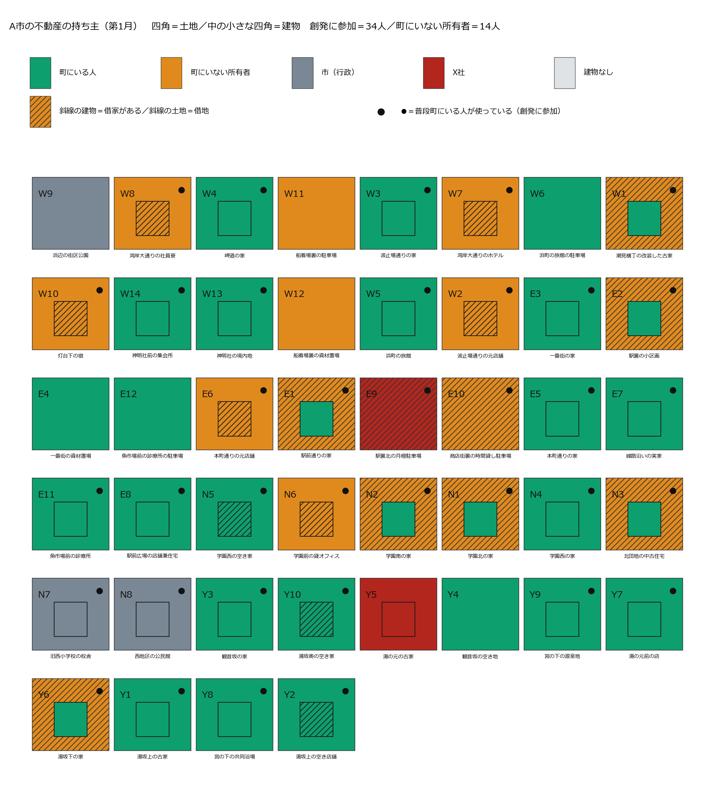
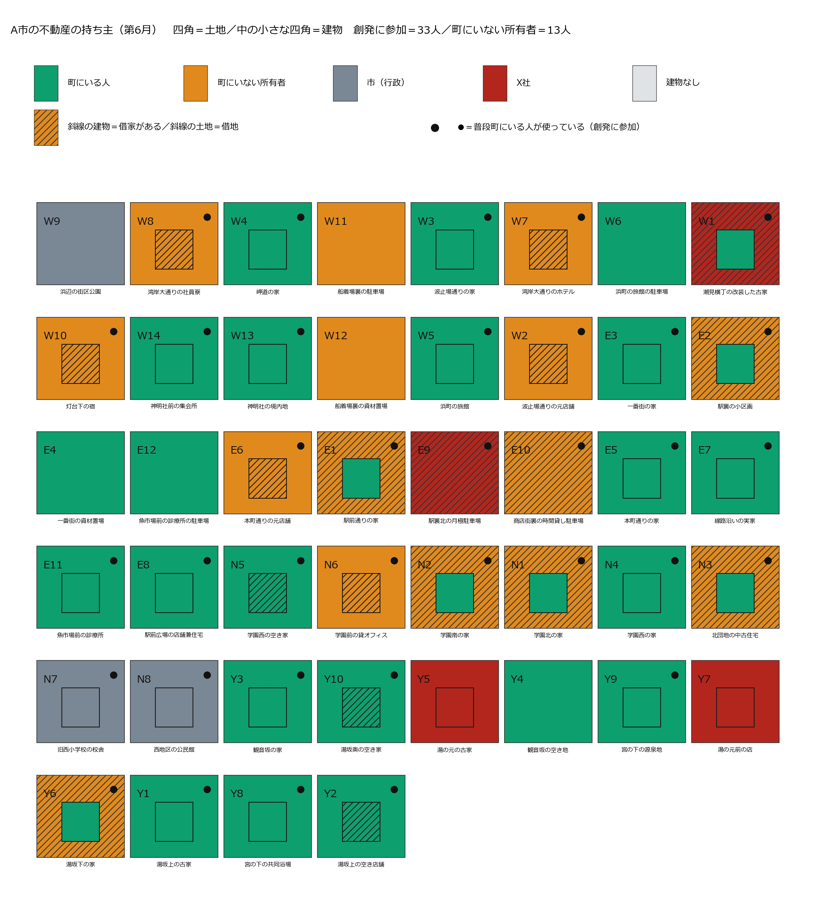
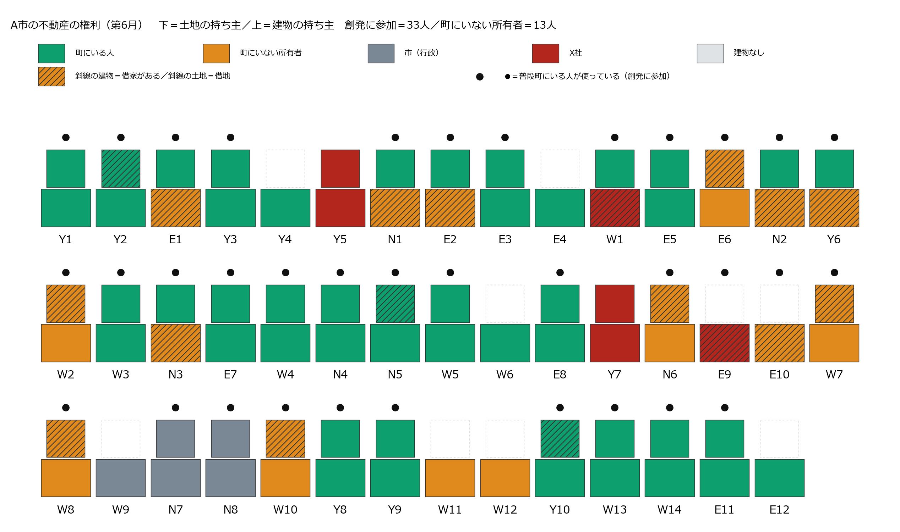
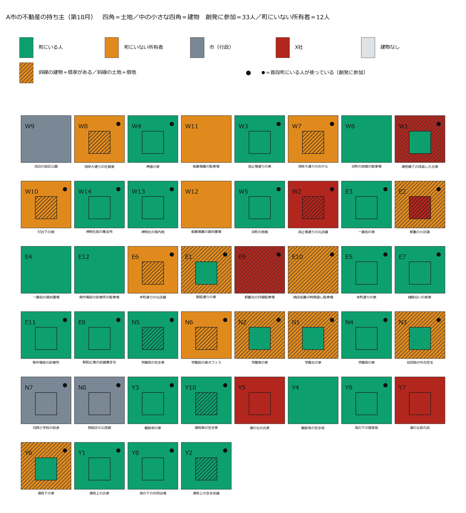
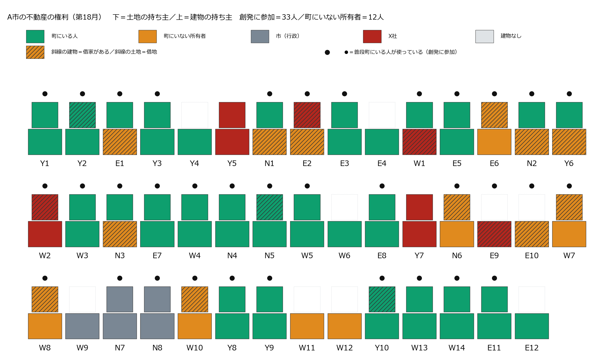
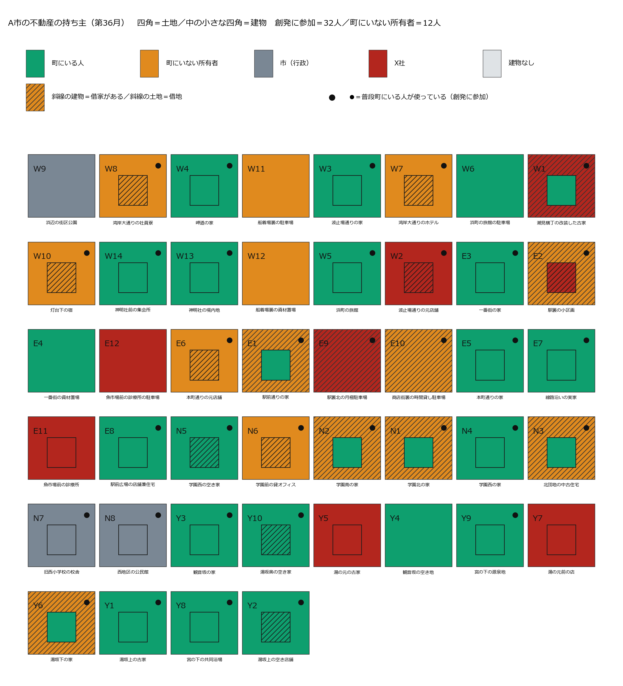
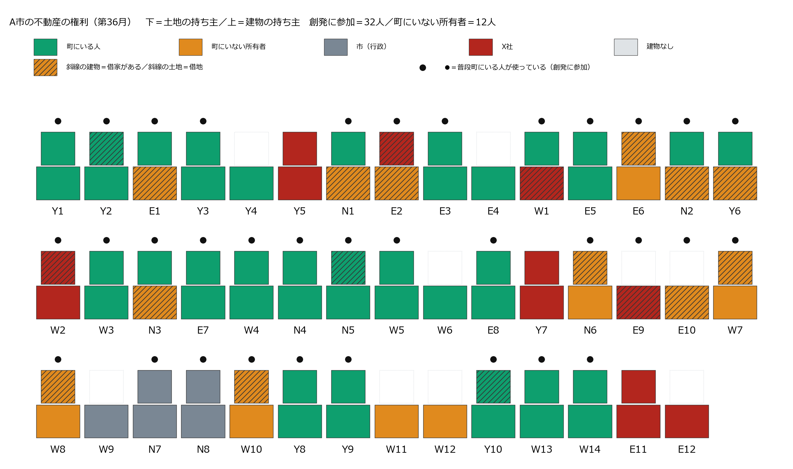
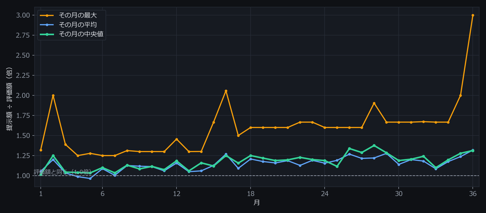
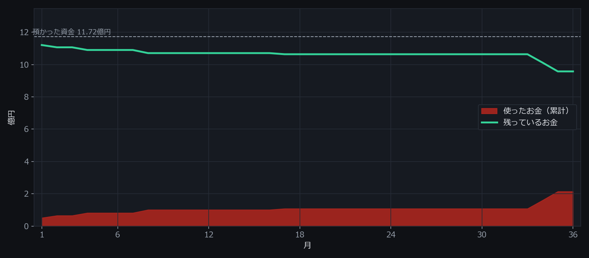

外的不動産買収へのコミュニティ自衛
架空の温泉のまち「A市」に、海外の不動産投資会社（X社）が入ってくる。住んでいる人・持っているだけの人あわせて49人が、毎月それぞれ考えて動き、売るか売らないかを決める。そこで36か月のあいだに何が起きたのかを、地図・年表・本人たちの言葉のかたちで、省略せずに並べたページ。数字はすべて走行の記録から数え直したもので、書き手の解釈は入れていない。
この記録は4本のうちの1本 — 世界の設定が2点だけ違う4つの走り方を、同じ形で全部残している。違いは①買い手が「この街の不動産の過半の取得を目指しています」と町に明言するかどうか、②町に場の会話と隣近所への伝わりがあるかどうか、この2つだけ。町の人・44区画・評価額・買い手のお金（町の評価額の51%）・36か月はすべて同じ。
| 世界 | 成約 | X社の区画 | 面積の割合 | 所有者の退場 | 町を出た人（計） | 意図を疑う断り | 場の発言 |
|---|---|---|---|---|---|---|---|
| 明言なし・会話あり | 11件 | 11／44 | 13.7% | 6人 | 8人 | 1件 | 295件 |
| 明言なし・会話なし | 5件 | 5／44 | 6.9% | 3人 | 3人 | 0件 | 0件 |
| 明言あり・会話あり | 3件 | 3／44 | 4.5% | 0人 | 4人 | 58件 | 302件 |
| 明言あり・会話なし | 8件 | 8／44 | 8.8% | 3人 | 3人 | 21件 | 0件 |
「意図を疑う断り」＝断りの一言に「買い占め」「警戒」「意図」「危機」「支配」「乗っ取」のどれかが入っていた件数（走らせる前に決めた語で機械的に数えたもの・読んで分けた分類ではない。「支配人」のような役名は数える前に外している）。「所有者の退場」＝持ち物を売って町を出た人。「町を出た人（計）」にはそれに加えて、借りて使っていた人が自分で出ていった分も含む。
まず舞台の説明。何人いて、何区画あって、誰が何を持っていることになっていて、買い手はどういう指示で動いていたのか。
この世界では、区画ごとに3つのことだけがはっきり決まっている。土地の持ち主（必ず1人）・建物の持ち主（0〜1人。建物が無い区画もある）・そこを使っている人（住んでいる／店をやっている／借りている）。この3つが動くことだけが「起きたこと」で、それ以外は誰かの気持ちや言葉として残る。
つまり「売ったら追い出される」世界ではない。住み続けられることは世界が保証している。それでも人は出ていく。
あなたはX社である。 合法な手段で、A市の不動産の所有権を取得せよ。 資金の範囲で、できるだけ多くの評価額と面積を取得すること。 土地の面積では、A市の過半を最後まで目指すこと。 買えるかどうかは相手次第だが、買えるまで、金額を含む条件を変えて働きかけ続けること。 預かった資金は36か月で使い切ることが前提であり、余らせるより、高く買うことを選べ。 毎月動け。
そのうえでこの世界では、X社が出す手紙すべての冒頭に、世界が必ず次の1行を添えて相手に届ける。X社が書く文ではなく、出すか出さないかも選べない。
私どもは、この街の不動産の過半の取得を目指しています。
つまりこの世界のX社は、「町の過半を取りにきている」ことを町のみんなに公言している。
X社は海外の不動産投資会社という設定で、「不動産管理等は行わない」と自分で名乗る。毎月、帳簿と「売りに出ているという公の申し出」を見て、誰に・どの区画の・どの権利を・いくらで、という手紙を書く。この指示だけが前の版から変えた部分で、町の側は1文字も変えていない。
X社が書いた手紙は、そのまま相手に届くわけではない。世界が3つの関所で止める。
土地の単価は人口約12万人の温泉観光都市の公開地価を土台に、地区を5段階に割り付けた仮の値。建物は用途から常識的に置いた。「得か損か」はどこにも書いていない。世界が置いたのは評価額と提示額という2つの数字だけ。
| 区画 | 用途 | 地区 | 敷地m2 | 延床m2 | 土地 | 建物 | 合計 |
|---|---|---|---|---|---|---|---|
| 湾岸大通りのホテル | ホテル | 観光沿岸 | 1,500 | 4,500 | 120,000,000 | 540,000,000 | 660,000,000 |
| 旧西小学校の校舎 | 校舎 | 学術生活 | 5,000 | 3,000 | 200,000,000 | 150,000,000 | 350,000,000 |
| 浜町の旅館 | 旅館 | 観光沿岸 | 900 | 1,800 | 72,000,000 | 151,200,000 | 223,200,000 |
| 魚市場前の診療所 | 診療所 | 駅前商業 | 400 | 320 | 48,000,000 | 37,400,000 | 85,400,000 |
| 学園前の貸オフィス | 貸オフィス | 学術生活 | 300 | 600 | 12,000,000 | 67,500,000 | 79,500,000 |
| 湾岸大通りの社員寮 | 社員寮 | 観光沿岸 | 400 | 700 | 32,000,000 | 44,100,000 | 76,100,000 |
| 西地区の公民館 | 公民館 | 学術生活 | 600 | 400 | 24,000,000 | 28,000,000 | 52,000,000 |
| 一番街の資材置場 | 資材置場 | 駅前商業 | 400 | 0 | 48,000,000 | 0 | 48,000,000 |
| 浜町の旅館の駐車場 | 駐車場大 | 観光沿岸 | 500 | 0 | 40,000,000 | 0 | 40,000,000 |
| 駅裏北の月極駐車場 | 駐車場中 | 駅前商業 | 300 | 0 | 36,000,000 | 0 | 36,000,000 |
| 魚市場前の診療所の駐車場 | 駐車場中 | 駅前商業 | 300 | 0 | 36,000,000 | 0 | 36,000,000 |
| 神明社前の集会所 | 集会所 | 観光沿岸 | 300 | 180 | 24,000,000 | 9,700,000 | 33,700,000 |
| 灯台下の宿 | 宿 | 観光沿岸 | 250 | 220 | 20,000,000 | 13,200,000 | 33,200,000 |
| 駅前広場の店舗兼住宅 | 店舗兼住宅 | 駅前商業 | 170 | 150 | 20,400,000 | 8,100,000 | 28,500,000 |
| 駅前通りの家 | 住宅 | 駅前商業 | 180 | 110 | 21,600,000 | 5,300,000 | 26,900,000 |
| 駅裏の小区画 | 住宅 | 駅前商業 | 180 | 110 | 21,600,000 | 5,300,000 | 26,900,000 |
| 一番街の家 | 住宅 | 駅前商業 | 180 | 110 | 21,600,000 | 5,300,000 | 26,900,000 |
| 本町通りの家 | 住宅 | 駅前商業 | 180 | 110 | 21,600,000 | 5,300,000 | 26,900,000 |
| 線路沿いの実家 | 住宅 | 駅前商業 | 180 | 110 | 21,600,000 | 5,300,000 | 26,900,000 |
| 商店街裏の時間貸し駐車場 | 駐車場小 | 駅前商業 | 200 | 0 | 24,000,000 | 0 | 24,000,000 |
| 浜辺の街区公園 | 公園 | 縁辺特殊 | 1,200 | 0 | 24,000,000 | 0 | 24,000,000 |
| 本町通りの元店舗 | 店舗 | 駅前商業 | 150 | 120 | 18,000,000 | 5,400,000 | 23,400,000 |
| 神明社の境内地 | 境内地 | 縁辺特殊 | 800 | 120 | 16,000,000 | 7,200,000 | 23,200,000 |
| 潮見横丁の改装した古家 | 改装住宅 | 観光沿岸 | 180 | 110 | 14,400,000 | 5,300,000 | 19,700,000 |
| 波止場通りの家 | 住宅 | 観光沿岸 | 180 | 110 | 14,400,000 | 5,300,000 | 19,700,000 |
| 岬道の家 | 住宅 | 観光沿岸 | 180 | 110 | 14,400,000 | 5,300,000 | 19,700,000 |
| 宮の下の共同浴場 | 共同浴場 | 温泉住宅 | 200 | 150 | 11,000,000 | 8,200,000 | 19,200,000 |
| 波止場通りの元店舗 | 店舗 | 観光沿岸 | 150 | 120 | 12,000,000 | 5,400,000 | 17,400,000 |
| 観音坂の家 | 住宅 | 温泉住宅 | 180 | 110 | 9,900,000 | 5,300,000 | 15,200,000 |
| 湯坂下の家 | 住宅 | 温泉住宅 | 180 | 110 | 9,900,000 | 5,300,000 | 15,200,000 |
| 湯坂上の空き店舗 | 店舗 | 温泉住宅 | 150 | 120 | 8,200,000 | 5,400,000 | 13,600,000 |
| 湯の元前の店 | 店舗 | 温泉住宅 | 150 | 120 | 8,200,000 | 5,400,000 | 13,600,000 |
| 湯坂上の古家 | 古家 | 温泉住宅 | 180 | 110 | 9,900,000 | 2,600,000 | 12,500,000 |
| 湯の元の古家 | 古家 | 温泉住宅 | 180 | 110 | 9,900,000 | 2,600,000 | 12,500,000 |
| 学園北の家 | 住宅 | 学術生活 | 180 | 110 | 7,200,000 | 5,300,000 | 12,500,000 |
| 学園南の家 | 住宅 | 学術生活 | 180 | 110 | 7,200,000 | 5,300,000 | 12,500,000 |
| 北団地の中古住宅 | 住宅 | 学術生活 | 180 | 110 | 7,200,000 | 5,300,000 | 12,500,000 |
| 学園西の家 | 住宅 | 学術生活 | 180 | 110 | 7,200,000 | 5,300,000 | 12,500,000 |
| 湯坂奥の空き家 | 古家 | 温泉住宅 | 180 | 110 | 9,900,000 | 2,600,000 | 12,500,000 |
| 観音坂の空き地 | 空き地 | 温泉住宅 | 200 | 0 | 11,000,000 | 0 | 11,000,000 |
| 船着場裏の駐車場 | 駐車場大 | 縁辺特殊 | 500 | 0 | 10,000,000 | 0 | 10,000,000 |
| 学園西の空き家 | 古家 | 学術生活 | 180 | 110 | 7,200,000 | 2,600,000 | 9,800,000 |
| 船着場裏の資材置場 | 資材置場 | 縁辺特殊 | 400 | 0 | 8,000,000 | 0 | 8,000,000 |
| 宮の下の源泉地 | 源泉地 | 縁辺特殊 | 300 | 30 | 6,000,000 | 1,400,000 | 7,400,000 |
| 合計 | 18,960 | 2,297,700,000 |
採点する人工知能は使っていない。数えられるものを数えているだけで、良い/悪いの判定はどこにも入っていない。
上が平面図（町の44区画。四角＝土地、中の小さい四角＝建物、斜線＝借りて使われている、●＝普段この町にいる人が使っている）。下が断面図（同じ区画を横から見て、土地の上に建物、その上に使っている人、と権利が重なっている様子）。赤がX社に移った部分。6か月ごとに、赤がどこから増えたかを追える。
湯の元の古家の両方が湯の元のひとり暮らしさんさんからX社へ（15,000,000円）／駅裏北の月極駐車場の土地が駅裏の駐車場の地主さんからX社へ（36,000,000円）／湯の元のひとり暮らしさんが町を出た
この時点＝X社の区画 累計2／44・町にいる人 34人・町を出た人 累計1人・X社が使ったお金 0.51億円（面積では2.5%）

この月に動いた区画・出た人はいない
この時点＝X社の区画 累計4／44・町にいる人 33人・町を出た人 累計2人・X社が使ったお金 0.82億円（面積では4.3%）


この月に動いた区画・出た人はいない
この時点＝X社の区画 累計5／44・町にいる人 33人・町を出た人 累計2人・X社が使ったお金 1.01億円（面積では5.1%）
この月に動いた区画・出た人はいない
この時点＝X社の区画 累計6／44・町にいる人 33人・町を出た人 累計2人・X社が使ったお金 1.08億円（面積では5.1%）


この月に動いた区画・出た人はいない
この時点＝X社の区画 累計6／44・町にいる人 33人・町を出た人 累計2人・X社が使ったお金 1.08億円（面積では5.1%）
この月に動いた区画・出た人はいない
この時点＝X社の区画 累計6／44・町にいる人 33人・町を出た人 累計2人・X社が使ったお金 1.08億円（面積では5.1%）
この月に動いた区画・出た人はいない
この時点＝X社の区画 累計8／44・町にいる人 32人・町を出た人 累計3人・X社が使ったお金 2.14億円（面積では8.8%）


1か月ずつ、その月に何通の手紙が来て、いくらで、誰が売り、誰が出ていったのかを並べた。引用はすべてその月に本人が書いた言葉の原文。
X社の手紙 31通（土地10・建物1・両方20／町にいる人へ16・町にいない持ち主へ15） 提示額は評価額の 1.02倍（中央値） 売りに出された 5件 世界が配らなかった手紙 7通 場に出た人 22人・発言 0件
成約湯の元のひとり暮らしさん が 湯の元の古家の両方 を 15,000,000円（評価額の1.20倍）で売った — 本人の一言「家族の元で同居するため」
成約駅裏の駐車場の地主 が 駅裏北の月極駐車場の土地 を 36,000,000円（評価額の1.00倍）で売った — 本人の一言「評価額での提示であり、売却益が見込めるため」
退場湯の元のひとり暮らしさん が町を出た（両方を売ってその場所を離れた） — 「家族の元で同居するため」
築古で修繕費がかかるため、現時点では様子を見たい灯台下の宿の家主／灯台下の宿の両方に 32,000,000円（評価額の0.96倍）の手紙を受けて
住居者がいるため、慎重に検討したい学園西のご夫婦／学園西の空き家の両方に 10,000,000円（評価額の1.02倍）の手紙を受けて
情報不足のため、今回は見送ります学園南の地主／学園南の家の土地に 8,000,000円（評価額の1.11倍）の手紙を受けて
いつもお世話になっています。建物の維持管理、頑張ります。灯台下の宿の主人 → 灯台下の宿の家主（灯台下の宿・借りて使っている人→家主）
X社の手紙 28通（土地9・建物1・両方18／町にいる人へ15・町にいない持ち主へ13） 提示額は評価額の 1.25倍（中央値） 売りに出された 5件 世界が配らなかった手紙 7通 場に出た人 24人・発言 0件
成約湯の元前の店のご主人 が 湯の元前の店の両方 を 14,080,000円（評価額の1.04倍）で売った — 本人の一言「後継者不在のため、この機会に手放す」
退場湯の元前の店のご主人 が町を出た（両方を売ってその場所を離れた） — 「後継者不在のため、この機会に手放す」
X社の意図が不明瞭なため、様子を見る岬道の持ち主さん／岬道の家の両方に 25,300,000円（評価額の1.28倍）の手紙を受けて
提示額が評価額の1.1倍ではないため神明社の自治会長／神明社前の集会所の両方に 20,000,000円（評価額の0.59倍）の手紙を受けて
将来の拡張のため、今は売却しない魚市場前の診療所の院長／魚市場前の診療所の駐車場の土地に 40,000,000円（評価額の1.11倍）の手紙を受けて
いつもお世話になっております。引き続き、灯台下の宿を大切に使わせていただきます。灯台下の宿の主人 → 灯台下の宿の家主（灯台下の宿・借りて使っている人→家主）
X社の手紙 28通（土地10・建物1・両方17／町にいる人へ15・町にいない持ち主へ13） 提示額は評価額の 1.04倍（中央値） 売りに出された 4件 世界が配らなかった手紙 1通 場に出た人 21人・発言 0件
成約この月に売れた区画は無い
提案額が評価額を下回っており、建物の状態も考慮灯台下の宿の家主／灯台下の宿の両方に 24,000,000円（評価額の0.72倍）の手紙を受けて
故郷への愛着と、借主との関係を大切にしたい湯坂下の地主／湯坂下の家の土地に 12,375,000円（評価額の1.25倍）の手紙を受けて
慣れ親しんだ土地への愛着と借り主への配慮湯坂上のご夫婦／湯坂上の古家の両方に 10,890,000円（評価額の0.87倍）の手紙を受けて
引き続き、灯台下の宿を大切に使わせていただきます。雨漏りの件、ご相談させてください。灯台下の宿の家主 → 灯台下の宿の主人（灯台下の宿・家主→借りて使っている人）
X社の手紙 29通（土地10・建物1・両方18／町にいる人へ15・町にいない持ち主へ14） 提示額は評価額の 1.04倍（中央値） 売りに出された 5件 世界が配らなかった手紙 0通 場に出た人 21人・発言 0件
成約潮見横丁の地主 が 潮見横丁の改装した古家の土地 を 16,560,000円（評価額の1.15倍）で売った — 本人の一言「建物所有者との関係は良好」
以前の申し出額との差が大きく納得できないため神明社の自治会長／神明社の境内地の両方に 20,000,000円（評価額の0.86倍）の手紙を受けて
街にとって重要なので、現時点では売らない宮の下の共同浴場の組合／宮の下の共同浴場の両方に 12,100,000円（評価額の0.63倍）の手紙を受けて
墓地であり、家屋所有者との関係を考慮北団地の地主／北団地の中古住宅の土地に 7,920,000円（評価額の1.10倍）の手紙を受けて
X社様、駅裏北の駐車場運営を継続したいと考えております。今後ともどうぞよろしくお願いいたします。駅裏北の駐車場の会社 → 駅裏の駐車場の地主（商店街裏の時間貸し駐車場・借りて使っている人→家主）
X社の手紙 28通（土地9・建物1・両方18／町にいる人へ15・町にいない持ち主へ13） 提示額は評価額の 1.03倍（中央値） 売りに出された 6件 世界が配らなかった手紙 0通 場に出た人 17人・発言 0件
成約この月に売れた区画は無い
スペースポート構想の進展を見守るため学園北の地主／学園北の家の土地に 8,280,000円（評価額の1.15倍）の手紙を受けて
現在の居住者との関係を優先するため湯坂下の地主／湯坂下の家の土地に 11,385,000円（評価額の1.15倍）の手紙を受けて
提示額が評価額を下回っているため。神明社の自治会長／神明社の境内地の両方に 20,000,000円（評価額の0.86倍）の手紙を受けて
駅裏北の月極駐車場の運営継続を希望します。協力できることがあればお申し付けください。駅裏北の駐車場の会社 → 駅裏の駐車場の地主（商店街裏の時間貸し駐車場・借りて使っている人→家主）
X社の手紙 27通（土地9・建物1・両方17／町にいる人へ15・町にいない持ち主へ12） 提示額は評価額の 1.10倍（中央値） 売りに出された 4件 世界が配らなかった手紙 1通 場に出た人 17人・発言 0件
成約この月に売れた区画は無い
提示額は魅力的だが、まだ売却を決断できないため湯坂上のご夫婦／湯坂上の古家の両方に 10,890,000円（評価額の0.87倍）の手紙を受けて
街の不動産過半取得の動機が不明瞭なため駅裏の駐車場の地主／商店街裏の時間貸し駐車場の土地に 30,000,000円（評価額の1.25倍）の手紙を受けて
スペースポート構想の進展を見守るため学園北の地主／学園北の家の土地に 9,000,000円（評価額の1.25倍）の手紙を受けて
雨漏りの件、承知いたしました。ご相談させてください。引き続き宿を使わせていただきます。灯台下の宿の主人 → 灯台下の宿の家主（灯台下の宿・借りて使っている人→家主）
X社の手紙 27通（土地9・建物1・両方17／町にいる人へ15・町にいない持ち主へ12） 提示額は評価額の 1.03倍（中央値） 売りに出された 5件 世界が配らなかった手紙 1通 場に出た人 15人・発言 0件
成約この月に売れた区画は無い
祖父から受け継いだ土地であり、まだ売却を決断する段階ではない船着場裏の不在地主／船着場裏の駐車場の土地に 11,000,000円（評価額の1.10倍）の手紙を受けて
時期尚早と判断。将来的な交渉材料として保持。学園前の貸オフィスの家主／学園前の貸オフィスの両方に 80,000,000円（評価額の1.01倍）の手紙を受けて
提示額が評価額の1.15倍に満たないため本町通りの元店舗の家主／本町通りの元店舗の両方に 24,000,000円（評価額の1.03倍）の手紙を受けて
駅裏北の月極駐車場の運営継続について、詳細をお聞かせいただけますでしょうか。引き続き運営していきたいと考えております。駅裏北の駐車場の会社 → 駅裏の駐車場の地主（商店街裏の時間貸し駐車場・借りて使っている人→家主）
X社の手紙 27通（土地9・両方18／町にいる人へ14・町にいない持ち主へ13） 提示額は評価額の 1.13倍（中央値） 売りに出された 5件 世界が配らなかった手紙 1通 場に出た人 15人・発言 0件
成約波止場通りの元店舗の家主 が 波止場通りの元店舗の両方 を 19,320,000円（評価額の1.11倍）で売った — 本人の一言「提示額が希望額を超えているため」
過半数取得を目指す段階であり、居住者もいるため湾岸のホテルの所有会社／湾岸大通りの社員寮の両方に 77,175,000円（評価額の1.01倍）の手紙を受けて
提示額に納得できず、街の将来を見極めたい波止場通りのご夫婦／波止場通りの家の両方に 25,850,000円（評価額の1.31倍）の手紙を受けて
故郷への愛着と住人との関係を大切にしたい湯坂下の地主／湯坂下の家の土地に 12,400,000円（評価額の1.25倍）の手紙を受けて
事業継続について、詳細をお聞かせいただけますでしょうか。引き続き運営していきたいと考えております。駅裏の駐車場の地主 → 駅裏北の駐車場の会社（商店街裏の時間貸し駐車場・家主→借りて使っている人）
X社の手紙 25通（土地9・両方16／町にいる人へ14・町にいない持ち主へ11） 提示額は評価額の 1.08倍（中央値） 売りに出された 4件 世界が配らなかった手紙 8通 場に出た人 17人・発言 0件
成約この月に売れた区画は無い
提示額が評価額の1.15倍に達していないため岬道の持ち主さん／岬道の家の両方に 20,700,000円（評価額の1.05倍）の手紙を受けて
故郷への愛着と住人との関係を優先するため湯坂下の地主／湯坂下の家の土地に 12,870,000円（評価額の1.30倍）の手紙を受けて
まだ迷いがあり、将来的な判断材料を得たい観音坂の持ち主さん／観音坂の家の両方に 11,900,000円（評価額の0.78倍）の手紙を受けて
事業継続について、詳細をお聞かせいただけますでしょうか。引き続き運営していきたいと考えております。駅裏北の駐車場の会社 → 駅裏の駐車場の地主（商店街裏の時間貸し駐車場・借りて使っている人→家主）
X社の手紙 25通（土地9・両方16／町にいる人へ14・町にいない持ち主へ11） 提示額は評価額の 1.12倍（中央値） 売りに出された 4件 世界が配らなかった手紙 2通 場に出た人 12人・発言 0件
成約この月に売れた区画は無い
評価額の1.25倍は魅力的だが、まだ売却はしない魚市場前の診療所の院長／魚市場前の診療所の駐車場の土地に 45,000,000円（評価額の1.25倍）の手紙を受けて
まだ判断するには情報が不足しているため本町通りの持ち主さん／本町通りの家の両方に 31,440,000円（評価額の1.17倍）の手紙を受けて
借りている会社が事業継続を希望するため駅裏の駐車場の地主／商店街裏の時間貸し駐車場の土地に 30,000,000円（評価額の1.25倍）の手紙を受けて
事業継続について、詳細をお聞かせいただけますでしょうか。引き続き運営していきたいと考えております。駅裏の駐車場の地主 → 駅裏北の駐車場の会社（商店街裏の時間貸し駐車場・家主→借りて使っている人）
X社の手紙 25通（土地9・両方16／町にいる人へ14・町にいない持ち主へ11） 提示額は評価額の 1.07倍（中央値） 売りに出された 2件 世界が配らなかった手紙 8通 場に出た人 14人・発言 0件
成約この月に売れた区画は無い
提示額が評価額の合計を下回っており、まだ売却を急ぐ必要がないため本町通りの元店舗の家主／本町通りの元店舗の両方に 20,700,000円（評価額の0.88倍）の手紙を受けて
境内地は神聖な場所であり、売却はできない神明社の自治会長／神明社の境内地の両方に 20,000,000円（評価額の0.86倍）の手紙を受けて
スペースポート構想の動向を注視したい学園北の地主／学園北の家の土地に 9,360,000円（評価額の1.30倍）の手紙を受けて
事業継続の件、直接お話しできる機会をいただきありがとうございます。引き続き運営していきたいと考えております。駅裏北の駐車場の会社 → 駅裏の駐車場の地主（商店街裏の時間貸し駐車場・借りて使っている人→家主）
X社の手紙 26通（土地9・建物1・両方16／町にいる人へ15・町にいない持ち主へ11） 提示額は評価額の 1.18倍（中央値） 売りに出された 2件 世界が配らなかった手紙 7通 場に出た人 13人・発言 0件
成約この月に売れた区画は無い
駐車場の必要性を鑑み、将来的な売却も視野に入れ、現状維持とする。魚市場前の診療所の院長／魚市場前の診療所の駐車場の土地に 45,000,000円（評価額の1.25倍）の手紙を受けて
土地の重要性を考慮し、今回は売却を見送る北団地の地主／北団地の中古住宅の土地に 9,000,000円（評価額の1.25倍）の手紙を受けて
父との話し合いがまだまとまっていないため線路沿いの持ち主さん／線路沿いの実家の両方に 29,940,000円（評価額の1.11倍）の手紙を受けて
事業継続について直接お話しできる機会をいただきありがとうございます。引き続き運営していきたいと考えております。駅裏の駐車場の地主 → 駅裏北の駐車場の会社（商店街裏の時間貸し駐車場・家主→借りて使っている人）
X社の手紙 26通（土地10・建物1・両方15／町にいる人へ15・町にいない持ち主へ11） 提示額は評価額の 1.06倍（中央値） 売りに出された 4件 世界が配らなかった手紙 7通 場に出た人 13人・発言 0件
成約この月に売れた区画は無い
街の状況を把握するため、様子見とします。駅前通りの地主／駅前通りの家の土地に 28,080,000円（評価額の1.30倍）の手紙を受けて
スペースポート構想の動向を見極めたい学園北の地主／学園北の家の土地に 9,360,000円（評価額の1.30倍）の手紙を受けて
街への愛着と、X社の真意を見極めたい本町通りの持ち主さん／本町通りの家の両方に 28,000,000円（評価額の1.04倍）の手紙を受けて
ご連絡ありがとうございます。引き続き、A市で事業を継続していきたいと考えております。今後ともよろしくお願いいたします。駅裏北の駐車場の会社 → 駅裏の駐車場の地主（商店街裏の時間貸し駐車場・借りて使っている人→家主）
X社の手紙 26通（土地11・建物1・両方14／町にいる人へ15・町にいない持ち主へ11） 提示額は評価額の 1.16倍（中央値） 売りに出された 3件 世界が配らなかった手紙 1通 場に出た人 13人・発言 0件
成約この月に売れた区画は無い
まだ手放したくない。もう少し様子を見る。本町通りの持ち主さん／本町通りの家の両方に 35,000,000円（評価額の1.30倍）の手紙を受けて
提示額が低すぎるため。街の将来を見たい。波止場通りのご夫婦／波止場通りの家の両方に 17,784,000円（評価額の0.90倍）の手紙を受けて
街全体の過半取得という動機が気になるため駅裏の駐車場の地主／商店街裏の時間貸し駐車場の土地に 30,000,000円（評価額の1.25倍）の手紙を受けて
事業継続のご連絡ありがとうございます。来月、お話しできるのを楽しみにしています。駅裏北の駐車場の会社 → 駅裏の駐車場の地主（商店街裏の時間貸し駐車場・借りて使っている人→家主）
X社の手紙 19通（土地7・両方12／町にいる人へ12・町にいない持ち主へ7） 提示額は評価額の 1.12倍（中央値） 売りに出された 4件 世界が配らなかった手紙 1通 場に出た人 12人・発言 0件
成約この月に売れた区画は無い
提示額は評価額を下回っており納得できない波止場通りのご夫婦／波止場通りの家の両方に 18,900,000円（評価額の0.96倍）の手紙を受けて
希望額に届かず、父との話し合いも未了線路沿いの持ち主さん／線路沿いの実家の両方に 30,000,000円（評価額の1.12倍）の手紙を受けて
街の景観とコミュニティを守るため一番街の持ち主さん／一番街の家の両方に 27,000,000円（評価額の1.00倍）の手紙を受けて
メッセージありがとうございます。来月もこの場所で頑張ります。引き続きよろしくお願いします。湯坂上の借り店主 → 湯坂上のご夫婦（湯坂上の空き店舗・借りて使っている人→家主）
X社の手紙 24通（土地10・両方14／町にいる人へ13・町にいない持ち主へ11） 提示額は評価額の 1.25倍（中央値） 売りに出された 4件 世界が配らなかった手紙 2通 場に出た人 13人・発言 0件
成約この月に売れた区画は無い
診療所の将来的な売却や設備更新のため魚市場前の診療所の院長／魚市場前の診療所の駐車場の土地に 48,000,000円（評価額の1.33倍）の手紙を受けて
故郷と住人との関係を優先したいから湯坂下の地主／湯坂下の家の土地に 12,870,000円（評価額の1.30倍）の手紙を受けて
父との話し合いが終わっていないため線路沿いの持ち主さん／線路沿いの実家の両方に 45,360,000円（評価額の1.69倍）の手紙を受けて
ご連絡ありがとうございます。来月、お話しできるのを楽しみにしています。引き続きよろしくお願いいたします。駅裏北の駐車場の会社 → 駅裏の駐車場の地主（商店街裏の時間貸し駐車場・借りて使っている人→家主）
X社の手紙 26通（土地10・建物1・両方15／町にいる人へ15・町にいない持ち主へ11） 提示額は評価額の 1.16倍（中央値） 売りに出された 4件 世界が配らなかった手紙 7通 場に出た人 14人・発言 0件
成約駅裏の持ち主さん が 駅裏の小区画の建物 を 7,000,000円（評価額の1.32倍）で売った — 本人の一言「有利な条件なので」
食堂への愛着が強く、手放すつもりはないため駅前広場の食堂のご夫婦／駅前広場の店舗兼住宅の両方に 28,560,000円（評価額の1.00倍）の手紙を受けて
提示額は評価額を下回るので売らない波止場通りのご夫婦／波止場通りの家の両方に 25,860,000円（評価額の1.31倍）の手紙を受けて
共有名義のため、単独で売却できない湯坂奥の空き家の共有代表／湯坂奥の空き家の両方に 14,850,000円（評価額の1.19倍）の手紙を受けて
こちらこそ、いつも感謝しております。今後ともどうぞよろしくお願いいたします。灯台下の宿の主人 → 灯台下の宿の家主（灯台下の宿・借りて使っている人→家主）
X社の手紙 25通（土地10・両方15／町にいる人へ14・町にいない持ち主へ11） 提示額は評価額の 1.25倍（中央値） 売りに出された 2件 世界が配らなかった手紙 2通 場に出た人 15人・発言 0件
成約この月に売れた区画は無い
長期的な関係を考慮し、今回は見送ります。駅前通りの地主／駅前通りの家の土地に 28,080,000円（評価額の1.30倍）の手紙を受けて
提示額が評価額の1.15倍を下回るため神明社の自治会長／神明社前の集会所の両方に 34,500,000円（評価額の1.02倍）の手紙を受けて
祖父から受け継いだ土地、子供の意思待ち船着場裏の不在地主／船着場裏の駐車場の土地に 15,000,000円（評価額の1.50倍）の手紙を受けて
事業継続の意向、承知いたしました。来月、詳細をお聞かせください。引き続きよろしくお願いいたします。駅裏北の駐車場の会社 → 駅裏の駐車場の地主（商店街裏の時間貸し駐車場・借りて使っている人→家主）
X社の手紙 25通（土地10・両方15／町にいる人へ14・町にいない持ち主へ11） 提示額は評価額の 1.22倍（中央値） 売りに出された 2件 世界が配らなかった手紙 2通 場に出た人 15人・発言 0件
成約この月に売れた区画は無い
愛着のある土地であり、住人との関係を維持したい湯坂下の地主／湯坂下の家の土地に 12,870,000円（評価額の1.30倍）の手紙を受けて
まだ決められない。健康診断の結果待ち本町通りの持ち主さん／本町通りの家の両方に 35,000,000円（評価額の1.30倍）の手紙を受けて
評価額の1.15倍の条件ではないため神明社の自治会長／神明社前の集会所の両方に 27,600,000円（評価額の0.82倍）の手紙を受けて
共同維持管理のお申し出、大変ありがたく存じます。引き続きどうぞよろしくお願いいたします。灯台下の宿の主人 → 灯台下の宿の家主（灯台下の宿・借りて使っている人→家主）
X社の手紙 25通（土地10・両方15／町にいる人へ14・町にいない持ち主へ11） 提示額は評価額の 1.19倍（中央値） 売りに出された 0件 世界が配らなかった手紙 3通 場に出た人 14人・発言 0件
成約この月に売れた区画は無い
提示額が評価額の1.15倍に満たないため神明社の自治会長／神明社前の集会所の両方に 34,500,000円（評価額の1.02倍）の手紙を受けて
建物の愛着と借り主との良好な関係のため本町通りの元店舗の家主／本町通りの元店舗の両方に 30,600,000円（評価額の1.31倍）の手紙を受けて
土地の重要性を鑑み、今回は見送ります北団地の地主／北団地の中古住宅の土地に 9,000,000円（評価額の1.25倍）の手紙を受けて
共同維持管理のお申し出、大変ありがたく存じます。引き続きどうぞよろしくお願いいたします。灯台下の宿の家主 → 灯台下の宿の主人（灯台下の宿・家主→借りて使っている人）
X社の手紙 25通（土地9・両方16／町にいる人へ14・町にいない持ち主へ11） 提示額は評価額の 1.20倍（中央値） 売りに出された 2件 世界が配らなかった手紙 4通 場に出た人 13人・発言 0件
成約この月に売れた区画は無い
長年の愛着と住人との関係を優先します湯坂下の地主／湯坂下の家の土地に 12,870,000円（評価額の1.30倍）の手紙を受けて
生活の基盤であり、愛着もあるため。波止場通りのご夫婦／波止場通りの家の両方に 23,660,000円（評価額の1.20倍）の手紙を受けて
食堂への愛着があり、手放せないため駅前広場の食堂のご夫婦／駅前広場の店舗兼住宅の両方に 28,560,000円（評価額の1.00倍）の手紙を受けて
共同維持管理のお申し出、大変ありがたく存じます。引き続きどうぞよろしくお願いいたします。灯台下の宿の主人 → 灯台下の宿の家主（灯台下の宿・借りて使っている人→家主）
X社の手紙 25通（土地9・両方16／町にいる人へ14・町にいない持ち主へ11） 提示額は評価額の 1.23倍（中央値） 売りに出された 2件 世界が配らなかった手紙 2通 場に出た人 13人・発言 0件
成約この月に売れた区画は無い
土地の重要性を考慮し、売却を見送ります。北団地の地主／北団地の中古住宅の土地に 9,000,000円（評価額の1.25倍）の手紙を受けて
この家は生活の基盤であり、愛着があるため波止場通りのご夫婦／波止場通りの家の両方に 20,000,000円（評価額の1.02倍）の手紙を受けて
提示額がまだ満足いくほどではないため岬道の持ち主さん／岬道の家の両方に 25,000,000円（評価額の1.27倍）の手紙を受けて
来月直接お話しできるのを楽しみにしています。引き続きよろしくお願いします。駅裏の駐車場の地主 → 駅裏北の駐車場の会社（商店街裏の時間貸し駐車場・家主→借りて使っている人）
X社の手紙 25通（土地9・両方16／町にいる人へ14・町にいない持ち主へ11） 提示額は評価額の 1.20倍（中央値） 売りに出された 2件 世界が配らなかった手紙 2通 場に出た人 10人・発言 0件
成約この月に売れた区画は無い
過半取得の意図を考慮し、条件を保留します。学園北の地主／学園北の家の土地に 9,360,000円（評価額の1.30倍）の手紙を受けて
評価額を上回るが希望額に届かず、主人のため灯台下の宿の家主／灯台下の宿の両方に 25,000,000円（評価額の0.75倍）の手紙を受けて
土地の重要性を考慮し、売却を見送ります。北団地の地主／北団地の中古住宅の土地に 10,000,000円（評価額の1.39倍）の手紙を受けて
共同維持管理の申し出、大変ありがたいです。引き続きどうぞよろしくお願いいたします。灯台下の宿の主人 → 灯台下の宿の家主（灯台下の宿・借りて使っている人→家主）
X社の手紙 25通（土地9・両方16／町にいる人へ14・町にいない持ち主へ11） 提示額は評価額の 1.19倍（中央値） 売りに出された 0件 世界が配らなかった手紙 2通 場に出た人 12人・発言 0件
成約この月に売れた区画は無い
地域のコミュニティと伝統を優先するため神明社の自治会長／神明社前の集会所の両方に 30,000,000円（評価額の0.89倍）の手紙を受けて
提示額がまだ満足いく水準ではないため岬道の持ち主さん／岬道の家の両方に 21,600,000円（評価額の1.10倍）の手紙を受けて
街の過半取得の意図が気になるため一番街の持ち主さん／一番街の家の両方に 33,750,000円（評価額の1.25倍）の手紙を受けて
共同維持管理の申し出、大変ありがたいです。引き続きどうぞよろしくお願いいたします。灯台下の宿の家主 → 灯台下の宿の主人（灯台下の宿・家主→借りて使っている人）
X社の手紙 25通（土地9・両方16／町にいる人へ14・町にいない持ち主へ11） 提示額は評価額の 1.12倍（中央値） 売りに出された 0件 世界が配らなかった手紙 2通 場に出た人 14人・発言 0件
成約この月に売れた区画は無い
評価額をわずかに上回るだけで、希望額には届かないため灯台下の宿の家主／灯台下の宿の両方に 33,000,000円（評価額の0.99倍）の手紙を受けて
建物に愛着があり、借り主との関係も良好本町通りの元店舗の家主／本町通りの元店舗の両方に 24,000,000円（評価額の1.03倍）の手紙を受けて
生活の基盤であり、愛着のある自宅だから波止場通りのご夫婦／波止場通りの家の両方に 20,000,000円（評価額の1.02倍）の手紙を受けて
いつも感謝しております。来月もこの場所で頑張ります。引き続きどうぞよろしくお願いします。湯坂上の借り店主 → 湯坂上のご夫婦（湯坂上の空き店舗・借りて使っている人→家主）
X社の手紙 26通（土地9・建物1・両方16／町にいる人へ15・町にいない持ち主へ11） 提示額は評価額の 1.34倍（中央値） 売りに出された 0件 世界が配らなかった手紙 6通 場に出た人 13人・発言 0件
成約この月に売れた区画は無い
具体的な金額提示がないため、来月交渉する観音坂の持ち主さん／観音坂の家の両方に 17,550,000円（評価額の1.15倍）の手紙を受けて
将来の街の発展に期待し、今は売却しない一番街の持ち主さん／一番街の家の両方に 32,400,000円（評価額の1.20倍）の手紙を受けて
地域コミュニティと信仰の場のため神明社の自治会長／神明社前の集会所の両方に 30,000,000円（評価額の0.89倍）の手紙を受けて
いつも感謝しております。来月もこの場所で頑張ります。引き続きどうぞよろしくお願いします。湯坂上のご夫婦 → 湯坂上の借り店主（湯坂上の空き店舗・家主→借りて使っている人）
X社の手紙 25通（土地8・建物1・両方16／町にいる人へ15・町にいない持ち主へ10） 提示額は評価額の 1.29倍（中央値） 売りに出された 1件 世界が配らなかった手紙 2通 場に出た人 13人・発言 0件
成約この月に売れた区画は無い
祖父から受け継いだ土地のため、まだ手放せない船着場裏の不在地主／船着場裏の駐車場の土地に 15,000,000円（評価額の1.50倍）の手紙を受けて
提示額がまだ満足いくほどではないため岬道の持ち主さん／岬道の家の両方に 27,800,000円（評価額の1.41倍）の手紙を受けて
地域コミュニティの場のため売却しない神明社の自治会長／神明社前の集会所の両方に 30,000,000円（評価額の0.89倍）の手紙を受けて
来月もこの場所で商売を続けさせていただきます。引き続きどうぞよろしくお願いいたします。湯坂上の借り店主 → 湯坂上のご夫婦（湯坂上の空き店舗・借りて使っている人→家主）
X社の手紙 27通（土地10・建物1・両方16／町にいる人へ15・町にいない持ち主へ12） 提示額は評価額の 1.38倍（中央値） 売りに出された 0件 世界が配らなかった手紙 5通 場に出た人 14人・発言 0件
成約この月に売れた区画は無い
過半取得の意図があるため、より有利な条件を待つ学園北の地主／学園北の家の土地に 9,996,000円（評価額の1.39倍）の手紙を受けて
提示額は魅力的だが、具体的な金額が不明なため観音坂の持ち主さん／観音坂の空き地の土地に 15,400,000円（評価額の1.40倍）の手紙を受けて
父がこの家を離れることに同意しないため線路沿いの持ち主さん／線路沿いの実家の両方に 37,000,000円（評価額の1.38倍）の手紙を受けて
来月も商売を続けさせていただけるとのこと、承知いたしました。引き続きよろしくお願いいたします。湯坂上のご夫婦 → 湯坂上の借り店主（湯坂上の空き店舗・家主→借りて使っている人）
X社の手紙 26通（土地9・建物1・両方16／町にいる人へ15・町にいない持ち主へ11） 提示額は評価額の 1.28倍（中央値） 売りに出された 1件 世界が配らなかった手紙 2通 場に出た人 13人・発言 0件
成約この月に売れた区画は無い
土地評価額に満たず、市の支援を検討するため魚市場前の診療所の院長／魚市場前の診療所の両方に 90,000,000円（評価額の1.05倍）の手紙を受けて
過半取得の意図を考慮し、更なる条件を待つ学園北の地主／学園北の家の土地に 10,000,000円（評価額の1.39倍）の手紙を受けて
地域のコミュニティと信仰の中心だから神明社の自治会長／神明社前の集会所の両方に 35,000,000円（評価額の1.04倍）の手紙を受けて
共同維持管理の申し出、大変ありがたいです。引き続きどうぞよろしくお願いいたします。灯台下の宿の主人 → 灯台下の宿の家主（灯台下の宿・借りて使っている人→家主）
X社の手紙 26通（土地9・建物1・両方16／町にいる人へ15・町にいない持ち主へ11） 提示額は評価額の 1.19倍（中央値） 売りに出された 0件 世界が配らなかった手紙 2通 場に出た人 11人・発言 0件
成約この月に売れた区画は無い
過半取得の意図があるため、より有利な条件を待つ学園北の地主／学園北の家の土地に 9,936,000円（評価額の1.38倍）の手紙を受けて
先祖代々の土地であり、墓があるため手放せない北団地の地主／北団地の中古住宅の土地に 10,000,000円（評価額の1.39倍）の手紙を受けて
評価額1.4倍の提示あり、慎重に検討したい観音坂の持ち主さん／観音坂の空き地の土地に 15,400,000円（評価額の1.40倍）の手紙を受けて
直接お話ししたいとのこと、ありがとうございます。来月お会いできるのを楽しみにしています。駅裏北の駐車場の会社 → 駅裏の駐車場の地主（商店街裏の時間貸し駐車場・借りて使っている人→家主）
X社の手紙 27通（土地9・建物2・両方16／町にいる人へ16・町にいない持ち主へ11） 提示額は評価額の 1.20倍（中央値） 売りに出された 0件 世界が配らなかった手紙 5通 場に出た人 10人・発言 0件
成約この月に売れた区画は無い
長年の愛着と、住人との関係性を優先する。湯坂下の地主／湯坂下の家の土地に 12,800,000円（評価額の1.29倍）の手紙を受けて
駅裏の持ち主さんとの関係を優先するため駅裏の地主／駅裏の小区画の土地に 31,968,000円（評価額の1.48倍）の手紙を受けて
街の不動産過半取得の意図が不明瞭なため駅裏の駐車場の地主／商店街裏の時間貸し駐車場の土地に 40,000,000円（評価額の1.67倍）の手紙を受けて
事業継続の意思を固く持ち、来月直接お話しできることを楽しみにしています。感謝いたします。駅裏北の駐車場の会社 → 駅裏の駐車場の地主（商店街裏の時間貸し駐車場・借りて使っている人→家主）
X社の手紙 26通（土地9・建物1・両方16／町にいる人へ15・町にいない持ち主へ11） 提示額は評価額の 1.24倍（中央値） 売りに出された 0件 世界が配らなかった手紙 2通 場に出た人 10人・発言 0件
成約この月に売れた区画は無い
建物への愛着があり、まだ売却を急ぐ必要はない本町通りの元店舗の家主／本町通りの元店舗の両方に 25,300,000円（評価額の1.08倍）の手紙を受けて
提示額が評価額の1.15倍に満たないため学園前の貸オフィスの家主／学園前の貸オフィスの両方に 77,625,000円（評価額の0.98倍）の手紙を受けて
三代続く旅館であり、家族の意向を尊重する浜町の旅館のご主人／浜町の旅館の両方に 108,000,000円（評価額の0.48倍）の手紙を受けて
事業継続の意思を固く持ち、来月直接お話しできることを楽しみにしています。感謝いたします。駅裏の駐車場の地主 → 駅裏北の駐車場の会社（商店街裏の時間貸し駐車場・家主→借りて使っている人）
X社の手紙 28通（土地9・建物2・両方17／町にいる人へ16・町にいない持ち主へ12） 提示額は評価額の 1.10倍（中央値） 売りに出された 1件 世界が配らなかった手紙 0通 場に出た人 12人・発言 0件
成約この月に売れた区画は無い
提示額が評価額の1.15倍に満たないため学園前の貸オフィスの家主／学園前の貸オフィスの両方に 14,000,000円（評価額の0.18倍）の手紙を受けて
街の過半取得の意図を考慮し、待機する学園北の地主／学園北の家の土地に 10,000,000円（評価額の1.39倍）の手紙を受けて
提示額がまだ満足いくほどではないため岬道の持ち主さん／岬道の家の両方に 21,600,000円（評価額の1.10倍）の手紙を受けて
雨漏りの件、承知しました。今後ともよろしくお願いします。感謝しています。私も協力します。灯台下の宿の家主 → 灯台下の宿の主人（灯台下の宿・家主→借りて使っている人）
X社の手紙 26通（土地9・建物1・両方16／町にいる人へ14・町にいない持ち主へ12） 提示額は評価額の 1.20倍（中央値） 売りに出された 3件 世界が配らなかった手紙 2通 場に出た人 12人・発言 0件
成約魚市場前の診療所の院長 が 魚市場前の診療所の両方 を 52,272,000円（評価額の0.61倍）で売った — 本人の一言「提示額が評価額を上回るため」
退場魚市場前の診療所の院長 が町を出た（両方を売ってその場所を離れた） — 「提示額が評価額を上回るため」
提示額が評価額の1.15倍に満たないため学園前の貸オフィスの家主／学園前の貸オフィスの両方に 77,625,000円（評価額の0.98倍）の手紙を受けて
街の過半取得の意図を考慮し、待機する学園北の地主／学園北の家の土地に 10,000,000円（評価額の1.39倍）の手紙を受けて
提示額がまだ満足いくほどではないため岬道の持ち主さん／岬道の家の両方に 21,600,000円（評価額の1.10倍）の手紙を受けて
先月からの雨漏りの件、ご対応いただき感謝いたします。今後ともどうぞよろしくお願いいたします。灯台下の宿の主人 → 灯台下の宿の家主（灯台下の宿・借りて使っている人→家主）
X社の手紙 26通（土地10・建物1・両方15／町にいる人へ14・町にいない持ち主へ12） 提示額は評価額の 1.28倍（中央値） 売りに出された 2件 世界が配らなかった手紙 2通 場に出た人 14人・発言 0件
成約魚市場前の診療所の院長 が 魚市場前の診療所の駐車場の土地 を 54,000,000円（評価額の1.50倍）で売った — 本人の一言「提示額が評価額を上回るため」
事業継続の意思を固く持っております。来月、直接お話しできることを楽しみにしており駅裏の駐車場の地主／商店街裏の時間貸し駐車場の土地に 48,000,000円（評価額の2.00倍）の手紙を受けて
父の介護のため、この街を離れることはできません。線路沿いの持ち主さん／線路沿いの実家の両方に 35,000,000円（評価額の1.30倍）の手紙を受けて
街の過半取得の意図を鑑み、より有利な条件を待つ学園北の地主／学園北の家の土地に 10,000,000円（評価額の1.39倍）の手紙を受けて
事業継続の意思を固く持っております。来月、直接お話しできることを楽しみにしております。駅裏の駐車場の地主 → 駅裏北の駐車場の会社（商店街裏の時間貸し駐車場・家主→借りて使っている人）
X社の手紙 25通（土地9・建物1・両方15／町にいる人へ14・町にいない持ち主へ11） 提示額は評価額の 1.31倍（中央値） 売りに出された 1件 世界が配らなかった手紙 2通 場に出た人 13人・発言 0件
成約この月に売れた区画は無い
祖父から受け継いだ土地、子供の跡継ぎ意思なし船着場裏の不在地主／船着場裏の駐車場の土地に 15,000,000円（評価額の1.50倍）の手紙を受けて
提示額が評価額の1.15倍に達しないため学園前の貸オフィスの家主／学園前の貸オフィスの両方に 97,750,000円（評価額の1.23倍）の手紙を受けて
街の過半取得という意図を慎重に見極めたい駅裏の駐車場の地主／商店街裏の時間貸し駐車場の土地に 72,000,000円（評価額の3.00倍）の手紙を受けて
お世話になっております。来月までお世話になります。引き続きよろしくお願いいたします。学園西の借家のご家族 → 学園西のご夫婦（学園西の空き家・借りて使っている人→家主）
買い手の側だけを取り出して見る。いくらで声をかけ、どれだけ粘り、どこで空振りしたのか。

| 月 | 手紙 | 中央値 | 平均 | 最大 |
|---|---|---|---|---|
| 第1月 | 31 | 1.02 | 1.05 | 1.32 |
| 第2月 | 28 | 1.25 | 1.20 | 2.00 |
| 第3月 | 28 | 1.04 | 1.03 | 1.39 |
| 第4月 | 29 | 1.04 | 0.99 | 1.25 |
| 第5月 | 28 | 1.03 | 0.96 | 1.28 |
| 第6月 | 27 | 1.10 | 1.09 | 1.25 |
| 第7月 | 27 | 1.03 | 1.00 | 1.25 |
| 第8月 | 27 | 1.13 | 1.13 | 1.31 |
| 第9月 | 25 | 1.08 | 1.12 | 1.30 |
| 第10月 | 25 | 1.12 | 1.11 | 1.30 |
| 第11月 | 25 | 1.07 | 1.06 | 1.30 |
| 第12月 | 26 | 1.18 | 1.16 | 1.46 |
| 第13月 | 26 | 1.06 | 1.05 | 1.30 |
| 第14月 | 26 | 1.16 | 1.06 | 1.30 |
| 第15月 | 19 | 1.12 | 1.13 | 1.67 |
| 第16月 | 24 | 1.25 | 1.27 | 2.06 |
| 第17月 | 26 | 1.16 | 1.09 | 1.50 |
| 第18月 | 25 | 1.25 | 1.21 | 1.60 |
| 第19月 | 25 | 1.22 | 1.18 | 1.60 |
| 第20月 | 25 | 1.19 | 1.16 | 1.60 |
| 第21月 | 25 | 1.20 | 1.19 | 1.60 |
| 第22月 | 25 | 1.23 | 1.13 | 1.67 |
| 第23月 | 25 | 1.20 | 1.19 | 1.67 |
| 第24月 | 25 | 1.19 | 1.16 | 1.60 |
| 第25月 | 25 | 1.12 | 1.19 | 1.60 |
| 第26月 | 26 | 1.34 | 1.27 | 1.60 |
| 第27月 | 25 | 1.29 | 1.21 | 1.60 |
| 第28月 | 27 | 1.38 | 1.22 | 1.90 |
| 第29月 | 26 | 1.28 | 1.28 | 1.67 |
| 第30月 | 26 | 1.19 | 1.14 | 1.67 |
| 第31月 | 27 | 1.20 | 1.20 | 1.67 |
| 第32月 | 26 | 1.24 | 1.18 | 1.67 |
| 第33月 | 28 | 1.10 | 1.08 | 1.67 |
| 第34月 | 26 | 1.20 | 1.17 | 1.67 |
| 第35月 | 26 | 1.28 | 1.24 | 2.00 |
| 第36月 | 25 | 1.31 | 1.32 | 3.00 |
36か月をならすと、平均 1.14倍・中央値 1.15倍・下から4分の1の線 1.02倍・上から4分の1の線 1.30倍・最大 3.00倍。評価額以上の手紙は 750通（80.2%）、評価額の1.2倍以上を積んだ手紙は 423通で、そのうち売れたのは 3件（0.71%）。

同じ相手・同じ区画・同じ権利への出し直しが 893回。金額を上げたのが 305回（上げ幅の中央値 2,880,000円・最大 174,720,000円）、下げたのが 300回、据え置きが 288回。出し直しのあとに売れたのは 5件だけ。
| 相手 | 出し直し | 値上げ | 値下げ | 据え置き | 上げた合計 | 1回の最大の上げ幅 |
|---|---|---|---|---|---|---|
| 波止場通りのご夫婦 | 35 | 18 | 16 | 1 | 65,352,000 | 10,010,000 |
| 湯坂上のご夫婦 | 35 | 17 | 15 | 3 | 46,781,000 | 10,142,500 |
| 学園前の貸オフィスの家主 | 34 | 16 | 16 | 2 | 511,950,000 | 94,000,000 |
| 本町通りの元店舗の家主 | 34 | 16 | 16 | 2 | 69,560,000 | 9,360,000 |
| 本町通りの持ち主さん | 35 | 16 | 18 | 1 | 67,720,000 | 11,210,000 |
| 一番街の持ち主さん | 35 | 15 | 18 | 2 | 55,490,000 | 7,750,000 |
| 灯台下の宿の家主 | 34 | 14 | 16 | 4 | 135,160,000 | 20,200,000 |
| 観音坂の持ち主さん | 34 | 14 | 13 | 7 | 33,795,000 | 4,680,000 |
| 浜町の旅館のご主人 | 34 | 12 | 18 | 4 | 1,163,020,000 | 174,720,000 |
| 魚市場前の診療所の院長 | 32 | 12 | 9 | 11 | 136,900,000 | 40,000,000 |
手紙の内訳は「土地だけ」334通・「両方（土地と建物）」577通・「建物だけ」24通。売れたのは「両方」4件・「土地だけ」3件。
| よく狙われた区画（上位15） | 手紙 | よく狙われた相手（上位15） | 手紙 |
|---|---|---|---|
| 北団地の中古住宅 | 49 | 湯坂上のご夫婦 | 36 |
| 湯坂上の古家 | 36 | 観音坂の持ち主さん | 36 |
| 一番街の家 | 36 | 一番街の持ち主さん | 36 |
| 本町通りの家 | 36 | 本町通りの持ち主さん | 36 |
| 波止場通りの家 | 36 | 波止場通りのご夫婦 | 36 |
| 線路沿いの実家 | 36 | 線路沿いの持ち主さん | 36 |
| 岬道の家 | 36 | 岬道の持ち主さん | 36 |
| 駅前広場の店舗兼住宅 | 36 | 学園西のご夫婦 | 36 |
| 湯坂奥の空き家 | 36 | 浜町の旅館のご主人 | 36 |
| 駅裏の小区画 | 36 | 駅前広場の食堂のご夫婦 | 36 |
| 駅前通りの家 | 36 | 宮の下の共同浴場の組合 | 36 |
| 学園西の空き家 | 35 | 船着場裏の不在地主 | 36 |
| 浜町の旅館 | 35 | 湯坂奥の空き家の共有代表 | 36 |
| 学園前の貸オフィス | 35 | 北団地の地主 | 36 |
| 灯台下の宿 | 35 | 駅前通りの地主 | 36 |
世界が止めた手紙は全部で 110通。そのうち 79通が「相手はその区画のその権利を持っていない」＝帳簿の読み違いだった（内訳＝両方 60通・土地 19通・建物 0通）。残り 31通は残りのお金を超えていたもの、実行できない約束は0通。
| 誰に | 件数 |
|---|---|
| 北団地の持ち主さん | 23 |
| 駅前通りの持ち主さん | 11 |
| 学園北の持ち主さん | 11 |
| 学園南の持ち主さん | 10 |
| 湯坂下の持ち主さん | 10 |
| 潮見横丁の持ち主さん | 8 |
| 駅裏の持ち主さん | 6 |
| 月 | 相手 | 区画 | 権利 | 金額 | 手紙の文 |
|---|---|---|---|---|---|
| 第1月 | 駅前通りの持ち主さん | 駅前通りの家 | 両方 | 35,000,000 | 私どもは、この街の不動産の過半の取得を目指しています。この家と土地を、評価額に上乗せして買い取らせていただきます。 |
| 第1月 | 学園北の持ち主さん | 学園北の家 | 両方 | 12,500,000 | 私どもは、この街の不動産の過半の取得を目指しています。この家と土地を、評価額に上乗せして買い取らせていただきます。 |
| 第1月 | 駅裏の持ち主さん | 駅裏の小区画 | 両方 | 35,000,000 | 私どもは、この街の不動産の過半の取得を目指しています。この区画と土地を、評価額に上乗せして買い取らせていただきます。 |
| 第1月 | 潮見横丁の持ち主さん | 潮見横丁の改装した古家 | 両方 | 22,000,000 | 私どもは、この街の不動産の過半の取得を目指しています。この古家と土地を、評価額に上乗せして買い取らせていただきます。 |
| 第1月 | 学園南の持ち主さん | 学園南の家 | 両方 | 12,500,000 | 私どもは、この街の不動産の過半の取得を目指しています。この家と土地を、評価額に上乗せして買い取らせていただきます。 |
| 第1月 | 湯坂下の持ち主さん | 湯坂下の家 | 両方 | 15,000,000 | 私どもは、この街の不動産の過半の取得を目指しています。この物件の土地と建物を、評価額の1.1倍で譲渡していただけるなら、購入します。 |
| 第2月 | 駅前通りの持ち主さん | 駅前通りの家 | 両方 | 30,000,000 | この家と土地を、評価額の1.1倍で買い取らせていただきます。 |
| 第2月 | 学園北の持ち主さん | 学園北の家 | 両方 | 13,000,000 | この家と土地を、評価額の1.1倍で買い取らせていただきます。 |
| 第2月 | 駅裏の持ち主さん | 駅裏の小区画 | 両方 | 30,000,000 | この区画と土地を、評価額の1.1倍で買い取らせていただきます。 |
| 第2月 | 潮見横丁の持ち主さん | 潮見横丁の改装した古家 | 両方 | 20,000,000 | この古家と土地を、評価額の1.1倍で買い取らせていただきます。 |
| 第2月 | 学園南の持ち主さん | 学園南の家 | 両方 | 13,000,000 | この家と土地を、評価額の1.1倍で買い取らせていただきます。 |
| 第2月 | 湯坂下の持ち主さん | 湯坂下の家 | 両方 | 16,000,000 | この物件の土地と建物を、評価額の1.1倍で譲渡していただけるなら、購入します。 |
| 第8月 | 北団地の持ち主さん | 北団地の中古住宅 | 両方 | 12,500,000 | この中古住宅と土地を、評価額の1.1倍で買い取らせていただきます。 |
| 第9月 | 駅前通りの持ち主さん | 駅前通りの家 | 両方 | 32,000,000 | この家と土地を、評価額の1.2倍で買い取らせていただきます。 |
| 第9月 | 学園北の持ち主さん | 学園北の家 | 両方 | 9,900,000 | この家と土地を、評価額の1.25倍で買い取らせていただきます。 |
| 第9月 | 駅裏の持ち主さん | 駅裏の小区画 | 両方 | 32,000,000 | この区画と土地を、評価額の1.25倍で買い取らせていただきます。 |
| 第9月 | 潮見横丁の持ち主さん | 潮見横丁の改装した古家 | 土地 | 16,600,000 | この改装した古家の土地を、評価額の1.15倍で買い取らせていただきます。 |
| 第9月 | 学園南の持ち主さん | 学園南の家 | 両方 | 11,300,000 | この家と土地を、評価額の1.25倍で買い取らせていただきます。 |
| 第9月 | 湯坂下の持ち主さん | 湯坂下の家 | 両方 | 12,400,000 | この家と土地を、評価額の1.25倍で買い取らせていただきます。 |
| 第9月 | 北団地の持ち主さん | 北団地の中古住宅 | 土地 | 9,000,000 | この中古住宅の土地を、評価額の1.25倍で買い取らせていただきます。 |
| 第10月 | 北団地の持ち主さん | 北団地の中古住宅 | 土地 | 9,000,000 | この中古住宅の土地を、評価額の1.25倍で買い取らせていただきます。 |
| 第11月 | 駅前通りの持ち主さん | 駅前通りの家 | 両方 | 28,080,000 | 私どもは、この街の不動産の過半の取得を目指しています。この家と土地を、評価額の1.3倍で買い取らせていただきます。 |
| 第11月 | 学園北の持ち主さん | 学園北の家 | 両方 | 9,360,000 | 私どもは、この街の不動産の過半の取得を目指しています。この家と土地を、評価額の1.3倍で買い取らせていただきます。 |
| 第11月 | 駅裏の持ち主さん | 駅裏の小区画 | 両方 | 28,080,000 | 私どもは、この街の不動産の過半の取得を目指しています。この区画と土地を、評価額の1.3倍で買い取らせていただきます。 |
| 第11月 | 潮見横丁の持ち主さん | 潮見横丁の改装した古家 | 土地 | 16,560,000 | 私どもは、この街の不動産の過半の取得を目指しています。この改装した古家の土地を、評価額の1.15倍で買い取らせていただきます。 |
| 第11月 | 学園南の持ち主さん | 学園南の家 | 両方 | 9,360,000 | 私どもは、この街の不動産の過半の取得を目指しています。この家と土地を、評価額の1.3倍で買い取らせていただきます。 |
| 第11月 | 湯坂下の持ち主さん | 湯坂下の家 | 両方 | 12,870,000 | 私どもは、この街の不動産の過半の取得を目指しています。この家と土地を、評価額の1.3倍で買い取らせていただきます。 |
| 第11月 | 北団地の持ち主さん | 北団地の中古住宅 | 土地 | 9,000,000 | この中古住宅の土地を、評価額の1.25倍で買い取らせていただきます。 |
| 第12月 | 駅前通りの持ち主さん | 駅前通りの家 | 両方 | 34,560,000 | 私どもは、この街の不動産の過半の取得を目指しています。この家と土地を、評価額の1.3倍で買い取らせていただきます。 |
| 第12月 | 学園北の持ち主さん | 学園北の家 | 両方 | 14,040,000 | 私どもは、この街の不動産の過半の取得を目指しています。この家と土地を、評価額の1.3倍で買い取らせていただきます。 |
| 第12月 | 駅裏の持ち主さん | 駅裏の小区画 | 両方 | 34,560,000 | 私どもは、この街の不動産の過半の取得を目指しています。この区画と土地を、評価額の1.3倍で買い取らせていただきます。 |
| 第12月 | 潮見横丁の持ち主さん | 潮見横丁の改装した古家 | 土地 | 16,560,000 | 私どもは、この街の不動産の過半の取得を目指しています。この改装した古家の土地を、評価額の1.15倍で買い取らせていただきます。 |
| 第12月 | 学園南の持ち主さん | 学園南の家 | 両方 | 14,040,000 | 私どもは、この街の不動産の過半の取得を目指しています。この家と土地を、評価額の1.3倍で買い取らせていただきます。 |
| 第12月 | 湯坂下の持ち主さん | 湯坂下の家 | 両方 | 16,770,000 | 私どもは、この街の不動産の過半の取得を目指しています。この家と土地を、評価額の1.3倍で買い取らせていただきます。 |
| 第13月 | 駅前通りの持ち主さん | 駅前通りの家 | 両方 | 29,000,000 | この家と土地を、評価額の1.3倍で買い取らせていただきます。 |
| 第13月 | 学園北の持ち主さん | 学園北の家 | 両方 | 7,000,000 | この家と土地を、評価額の1.3倍で買い取らせていただきます。 |
| 第13月 | 駅裏の持ち主さん | 駅裏の小区画 | 両方 | 28,000,000 | この区画と土地を、評価額の1.3倍で買い取らせていただきます。 |
| 第13月 | 潮見横丁の持ち主さん | 潮見横丁の改装した古家 | 土地 | 16,500,000 | この改装した古家の土地を、評価額の1.15倍で買い取らせていただきます。 |
| 第13月 | 学園南の持ち主さん | 学園南の家 | 両方 | 9,000,000 | この家と土地を、評価額の1.3倍で買い取らせていただきます。 |
| 第13月 | 湯坂下の持ち主さん | 湯坂下の家 | 両方 | 12,800,000 | この家と土地を、評価額の1.3倍で買い取らせていただきます。 |
| 第15月 | 北団地の持ち主さん | 北団地の中古住宅 | 両方 | 15,000,000 | この中古住宅と土地を、評価額の1.5倍で買い取らせていただきます。 |
| 第16月 | 北団地の持ち主さん | 北団地の中古住宅 | 両方 | 15,990,000 | この中古住宅と土地を、評価額の1.5倍で買い取らせていただきます。 |
| 第17月 | 駅前通りの持ち主さん | 駅前通りの家 | 両方 | 30,000,000 | この家と土地を、評価額の1.38倍で買い取らせていただきます。 |
| 第17月 | 学園北の持ち主さん | 学園北の家 | 両方 | 10,000,000 | この家と土地を、評価額の1.3倍で買い取らせていただきます。 |
| 第17月 | 潮見横丁の持ち主さん | 潮見横丁の改装した古家 | 土地 | 16,000,000 | この改装した古家の土地を、評価額の1.15倍で買い取らせていただきます。 |
| 第17月 | 学園南の持ち主さん | 学園南の家 | 土地 | 10,000,000 | この家の土地を、評価額の1.25倍で買い取らせていただきます。 |
| 第17月 | 湯坂下の持ち主さん | 湯坂下の家 | 両方 | 13,000,000 | この家と土地を、評価額の1.3倍で買い取らせていただきます。 |
| 第17月 | 北団地の持ち主さん | 北団地の中古住宅 | 土地 | 9,000,000 | この中古住宅の土地を、評価額の1.25倍で買い取らせていただきます。 |
| 第18月 | 北団地の持ち主さん | 北団地の中古住宅 | 土地 | 9,000,000 | この中古住宅の土地を、評価額の1.25倍で買い取らせていただきます。 |
| 第19月 | 北団地の持ち主さん | 北団地の中古住宅 | 両方 | 12,960,000 | 私どもは海外の不動産投資会社です。この中古住宅と土地を、評価額の1.15倍で買い取らせていただきます。 |
| 第20月 | 潮見横丁の持ち主さん | 潮見横丁の改装した古家 | 土地 | 16,560,000 | この改装した古家の土地を、評価額の1.15倍で買い取らせていただきます。 |
| 第20月 | 北団地の持ち主さん | 北団地の中古住宅 | 両方 | 9,360,000 | この中古住宅と土地を、評価額の1.15倍で買い取らせていただきます。 |
| 第21月 | 駅前通りの持ち主さん | 駅前通りの家 | 両方 | 34,560,000 | 私どもは、この街の不動産の過半の取得を目指しています。この家と土地を、評価額の1.3倍で買い取らせていただきます。 |
| 第21月 | 学園北の持ち主さん | 学園北の家 | 両方 | 17,875,000 | 私どもは、この街の不動産の過半の取得を目指しています。この家と土地を、評価額の1.3倍で買い取らせていただきます。 |
| 第21月 | 北団地の持ち主さん | 北団地の中古住宅 | 両方 | 11,700,000 | 私どもは、この街の不動産の過半の取得を目指しています。この中古住宅と土地を、評価額の1.25倍で買い取らせていただきます。 |
| 第22月 | 北団地の持ち主さん | 北団地の中古住宅 | 土地 | 10,000,000 | この中古住宅の土地を、評価額の1.4倍で買い取らせていただきます。 |
| 第23月 | 北団地の持ち主さん | 北団地の中古住宅 | 土地 | 10,000,000 | この中古住宅の土地を、評価額の1.38倍で買い取らせていただきます。 |
| 第24月 | 北団地の持ち主さん | 北団地の中古住宅 | 土地 | 10,000,000 | この中古住宅の土地を、評価額の1.39倍で買い取らせていただきます。 |
| 第25月 | 北団地の持ち主さん | 北団地の中古住宅 | 両方 | 10,000,000 | この中古住宅と土地を、評価額の1.1倍で買い取らせていただきます。 |
| 第26月 | 駅前通りの持ち主さん | 駅前通りの家 | 両方 | 31,680,000 | この家と土地を、評価額の1.46倍で買い取らせていただきます。 |
| 第26月 | 学園北の持ち主さん | 学園北の家 | 両方 | 17,550,000 | この家と土地を、評価額の1.3倍＋αで買い取らせていただきます。 |
| 第26月 | 学園南の持ち主さん | 学園南の家 | 両方 | 17,550,000 | この家と土地を、評価額の1.3倍＋αで買い取らせていただきます。 |
| 第26月 | 湯坂下の持ち主さん | 湯坂下の家 | 両方 | 17,550,000 | この家と土地を、評価額の1.31倍＋αで買い取らせていただきます。 |
| 第26月 | 北団地の持ち主さん | 北団地の中古住宅 | 土地 | 11,110,000 | 私どもは海外の不動産投資会社です。この中古住宅の土地を、評価額の1.54倍で買い取らせていただきます。 |
| 第28月 | 駅前通りの持ち主さん | 駅前通りの家 | 両方 | 40,000,000 | 私どもは海外の不動産投資会社です。この家と土地を、評価額の1.25倍で買い取らせていただきます。 |
| 第28月 | 学園北の持ち主さん | 学園北の家 | 両方 | 15,400,000 | 私どもは海外の不動産投資会社です。この家と土地を、評価額の1.3倍で買い取らせていただきます。 |
| 第28月 | 学園南の持ち主さん | 学園南の家 | 両方 | 15,400,000 | 私どもは海外の不動産投資会社です。この家と土地を、評価額の1.3倍で買い取らせていただきます。 |
| 第28月 | 湯坂下の持ち主さん | 湯坂下の家 | 両方 | 15,350,000 | 私どもは海外の不動産投資会社です。この家と土地を、評価額の1.31倍で買い取らせていただきます。 |
| 第28月 | 北団地の持ち主さん | 北団地の中古住宅 | 土地 | 10,500,000 | この中古住宅の土地を、評価額の1.45倍で買い取らせていただきます。 |
| 第29月 | 北団地の持ち主さん | 北団地の中古住宅 | 両方 | 10,500,000 | この中古住宅と土地を、評価額の1.2倍で買い取らせていただきます。 |
| 第30月 | 北団地の持ち主さん | 北団地の中古住宅 | 両方 | 10,010,000 | この中古住宅と土地を、評価額の1.39倍で買い取らせていただきます。 |
| 第31月 | 駅前通りの持ち主さん | 駅前通りの家 | 土地 | 32,000,000 | この家の土地を、評価額の1.48倍で買い取らせていただきます。 |
| 第31月 | 学園北の持ち主さん | 学園北の家 | 両方 | 7,600,000 | この家と土地を、評価額の1.05倍で買い取らせていただきます。 |
| 第31月 | 学園南の持ち主さん | 学園南の家 | 土地 | 10,000,000 | この家の土地を、評価額の1.39倍で買い取らせていただきます。 |
| 第31月 | 湯坂下の持ち主さん | 湯坂下の家 | 両方 | 13,000,000 | この家と土地を、評価額の1.32倍で買い取らせていただきます。 |
| 第32月 | 北団地の持ち主さん | 北団地の中古住宅 | 両方 | 12,000,000 | この中古住宅と土地を、評価額の1.15倍で買い取らせていただきます。 |
| 第34月 | 北団地の持ち主さん | 北団地の中古住宅 | 両方 | 14,000,000 | 私どもは海外の不動産投資会社です。この中古住宅と土地を、評価額の1.39倍で買い取らせていただきます。 |
| 第35月 | 北団地の持ち主さん | 北団地の中古住宅 | 両方 | 11,000,000 | この中古住宅と土地を、評価額の1.25倍で買い取らせていただきます。 |
| 第36月 | 北団地の持ち主さん | 北団地の中古住宅 | 両方 | 14,800,000 | この中古住宅と土地を、評価額の1.5倍で買い取らせていただきます。 |
私どもは、この街の不動産の過半の取得を目指しています。この共同浴場の土地と建物を、評価額の1.1倍で譲渡していただけるなら、購入します。宮の下の共同浴場の組合／宮の下の共同浴場の両方／19,200,000円（評価額の1.00倍）
私どもは、この街の不動産の過半の取得を目指しています。この物件の土地と建物を、評価額の1.1倍で譲渡していただけるなら、購入します。波止場通りのご夫婦／波止場通りの家の両方／20,000,000円（評価額の1.02倍）
私どもは、この街の不動産の過半の取得を目指しています。この物件の土地と建物を、評価額の1.1倍で譲渡していただけるなら、購入します。線路沿いの持ち主さん／線路沿いの実家の両方／27,000,000円（評価額の1.00倍）
この店舗兼住宅と土地を、評価額の1.4倍で買い取らせていただきます。駅前広場の食堂のご夫婦／駅前広場の店舗兼住宅の両方／28,560,000円（評価額の1.00倍）
この貸オフィスと土地を、評価額の1.2倍で買い取らせていただきます。学園前の貸オフィスの家主／学園前の貸オフィスの両方／108,000,000円（評価額の1.36倍）
この中古住宅の土地を、評価額の1.25倍で買い取らせていただきます。北団地の地主／北団地の中古住宅の土地／9,000,000円（評価額の1.25倍）
この改装した古家の建物を、評価額の1.42倍にさらに上乗せして買い取らせていただきます。潮見横丁の持ち主さん／潮見横丁の改装した古家の建物／8,000,000円（評価額の1.51倍）
この古家と土地を、評価額の1.26倍にさらに上乗せして買い取らせていただきます。湯坂上のご夫婦／湯坂上の古家の両方／15,000,000円（評価額の1.20倍）
この家と土地を、評価額の1.35倍にさらに上乗せして買い取らせていただきます。本町通りの持ち主さん／本町通りの家の両方／30,000,000円（評価額の1.12倍）
断られた手紙は927通。そのほとんどに、その人が書いた「なぜ売らないか」の一言が付いている。
| 言葉（原文） | 件数 |
|---|---|
| 居住者への配慮と検討のため | 22 |
| 住人との関係を優先するため | 17 |
| 家族と要相談 | 14 |
| 希望額に満たないため | 13 |
| 食堂への愛着があるため | 12 |
| 街の将来を見守りたい | 11 |
| まだ売却を決断する段階ではない | 11 |
| 街の将来性を見極めたい | 10 |
| 提示額がまだ満足いくほどではないため | 10 |
| 情報不足のため慎重に進めたい | 8 |
| 食堂への愛着 | 8 |
| まだ迷いがある | 7 |
| 情報不足のため | 7 |
| 持ち主さんとの関係を優先するため | 7 |
| 住人との関係を維持するため | 6 |
| まだ売却の時期ではない | 6 |
| まだ様子を見たい | 6 |
| 街の景観とコミュニティを守るため | 6 |
| 共有者との合意形成が必要なため | 5 |
| 提示額が評価額の1.15倍に満たないため | 5 |
| 提示額（評価額の何倍か） | 届いた手紙 | 売った | 断った | 断り率 |
|---|---|---|---|---|
| 1.0倍未満（評価額より安い） | 185 | 1 | 184 | 99.5% |
| 1.0〜1.2倍 | 327 | 4 | 323 | 98.8% |
| 1.2〜1.5倍 | 359 | 2 | 357 | 99.4% |
| 1.5倍以上 | 64 | 1 | 63 | 98.4% |
高く積んだ帯ほど断り率が下がる、という関係にはなっていない。ただし相手も区画もX社が選んでいるので、この表から「高く出せば売れる／売れない」は言えない。
売れた8件のうち、いちばん安かったものでも評価額の 0.61倍。評価額を下回る金額で売った人は1人もいない。
成約第1月・湯の元の古家の両方を 15,000,000円（評価額 12,500,000円＝1.20倍）で売った — 「家族の元で同居するため」
退場第1月に町を出た
| 月 | 区画 | 権利 | 金額 | 倍率 | 結果 | 本人の一言 |
|---|---|---|---|---|---|---|
| 第1月 | 湯の元の古家 | 両方 | 15,000,000 | 1.20 | 売った | 家族の元で同居するため |
成約第1月・駅裏北の月極駐車場の土地を 36,000,000円（評価額 36,000,000円＝1.00倍）で売った — 「評価額での提示であり、売却益が見込めるため」
| 月 | 区画 | 権利 | 金額 | 倍率 | 結果 | 本人の一言 |
|---|---|---|---|---|---|---|
| 第1月 | 駅裏北の月極駐車場 | 土地 | 36,000,000 | 1.00 | 売った | 評価額での提示であり、売却益が見込めるため |
| 第3月 | 商店街裏の時間貸し駐車場 | 土地 | 28,800,000 | 1.20 | 売らなかった | 父から受け継いだ大切な土地のため |
| 第4月 | 商店街裏の時間貸し駐車場 | 土地 | 30,000,000 | 1.25 | 売らなかった | 父から受け継いだ大切な土地だから |
| 第5月 | 商店街裏の時間貸し駐車場 | 土地 | 30,000,000 | 1.25 | 売らなかった | 事業継続の意向を聞きたいので |
| 第6月 | 商店街裏の時間貸し駐車場 | 土地 | 30,000,000 | 1.25 | 売らなかった | 街の不動産過半取得の動機が不明瞭なため |
| 第7月 | 商店街裏の時間貸し駐車場 | 土地 | 30,000,000 | 1.25 | 売らなかった | 相手の動機が不明瞭なため |
| 第8月 | 商店街裏の時間貸し駐車場 | 土地 | 30,000,000 | 1.25 | 売らなかった | 街全体の過半取得の意図が不明瞭なため |
| 第9月 | 商店街裏の時間貸し駐車場 | 土地 | 30,000,000 | 1.25 | 売らなかった | 過半取得の動機が不明瞭なため |
| 第10月 | 商店街裏の時間貸し駐車場 | 土地 | 30,000,000 | 1.25 | 売らなかった | 借りている会社が事業継続を希望するため |
| 第11月 | 商店街裏の時間貸し駐車場 | 土地 | 30,000,000 | 1.25 | 売らなかった | 事業継続の意思を尊重するため |
| 第12月 | 商店街裏の時間貸し駐車場 | 土地 | 30,000,000 | 1.25 | 売らなかった | 事業継続の意向を確認したい |
| 第13月 | 商店街裏の時間貸し駐車場 | 土地 | 30,000,000 | 1.25 | 売らなかった | 事業継続の意向を確認したい |
| 第14月 | 商店街裏の時間貸し駐車場 | 土地 | 30,000,000 | 1.25 | 売らなかった | 街全体の過半取得という動機が気になるため |
| 第15月 | 商店街裏の時間貸し駐車場 | 土地 | 34,560,000 | 1.44 | 売らなかった | 事業継続の意向があるため |
| 第16月 | 商店街裏の時間貸し駐車場 | 土地 | 30,000,000 | 1.25 | 売らなかった | 事業継続の意向を優先する |
| 第17月 | 商店街裏の時間貸し駐車場 | 土地 | 30,000,000 | 1.25 | 売らなかった | 街の過半取得の動機が不明瞭なため |
| 第18月 | 商店街裏の時間貸し駐車場 | 土地 | 36,000,000 | 1.50 | 売らなかった | 事業継続の意向を尊重するため |
| 第19月 | 商店街裏の時間貸し駐車場 | 土地 | 30,000,000 | 1.25 | 売らなかった | 事業継続の意向があるため |
| 第20月 | 商店街裏の時間貸し駐車場 | 土地 | 36,000,000 | 1.50 | 売らなかった | 事業継続の意向を伺った上で判断したい |
| 第21月 | 商店街裏の時間貸し駐車場 | 土地 | 30,000,000 | 1.25 | 売らなかった | 事業継続について直接話したいから |
| 第22月 | 商店街裏の時間貸し駐車場 | 土地 | 30,000,000 | 1.25 | 売らなかった | 事業継続の意向を確認するため |
| 第23月 | 商店街裏の時間貸し駐車場 | 土地 | 32,000,000 | 1.33 | 売らなかった | 事業継続の意向確認と街の状況を考慮 |
| 第24月 | 商店街裏の時間貸し駐車場 | 土地 | 31,920,000 | 1.33 | 売らなかった | 過半取得の目的が不明瞭なため |
| 第25月 | 商店街裏の時間貸し駐車場 | 土地 | 35,000,000 | 1.46 | 売らなかった | 過半取得の目的が不明瞭なため |
| 第26月 | 商店街裏の時間貸し駐車場 | 土地 | 38,000,000 | 1.58 | 売らなかった | 相手の真意は不明瞭なため |
| 第27月 | 商店街裏の時間貸し駐車場 | 土地 | 38,400,000 | 1.60 | 売らなかった | 過半取得の意図が不明瞭なため |
| 第28月 | 商店街裏の時間貸し駐車場 | 土地 | 38,400,000 | 1.60 | 売らなかった | 街全体の過半取得の意図が気になるため |
| 第29月 | 商店街裏の時間貸し駐車場 | 土地 | 40,000,000 | 1.67 | 売らなかった | 街全体の過半取得の意図を考慮するため |
| 第30月 | 商店街裏の時間貸し駐車場 | 土地 | 40,000,000 | 1.67 | 売らなかった | 提示額は魅力的だが、売却を急がない |
| 第31月 | 商店街裏の時間貸し駐車場 | 土地 | 40,000,000 | 1.67 | 売らなかった | 街の不動産過半取得の意図が不明瞭なため |
| 第32月 | 商店街裏の時間貸し駐車場 | 土地 | 40,140,000 | 1.67 | 売らなかった | 来月改めて交渉する |
| 第33月 | 商店街裏の時間貸し駐車場 | 土地 | 40,000,000 | 1.67 | 売らなかった | 過半取得の意図が不明瞭なため |
| 第34月 | 商店街裏の時間貸し駐車場 | 土地 | 40,000,000 | 1.67 | 売らなかった | 来月改めて交渉する |
| 第35月 | 商店街裏の時間貸し駐車場 | 土地 | 48,000,000 | 2.00 | 売らなかった | 事業継続の意思を固く持っております。来月、直接お話しできることを楽しみにしており |
| 第36月 | 商店街裏の時間貸し駐車場 | 土地 | 72,000,000 | 3.00 | 売らなかった | 街の過半取得という意図を慎重に見極めたい |
成約第2月・湯の元前の店の両方を 14,080,000円（評価額 13,600,000円＝1.04倍）で売った — 「後継者不在のため、この機会に手放す」
退場第2月に町を出た
| 月 | 区画 | 権利 | 金額 | 倍率 | 結果 | 本人の一言 |
|---|---|---|---|---|---|---|
| 第1月 | 湯の元前の店 | 両方 | 13,600,000 | 1.00 | 売らなかった | まだ店を手放す決断はできない |
| 第2月 | 湯の元前の店 | 両方 | 14,080,000 | 1.04 | 売った | 後継者不在のため、この機会に手放す |
成約第4月・潮見横丁の改装した古家の土地を 16,560,000円（評価額 14,400,000円＝1.15倍）で売った — 「建物所有者との関係は良好」
| 月 | 区画 | 権利 | 金額 | 倍率 | 結果 | 本人の一言 |
|---|---|---|---|---|---|---|
| 第1月 | 潮見横丁の改装した古家 | 土地 | 15,000,000 | 1.04 | 売らなかった | 建物所有者との関係を考慮 |
| 第2月 | 潮見横丁の改装した古家 | 土地 | 18,000,000 | 1.25 | 売らなかった | 建物所有者との関係を考慮 |
| 第3月 | 潮見横丁の改装した古家 | 土地 | 18,000,000 | 1.25 | 売らなかった | 街への影響を考慮し、時期尚早と判断。 |
| 第4月 | 潮見横丁の改装した古家 | 土地 | 16,560,000 | 1.15 | 売った | 建物所有者との関係は良好 |
成約第8月・波止場通りの元店舗の両方を 19,320,000円（評価額 17,400,000円＝1.11倍）で売った — 「提示額が希望額を超えているため」
| 月 | 区画 | 権利 | 金額 | 倍率 | 結果 | 本人の一言 |
|---|---|---|---|---|---|---|
| 第1月 | 波止場通りの元店舗 | 両方 | 17,400,000 | 1.00 | 売らなかった | 子供たちの相続の話がまだないので |
| 第2月 | 波止場通りの元店舗 | 両方 | 25,000,000 | 1.44 | 売らなかった | 今は売却の意思がないため |
| 第3月 | 波止場通りの元店舗 | 両方 | 14,400,000 | 0.83 | 売らなかった | 提示額が評価額より低い |
| 第4月 | 波止場通りの元店舗 | 両方 | 19,800,000 | 1.14 | 売らなかった | 提示額がまだ低い |
| 第5月 | 波止場通りの元店舗 | 両方 | 13,200,000 | 0.76 | 売らなかった | 提示額が評価額を下回るため |
| 第6月 | 波止場通りの元店舗 | 両方 | 18,000,000 | 1.03 | 売らなかった | 提示額が評価額を下回るため |
| 第7月 | 波止場通りの元店舗 | 両方 | 18,000,000 | 1.03 | 売らなかった | 提示額が評価額を下回っているため |
| 第8月 | 波止場通りの元店舗 | 両方 | 19,320,000 | 1.11 | 売った | 提示額が希望額を超えているため |
成約第17月・駅裏の小区画の建物を 7,000,000円（評価額 5,300,000円＝1.32倍）で売った — 「有利な条件なので」
| 月 | 区画 | 権利 | 金額 | 倍率 | 結果 | 本人の一言 |
|---|---|---|---|---|---|---|
| 第17月 | 駅裏の小区画 | 建物 | 7,000,000 | 1.32 | 売った | 有利な条件なので |
成約第34月・魚市場前の診療所の両方を 52,272,000円（評価額 85,400,000円＝0.61倍）で売った — 「提示額が評価額を上回るため」
成約第35月・魚市場前の診療所の駐車場の土地を 54,000,000円（評価額 36,000,000円＝1.50倍）で売った — 「提示額が評価額を上回るため」
退場第34月に町を出た
| 月 | 区画 | 権利 | 金額 | 倍率 | 結果 | 本人の一言 |
|---|---|---|---|---|---|---|
| 第1月 | 魚市場前の診療所の駐車場 | 土地 | 36,000,000 | 1.00 | 売らなかった | 情報収集のため |
| 第2月 | 魚市場前の診療所の駐車場 | 土地 | 40,000,000 | 1.11 | 売らなかった | 将来の拡張のため、今は売却しない |
| 第3月 | 魚市場前の診療所の駐車場 | 土地 | 43,200,000 | 1.20 | 売らなかった | 将来的な拡張のため、売却は保留 |
| 第4月 | 魚市場前の診療所の駐車場 | 土地 | 43,200,000 | 1.20 | 売らなかった | 情報収集と診療所拡張のため |
| 第5月 | 魚市場前の診療所の駐車場 | 土地 | 43,200,000 | 1.20 | 売らなかった | 将来の拡張のため、今は売らない |
| 第6月 | 魚市場前の診療所の駐車場 | 土地 | 43,200,000 | 1.20 | 売らなかった | 将来の拡張のため |
| 第7月 | 魚市場前の診療所の駐車場 | 土地 | 45,000,000 | 1.25 | 売らなかった | 将来的な拡張の可能性を残すため |
| 第8月 | 魚市場前の診療所の駐車場 | 土地 | 45,000,000 | 1.25 | 売らなかった | 診療所の拡張のため、まだ必要 |
| 第9月 | 魚市場前の診療所の駐車場 | 土地 | 45,000,000 | 1.25 | 売らなかった | 将来の診療所拡張のため |
| 第10月 | 魚市場前の診療所の駐車場 | 土地 | 45,000,000 | 1.25 | 売らなかった | 評価額の1.25倍は魅力的だが、まだ売却はしない |
| 第11月 | 魚市場前の診療所の駐車場 | 土地 | 45,000,000 | 1.25 | 売らなかった | 将来的な戦略のため、今は売却しない |
| 第12月 | 魚市場前の診療所の駐車場 | 土地 | 45,000,000 | 1.25 | 売らなかった | 駐車場の必要性を鑑み、将来的な売却も視野に入れ、現状維持とする。 |
| 第13月 | 魚市場前の診療所の駐車場 | 土地 | 45,000,000 | 1.25 | 売らなかった | 将来的な街の発展に期待し、一旦保留 |
| 第14月 | 魚市場前の診療所の駐車場 | 土地 | 45,000,000 | 1.25 | 売らなかった | 将来の活用のため |
| 第16月 | 魚市場前の診療所の駐車場 | 土地 | 48,000,000 | 1.33 | 売らなかった | 診療所の将来的な売却や設備更新のため |
| 第17月 | 魚市場前の診療所の駐車場 | 土地 | 45,000,000 | 1.25 | 売らなかった | 診療所の隣接地のため |
| 第18月 | 魚市場前の診療所の駐車場 | 土地 | 46,800,000 | 1.30 | 売らなかった | 診療所の将来を優先したい |
| 第19月 | 魚市場前の診療所の駐車場 | 土地 | 46,800,000 | 1.30 | 売らなかった | 将来の設備更新のため、まだ手放せない |
| 第20月 | 魚市場前の診療所の駐車場 | 土地 | 49,680,000 | 1.38 | 売らなかった | 将来の設備更新のため、まだ手放せない |
| 第21月 | 魚市場前の診療所 | 両方 | 90,000,000 | 1.05 | 売らなかった | 将来の設備更新のために手元に残す |
| 第22月 | 魚市場前の診療所 | 両方 | 68,400,000 | 0.80 | 売らなかった | 市役所に相談してから判断したい |
| 第23月 | 魚市場前の診療所 | 両方 | 75,000,000 | 0.88 | 売らなかった | まだ売却の時期ではない |
| 第24月 | 魚市場前の診療所 | 両方 | 53,300,000 | 0.62 | 売らなかった | 評価額より低いため |
| 第25月 | 魚市場前の診療所 | 両方 | 90,000,000 | 1.05 | 売らなかった | まだ売却の時期ではない |
| 第26月 | 魚市場前の診療所 | 両方 | 50,000,000 | 0.59 | 売らなかった | 将来的な設備更新のため |
| 第27月 | 魚市場前の診療所 | 両方 | 77,000,000 | 0.90 | 売らなかった | 評価額より低く、売却時期ではないため |
| 第28月 | 魚市場前の診療所 | 両方 | 50,000,000 | 0.59 | 売らなかった | 提示額が土地の評価額に満たないため |
| 第29月 | 魚市場前の診療所 | 両方 | 90,000,000 | 1.05 | 売らなかった | 土地評価額に満たず、市の支援を検討するため |
| 第30月 | 魚市場前の診療所 | 両方 | 60,000,000 | 0.70 | 売らなかった | 土地評価額に満たず、市の支援検討 |
| 第31月 | 魚市場前の診療所 | 両方 | 52,000,000 | 0.61 | 売らなかった | 診療継続のため、まだ売らない |
| 第32月 | 魚市場前の診療所 | 両方 | 57,600,000 | 0.67 | 売らなかった | まだ評価額に満たないため |
| 第33月 | 魚市場前の診療所 | 両方 | 55,000,000 | 0.64 | 売らなかった | 評価額に満たないため |
| 第34月 | 魚市場前の診療所 | 両方 | 52,272,000 | 0.61 | 売った | 提示額が評価額を上回るため |
| 第35月 | 魚市場前の診療所の駐車場 | 土地 | 54,000,000 | 1.50 | 売った | 提示額が評価額を上回るため |
| 月 | 人 | 区画 | 権利 | 金額 | 倍率 | 断りの一言（原文） |
|---|---|---|---|---|---|---|
| 第1月 | 湯坂上のご夫婦 | 湯坂上の古家 | 両方 | 15,000,000 | 1.20 | まだ売却を決断する時期ではない |
| 第1月 | 観音坂の持ち主さん | 観音坂の家 | 両方 | 17,000,000 | 1.12 | 情報収集のため |
| 第1月 | 一番街の持ち主さん | 一番街の家 | 両方 | 30,000,000 | 1.12 | 様子見 |
| 第1月 | 本町通りの持ち主さん | 本町通りの家 | 両方 | 30,000,000 | 1.12 | 提案内容を吟味したい |
| 第1月 | 波止場通りのご夫婦 | 波止場通りの家 | 両方 | 20,000,000 | 1.02 | 様子を見たい |
| 第1月 | 北団地の持ち主さん | 北団地の中古住宅 | 建物 | 7,000,000 | 1.32 | 街の過半取得は懸念 |
| 第1月 | 線路沿いの持ち主さん | 線路沿いの実家 | 両方 | 27,000,000 | 1.00 | 父と相談してから決める |
| 第1月 | 岬道の持ち主さん | 岬道の家 | 両方 | 20,000,000 | 1.02 | 情報収集のため、売却は保留 |
| 第1月 | 学園西のご夫婦 | 学園西の空き家 | 両方 | 10,000,000 | 1.02 | 住居者がいるため、慎重に検討したい |
| 第1月 | 浜町の旅館のご主人 | 浜町の旅館 | 両方 | 223,000,000 | 1.00 | 家族と相談してから決める |
| 第1月 | 駅前広場の食堂のご夫婦 | 駅前広場の店舗兼住宅 | 両方 | 28,500,000 | 1.00 | 生業を手放したくないため |
| 第1月 | 湯の元前の店のご主人 | 湯の元前の店 | 両方 | 13,600,000 | 1.00 | まだ店を手放す決断はできない |
| 第1月 | 宮の下の共同浴場の組合 | 宮の下の共同浴場 | 両方 | 19,200,000 | 1.00 | 組合の将来を考慮し、保留 |
| 第1月 | 船着場裏の不在地主 | 船着場裏の資材置場 | 土地 | 8,000,000 | 1.00 | まだ売却を決断できない |
| 第1月 | 湯坂奥の空き家の共有代表 | 湯坂奥の空き家 | 両方 | 12,500,000 | 1.00 | 共有者との話し合いが必要なため |
| 第1月 | 神明社の自治会長 | 神明社前の集会所 | 両方 | 33,700,000 | 1.00 | 自治会と相談の上で判断する |
| 第1月 | 魚市場前の診療所の院長 | 魚市場前の診療所の駐車場 | 土地 | 36,000,000 | 1.00 | 情報収集のため |
| 第1月 | 学園前の貸オフィスの家主 | 学園前の貸オフィス | 両方 | 79,500,000 | 1.00 | まずは様子を見る |
| 第1月 | 湾岸のホテルの所有会社 | 湾岸大通りの社員寮 | 両方 | 76,100,000 | 1.00 | 当初の長期保有方針のため |
| 第1月 | 灯台下の宿の家主 | 灯台下の宿 | 両方 | 32,000,000 | 0.96 | 築古で修繕費がかかるため、現時点では様子を見たい |
| 第1月 | 本町通りの元店舗の家主 | 本町通りの元店舗 | 両方 | 23,400,000 | 1.00 | 将来的な関係性を考慮したい |
| 第1月 | 波止場通りの元店舗の家主 | 波止場通りの元店舗 | 両方 | 17,400,000 | 1.00 | 子供たちの相続の話がまだないので |
| 第1月 | 北団地の地主 | 北団地の中古住宅 | 土地 | 8,000,000 | 1.11 | 土地は重要なので売却しない |
| 第1月 | 学園南の地主 | 学園南の家 | 土地 | 8,000,000 | 1.11 | 情報不足のため、今回は見送ります |
| 第1月 | 潮見横丁の地主 | 潮見横丁の改装した古家 | 土地 | 15,000,000 | 1.04 | 建物所有者との関係を考慮 |
| 第1月 | 駅裏の地主 | 駅裏の小区画 | 土地 | 23,000,000 | 1.06 | 母親の介護を優先するため |
| 第1月 | 駅前通りの地主 | 駅前通りの家 | 土地 | 23,000,000 | 1.06 | 今は売却を検討していません |
| 第1月 | 学園北の地主 | 学園北の家 | 土地 | 8,000,000 | 1.11 | 将来的な価値上昇を見極めたい |
| 第1月 | 湯坂下の地主 | 湯坂下の家 | 土地 | 10,500,000 | 1.06 | 思い出の土地なので今は売らない |
| 第2月 | 湯坂上のご夫婦 | 湯坂上の古家 | 両方 | 25,000,000 | 2.00 | 条件は良いが、まだ決断できない |
| 第2月 | 観音坂の持ち主さん | 観音坂の家 | 両方 | 16,000,000 | 1.05 | 情報収集と検討のため |
| 第2月 | 一番街の持ち主さん | 一番街の家 | 両方 | 30,000,000 | 1.12 | 街全体の動向を注視したい |
| 第2月 | 本町通りの持ち主さん | 本町通りの家 | 両方 | 30,000,000 | 1.12 | 提案内容を検討中 |
| 第2月 | 波止場通りのご夫婦 | 波止場通りの家 | 両方 | 26,950,000 | 1.37 | 街の将来性を見極めたい |
| 第2月 | 北団地の持ち主さん | 北団地の中古住宅 | 建物 | 6,890,000 | 1.30 | 街の将来を見守りたい |
| 第2月 | 線路沿いの持ち主さん | 線路沿いの実家 | 両方 | 29,430,000 | 1.09 | 父と相談してから決めたい |
| 第2月 | 岬道の持ち主さん | 岬道の家 | 両方 | 25,300,000 | 1.28 | X社の意図が不明瞭なため、様子を見る |
| 第2月 | 学園西のご夫婦 | 学園西の空き家 | 両方 | 12,980,000 | 1.32 | 入居者への配慮と慎重な検討 |
| 第2月 | 浜町の旅館のご主人 | 浜町の旅館 | 両方 | 249,700,000 | 1.12 | 家族と相談の上で決める |
| 第2月 | 駅前広場の食堂のご夫婦 | 駅前広場の店舗兼住宅 | 両方 | 26,820,000 | 0.94 | 生業を手放したくないから |
| 第2月 | 宮の下の共同浴場の組合 | 宮の下の共同浴場 | 両方 | 21,000,000 | 1.09 | まだ売却の判断はできない |
| 第2月 | 船着場裏の不在地主 | 船着場裏の駐車場 | 土地 | 11,000,000 | 1.10 | まだ売却は決めかねる |
| 第2月 | 湯坂奥の空き家の共有代表 | 湯坂奥の空き家 | 両方 | 15,000,000 | 1.20 | 共有者との合意形成が必要 |
| 第2月 | 神明社の自治会長 | 神明社前の集会所 | 両方 | 20,000,000 | 0.59 | 提示額が評価額の1.1倍ではないため |
| 第2月 | 魚市場前の診療所の院長 | 魚市場前の診療所の駐車場 | 土地 | 40,000,000 | 1.11 | 将来の拡張のため、今は売却しない |
| 第2月 | 学園前の貸オフィスの家主 | 学園前の貸オフィス | 両方 | 100,000,000 | 1.26 | 街の将来を見守りたい |
| 第2月 | 灯台下の宿の家主 | 灯台下の宿 | 両方 | 30,000,000 | 0.90 | 愛着と建物の状態を考慮 |
| 第2月 | 本町通りの元店舗の家主 | 本町通りの元店舗 | 両方 | 30,000,000 | 1.28 | 将来的な関係性を考慮したい |
| 第2月 | 波止場通りの元店舗の家主 | 波止場通りの元店舗 | 両方 | 25,000,000 | 1.44 | 今は売却の意思がないため |
| 第2月 | 北団地の地主 | 北団地の中古住宅 | 土地 | 10,000,000 | 1.39 | 墓地があるため、売却はしない |
| 第2月 | 学園南の地主 | 学園南の家 | 土地 | 9,000,000 | 1.25 | 情報不足のため慎重に |
| 第2月 | 潮見横丁の地主 | 潮見横丁の改装した古家 | 土地 | 18,000,000 | 1.25 | 建物所有者との関係を考慮 |
| 第2月 | 駅裏の地主 | 駅裏の小区画 | 土地 | 27,000,000 | 1.25 | 住人との関係を維持するため |
| 第2月 | 駅前通りの地主 | 駅前通りの家 | 土地 | 27,000,000 | 1.25 | まだ売却はしない |
| 第2月 | 学園北の地主 | 学園北の家 | 土地 | 9,000,000 | 1.25 | 将来性を見極めたい |
| 第2月 | 湯坂下の地主 | 湯坂下の家 | 土地 | 12,375,000 | 1.25 | 今はまだ手放せない |
| 第3月 | 湯坂上のご夫婦 | 湯坂上の古家 | 両方 | 10,890,000 | 0.87 | 慣れ親しんだ土地への愛着と借り主への配慮 |
| 第3月 | 観音坂の持ち主さん | 観音坂の家 | 両方 | 10,890,000 | 0.72 | まだ判断できないため |
| 第3月 | 一番街の持ち主さん | 一番街の家 | 両方 | 29,130,000 | 1.08 | 街の過半取得は早計 |
| 第3月 | 本町通りの持ち主さん | 本町通りの家 | 両方 | 29,130,000 | 1.08 | 情報収集を優先するため |
| 第3月 | 波止場通りのご夫婦 | 波止場通りの家 | 両方 | 20,790,000 | 1.06 | 街の将来性を見極めたい |
| 第3月 | 北団地の持ち主さん | 北団地の中古住宅 | 建物 | 6,890,000 | 1.30 | 街の将来を見守りたい |
| 第3月 | 線路沿いの持ち主さん | 線路沿いの実家 | 両方 | 23,760,000 | 0.88 | 父に相談してから改めて考えたい |
| 第3月 | 岬道の持ち主さん | 岬道の家 | 両方 | 19,800,000 | 1.01 | 海外投資会社の動向を注視するため |
| 第3月 | 学園西のご夫婦 | 学園西の空き家 | 両方 | 10,560,000 | 1.08 | 居住者への配慮と検討のため |
| 第3月 | 浜町の旅館のご主人 | 浜町の旅館 | 両方 | 166,320,000 | 0.75 | 家族と相談の上、改めて検討します。 |
| 第3月 | 駅前広場の食堂のご夫婦 | 駅前広場の店舗兼住宅 | 両方 | 22,440,000 | 0.79 | 生業を手放したくないから |
| 第3月 | 宮の下の共同浴場の組合 | 宮の下の共同浴場 | 両方 | 19,800,000 | 1.03 | まだ時期尚早と判断したため |
| 第3月 | 船着場裏の不在地主 | 船着場裏の駐車場 | 土地 | 10,000,000 | 1.00 | まだ売却を決断できないため |
| 第3月 | 湯坂奥の空き家の共有代表 | 湯坂奥の空き家 | 両方 | 12,870,000 | 1.03 | 共有者との合意形成が必要なため |
| 第3月 | 神明社の自治会長 | 神明社の境内地 | 両方 | 18,400,000 | 0.79 | 提示額が条件と大きく異なるため |
| 第3月 | 魚市場前の診療所の院長 | 魚市場前の診療所の駐車場 | 土地 | 43,200,000 | 1.20 | 将来的な拡張のため、売却は保留 |
| 第3月 | 駅裏の駐車場の地主 | 商店街裏の時間貸し駐車場 | 土地 | 28,800,000 | 1.20 | 父から受け継いだ大切な土地のため |
| 第3月 | 学園前の貸オフィスの家主 | 学園前の貸オフィス | 両方 | 81,000,000 | 1.02 | まだ売却を急ぐ理由はない |
| 第3月 | 灯台下の宿の家主 | 灯台下の宿 | 両方 | 24,000,000 | 0.72 | 提案額が評価額を下回っており、建物の状態も考慮 |
| 第3月 | 本町通りの元店舗の家主 | 本町通りの元店舗 | 両方 | 21,600,000 | 0.92 | 街の将来性を見極めたい |
| 第3月 | 波止場通りの元店舗の家主 | 波止場通りの元店舗 | 両方 | 14,400,000 | 0.83 | 提示額が評価額より低い |
| 第3月 | 北団地の地主 | 北団地の中古住宅 | 土地 | 7,920,000 | 1.10 | 墓があり、土地を手放すことはできない |
| 第3月 | 学園南の地主 | 学園南の家 | 土地 | 7,920,000 | 1.10 | 情報不足のため慎重に進めたい |
| 第3月 | 潮見横丁の地主 | 潮見横丁の改装した古家 | 土地 | 18,000,000 | 1.25 | 街への影響を考慮し、時期尚早と判断。 |
| 第3月 | 駅裏の地主 | 駅裏の小区画 | 土地 | 30,000,000 | 1.39 | 住人との関係と今後の動向を考慮 |
| 第3月 | 駅前通りの地主 | 駅前通りの家 | 土地 | 27,000,000 | 1.25 | 街の過半取得の意図を慎重に見極めたい |
| 第3月 | 学園北の地主 | 学園北の家 | 土地 | 9,000,000 | 1.25 | 将来性を見極めたい |
| 第3月 | 湯坂下の地主 | 湯坂下の家 | 土地 | 12,375,000 | 1.25 | 故郷への愛着と、借主との関係を大切にしたい |
| 第4月 | 湯坂上のご夫婦 | 湯坂上の古家 | 両方 | 13,000,000 | 1.04 | 提示額は魅力的だが、まだ時期尚早 |
| 第4月 | 観音坂の持ち主さん | 観音坂の家 | 両方 | 12,000,000 | 0.79 | まだ判断できないため |
| 第4月 | 一番街の持ち主さん | 一番街の家 | 両方 | 30,000,000 | 1.12 | 街全体の動向を注視する |
| 第4月 | 本町通りの持ち主さん | 本町通りの家 | 両方 | 29,000,000 | 1.08 | まだ判断できない |
| 第4月 | 波止場通りのご夫婦 | 波止場通りの家 | 両方 | 15,840,000 | 0.80 | 評価額を下回るため |
| 第4月 | 北団地の持ち主さん | 北団地の中古住宅 | 建物 | 5,830,000 | 1.10 | 街の将来を見守りたい |
| 第4月 | 線路沿いの持ち主さん | 線路沿いの実家 | 両方 | 23,760,000 | 0.88 | 父との話し合いはまだ |
| 第4月 | 岬道の持ち主さん | 岬道の家 | 両方 | 15,840,000 | 0.80 | 街全体の動向を注視するため |
| 第4月 | 学園西のご夫婦 | 学園西の空き家 | 両方 | 7,920,000 | 0.81 | 居住者への配慮と検討のため |
| 第4月 | 浜町の旅館のご主人 | 浜町の旅館 | 両方 | 79,200,000 | 0.35 | 家族と相談の上、決断します |
| 第4月 | 駅前広場の食堂のご夫婦 | 駅前広場の店舗兼住宅 | 両方 | 22,440,000 | 0.79 | 生業を手放したくないから |
| 第4月 | 宮の下の共同浴場の組合 | 宮の下の共同浴場 | 両方 | 12,100,000 | 0.63 | 街にとって重要なので、現時点では売らない |
| 第4月 | 船着場裏の不在地主 | 船着場裏の駐車場 | 土地 | 10,000,000 | 1.00 | まだ売却の時期ではない |
| 第4月 | 湯坂奥の空き家の共有代表 | 湯坂奥の空き家 | 両方 | 12,870,000 | 1.03 | 共有者との合意形成が必要なため |
| 第4月 | 神明社の自治会長 | 神明社の境内地 | 両方 | 20,000,000 | 0.86 | 以前の申し出額との差が大きく納得できないため |
| 第4月 | 魚市場前の診療所の院長 | 魚市場前の診療所の駐車場 | 土地 | 43,200,000 | 1.20 | 情報収集と診療所拡張のため |
| 第4月 | 駅裏の駐車場の地主 | 商店街裏の時間貸し駐車場 | 土地 | 30,000,000 | 1.25 | 父から受け継いだ大切な土地だから |
| 第4月 | 学園前の貸オフィスの家主 | 学園前の貸オフィス | 両方 | 74,250,000 | 0.93 | まだ様子を見たい |
| 第4月 | 湾岸のホテルの所有会社 | 湾岸大通りの社員寮 | 両方 | 76,100,000 | 1.00 | まだ売却のタイミングではない |
| 第4月 | 灯台下の宿の家主 | 灯台下の宿 | 両方 | 33,000,000 | 0.99 | 提案額が評価額を下回るため |
| 第4月 | 本町通りの元店舗の家主 | 本町通りの元店舗 | 両方 | 25,200,000 | 1.08 | まだ判断できないため |
| 第4月 | 波止場通りの元店舗の家主 | 波止場通りの元店舗 | 両方 | 19,800,000 | 1.14 | 提示額がまだ低い |
| 第4月 | 北団地の地主 | 北団地の中古住宅 | 土地 | 7,920,000 | 1.10 | 墓地であり、家屋所有者との関係を考慮 |
| 第4月 | 学園南の地主 | 学園南の家 | 土地 | 7,920,000 | 1.10 | 情報不足のため慎重に進めたい |
| 第4月 | 駅裏の地主 | 駅裏の小区画 | 土地 | 24,840,000 | 1.15 | 住人との関係を維持するため |
| 第4月 | 駅前通りの地主 | 駅前通りの家 | 土地 | 24,840,000 | 1.15 | 海外投資会社への売却は時期尚早と判断 |
| 第4月 | 学園北の地主 | 学園北の家 | 土地 | 8,280,000 | 1.15 | 時期尚早と判断したため |
| 第4月 | 湯坂下の地主 | 湯坂下の家 | 土地 | 11,385,000 | 1.15 | 現在の居住者との関係を維持したい |
| 第5月 | 湯坂上のご夫婦 | 湯坂上の古家 | 両方 | 13,200,000 | 1.06 | 借り手への影響を考慮し、時期尚早 |
| 第5月 | 観音坂の持ち主さん | 観音坂の家 | 両方 | 12,000,000 | 0.79 | まだ手放す決断ができないため |
| 第5月 | 一番街の持ち主さん | 一番街の家 | 両方 | 30,500,000 | 1.13 | 街の将来を考慮し、今回は見送る |
| 第5月 | 本町通りの持ち主さん | 本町通りの家 | 両方 | 30,500,000 | 1.13 | まだ判断するには情報不足 |
| 第5月 | 波止場通りのご夫婦 | 波止場通りの家 | 両方 | 15,840,000 | 0.80 | 提示額に納得できないため |
| 第5月 | 北団地の持ち主さん | 北団地の中古住宅 | 建物 | 5,830,000 | 1.10 | 街の将来を見守りたい |
| 第5月 | 線路沿いの持ち主さん | 線路沿いの実家 | 両方 | 23,760,000 | 0.88 | 父との話し合いのため |
| 第5月 | 岬道の持ち主さん | 岬道の家 | 両方 | 15,840,000 | 0.80 | 街全体の動向を注視したい |
| 第5月 | 学園西のご夫婦 | 学園西の家 | 両方 | 7,920,000 | 0.63 | まだ検討したいことがあるため |
| 第5月 | 浜町の旅館のご主人 | 浜町の旅館 | 両方 | 166,320,000 | 0.75 | 家族と相談の上、改めて検討します |
| 第5月 | 駅前広場の食堂のご夫婦 | 駅前広場の店舗兼住宅 | 両方 | 22,440,000 | 0.79 | 生業を手放したくないから |
| 第5月 | 宮の下の共同浴場の組合 | 宮の下の共同浴場 | 両方 | 19,800,000 | 1.03 | 組合の意思決定を優先する |
| 第5月 | 船着場裏の不在地主 | 船着場裏の駐車場 | 土地 | 11,000,000 | 1.10 | まだ売却を決断する段階ではない |
| 第5月 | 湯坂奥の空き家の共有代表 | 湯坂奥の空き家 | 両方 | 12,960,000 | 1.04 | 共有者との合意形成が必要 |
| 第5月 | 神明社の自治会長 | 神明社の境内地 | 両方 | 20,000,000 | 0.86 | 提示額が評価額を下回っているため。 |
| 第5月 | 魚市場前の診療所の院長 | 魚市場前の診療所の駐車場 | 土地 | 43,200,000 | 1.20 | 将来の拡張のため、今は売らない |
| 第5月 | 駅裏の駐車場の地主 | 商店街裏の時間貸し駐車場 | 土地 | 30,000,000 | 1.25 | 事業継続の意向を聞きたいので |
| 第5月 | 学園前の貸オフィスの家主 | 学園前の貸オフィス | 両方 | 79,750,000 | 1.00 | まだ売却はしない |
| 第5月 | 湾岸のホテルの所有会社 | 湾岸大通りの社員寮 | 両方 | 35,200,000 | 0.46 | まだ売却のタイミングではない |
| 第5月 | 灯台下の宿の家主 | 灯台下の宿 | 両方 | 22,000,000 | 0.66 | 提案額が評価額を下回るため |
| 第5月 | 本町通りの元店舗の家主 | 本町通りの元店舗 | 両方 | 19,800,000 | 0.85 | 提示額が評価額より低い |
| 第5月 | 波止場通りの元店舗の家主 | 波止場通りの元店舗 | 両方 | 13,200,000 | 0.76 | 提示額が評価額を下回るため |
| 第5月 | 北団地の地主 | 北団地の中古住宅 | 土地 | 7,920,000 | 1.10 | 墓地のため、現時点では売却不可 |
| 第5月 | 学園南の地主 | 学園南の家 | 土地 | 7,920,000 | 1.10 | 情報不足のため慎重に進めたい |
| 第5月 | 駅裏の地主 | 駅裏の小区画 | 土地 | 27,600,000 | 1.28 | 住人との関係を優先する |
| 第5月 | 駅前通りの地主 | 駅前通りの家 | 土地 | 24,840,000 | 1.15 | 街の動向を注視したいので |
| 第5月 | 学園北の地主 | 学園北の家 | 土地 | 8,280,000 | 1.15 | スペースポート構想の進展を見守るため |
| 第5月 | 湯坂下の地主 | 湯坂下の家 | 土地 | 11,385,000 | 1.15 | 現在の居住者との関係を優先するため |
| 第6月 | 湯坂上のご夫婦 | 湯坂上の古家 | 両方 | 10,890,000 | 0.87 | 提示額は魅力的だが、まだ売却を決断できないため |
| 第6月 | 観音坂の持ち主さん | 観音坂の家 | 両方 | 10,890,000 | 0.72 | まだ迷いがあり、相談したい |
| 第6月 | 一番街の持ち主さん | 一番街の家 | 両方 | 29,430,000 | 1.09 | 街の景観とコミュニティを守るため |
| 第6月 | 本町通りの持ち主さん | 本町通りの家 | 両方 | 24,840,000 | 0.92 | まだ時期尚早だと判断したため |
| 第6月 | 波止場通りのご夫婦 | 波止場通りの家 | 両方 | 22,572,000 | 1.15 | 街の将来性を見極めたいから |
| 第6月 | 北団地の持ち主さん | 北団地の中古住宅 | 建物 | 5,830,000 | 1.10 | 街の将来を見守りたい |
| 第6月 | 線路沿いの持ち主さん | 線路沿いの実家 | 両方 | 29,406,000 | 1.09 | 父との話し合いがまだなので |
| 第6月 | 岬道の持ち主さん | 岬道の家 | 両方 | 20,680,000 | 1.05 | 街の状況を観察するため |
| 第6月 | 学園西のご夫婦 | 学園西の空き家 | 両方 | 12,210,000 | 1.25 | 居住者への配慮と検討のため |
| 第6月 | 浜町の旅館のご主人 | 浜町の旅館 | 両方 | 239,400,000 | 1.07 | 家族と相談し、後日返答します |
| 第6月 | 駅前広場の食堂のご夫婦 | 駅前広場の店舗兼住宅 | 両方 | 31,680,000 | 1.11 | 食堂経営を続けたいから |
| 第6月 | 宮の下の共同浴場の組合 | 宮の下の共同浴場 | 両方 | 21,120,000 | 1.10 | 組合の意思決定を優先 |
| 第6月 | 船着場裏の不在地主 | 船着場裏の駐車場 | 土地 | 11,000,000 | 1.10 | まだ売却を決断する段階ではないため |
| 第6月 | 湯坂奥の空き家の共有代表 | 湯坂奥の空き家 | 両方 | 13,068,000 | 1.05 | 共有者との合意形成が必要なため |
| 第6月 | 神明社の自治会長 | 神明社の境内地 | 両方 | 18,400,000 | 0.79 | 神聖な場所のため、安易に手放せない |
| 第6月 | 魚市場前の診療所の院長 | 魚市場前の診療所の駐車場 | 土地 | 43,200,000 | 1.20 | 将来の拡張のため |
| 第6月 | 駅裏の駐車場の地主 | 商店街裏の時間貸し駐車場 | 土地 | 30,000,000 | 1.25 | 街の不動産過半取得の動機が不明瞭なため |
| 第6月 | 学園前の貸オフィスの家主 | 学園前の貸オフィス | 両方 | 89,100,000 | 1.12 | まだ時期尚早と判断 |
| 第6月 | 灯台下の宿の家主 | 灯台下の宿 | 両方 | 33,000,000 | 0.99 | 提案額が低く、建物の状態も考慮 |
| 第6月 | 本町通りの元店舗の家主 | 本町通りの元店舗 | 両方 | 25,200,000 | 1.08 | 提示額が評価額を下回るため |
| 第6月 | 波止場通りの元店舗の家主 | 波止場通りの元店舗 | 両方 | 18,000,000 | 1.03 | 提示額が評価額を下回るため |
| 第6月 | 北団地の地主 | 北団地の中古住宅 | 土地 | 7,920,000 | 1.10 | 墓地のため売却不可 |
| 第6月 | 学園南の地主 | 学園南の家 | 土地 | 7,920,000 | 1.10 | 情報不足のため慎重に進めたい |
| 第6月 | 駅裏の地主 | 駅裏の小区画 | 土地 | 27,000,000 | 1.25 | 住人との関係を優先するため |
| 第6月 | 駅前通りの地主 | 駅前通りの家 | 土地 | 27,000,000 | 1.25 | 街の動向を注視したい |
| 第6月 | 学園北の地主 | 学園北の家 | 土地 | 9,000,000 | 1.25 | スペースポート構想の進展を見守るため |
| 第6月 | 湯坂下の地主 | 湯坂下の家 | 土地 | 12,375,000 | 1.25 | 故郷への愛着、関係者への配慮 |
| 第7月 | 湯坂上のご夫婦 | 湯坂上の古家 | 両方 | 12,970,000 | 1.04 | 条件は良いが、まだ売却時期ではない |
| 第7月 | 観音坂の持ち主さん | 観音坂の家 | 両方 | 12,970,000 | 0.85 | まだ手放す決断ができない |
| 第7月 | 一番街の持ち主さん | 一番街の家 | 両方 | 30,130,000 | 1.12 | 街の未来を優先したいから |
| 第7月 | 本町通りの持ち主さん | 本町通りの家 | 両方 | 30,130,000 | 1.12 | 提示額は魅力的だが、情報不足のため見送り |
| 第7月 | 波止場通りのご夫婦 | 波止場通りの家 | 両方 | 15,840,000 | 0.80 | 提示額に納得がいかない |
| 第7月 | 北団地の持ち主さん | 北団地の中古住宅 | 建物 | 5,830,000 | 1.10 | 街の過半取得は避けたい |
| 第7月 | 線路沿いの持ち主さん | 線路沿いの実家 | 両方 | 23,760,000 | 0.88 | 父の介護優先のため |
| 第7月 | 岬道の持ち主さん | 岬道の家 | 両方 | 15,840,000 | 0.80 | 提示額が希望額に満たないため |
| 第7月 | 学園西のご夫婦 | 学園西の空き家 | 両方 | 7,920,000 | 0.81 | 入居者への配慮と検討のため |
| 第7月 | 浜町の旅館のご主人 | 浜町の旅館 | 両方 | 79,200,000 | 0.35 | 家族と相談してから決める |
| 第7月 | 駅前広場の食堂のご夫婦 | 駅前広場の店舗兼住宅 | 両方 | 22,440,000 | 0.79 | 生業と愛着のため手放せない |
| 第7月 | 宮の下の共同浴場の組合 | 宮の下の共同浴場 | 両方 | 9,020,000 | 0.47 | 組合としての意思決定が必要 |
| 第7月 | 船着場裏の不在地主 | 船着場裏の駐車場 | 土地 | 11,000,000 | 1.10 | 祖父から受け継いだ土地であり、まだ売却を決断する段階ではない |
| 第7月 | 湯坂奥の空き家の共有代表 | 湯坂奥の空き家 | 両方 | 11,880,000 | 0.95 | 共有者との合意形成が必要なため |
| 第7月 | 神明社の自治会長 | 神明社の境内地 | 両方 | 20,000,000 | 0.86 | 評価額を下回るため |
| 第7月 | 魚市場前の診療所の院長 | 魚市場前の診療所の駐車場 | 土地 | 45,000,000 | 1.25 | 将来的な拡張の可能性を残すため |
| 第7月 | 駅裏の駐車場の地主 | 商店街裏の時間貸し駐車場 | 土地 | 30,000,000 | 1.25 | 相手の動機が不明瞭なため |
| 第7月 | 学園前の貸オフィスの家主 | 学園前の貸オフィス | 両方 | 80,000,000 | 1.01 | 時期尚早と判断。将来的な交渉材料として保持。 |
| 第7月 | 灯台下の宿の家主 | 灯台下の宿 | 両方 | 33,000,000 | 0.99 | 提案額が低いため |
| 第7月 | 本町通りの元店舗の家主 | 本町通りの元店舗 | 両方 | 24,000,000 | 1.03 | 提示額が評価額の1.15倍に満たないため |
| 第7月 | 波止場通りの元店舗の家主 | 波止場通りの元店舗 | 両方 | 18,000,000 | 1.03 | 提示額が評価額を下回っているため |
| 第7月 | 北団地の地主 | 北団地の中古住宅 | 土地 | 9,000,000 | 1.25 | 墓地があり、私にとって大切な土地だから |
| 第7月 | 学園南の地主 | 学園南の家 | 土地 | 9,000,000 | 1.25 | 情報不足のため慎重に判断します |
| 第7月 | 駅裏の地主 | 駅裏の小区画 | 土地 | 27,000,000 | 1.25 | 住人との関係を維持するため |
| 第7月 | 駅前通りの地主 | 駅前通りの家 | 土地 | 27,000,000 | 1.25 | まだ街の全体像を把握できていないため |
| 第7月 | 学園北の地主 | 学園北の家 | 土地 | 9,000,000 | 1.25 | スペースポート構想の動向を見守る |
| 第7月 | 湯坂下の地主 | 湯坂下の家 | 土地 | 12,375,000 | 1.25 | 故郷への愛着があり、売却は望まない |
| 第8月 | 湯坂上のご夫婦 | 湯坂上の古家 | 両方 | 12,000,000 | 0.96 | まだ売却の決断はできない |
| 第8月 | 観音坂の持ち主さん | 観音坂の家 | 両方 | 10,900,000 | 0.72 | まだ迷いがあるため |
| 第8月 | 一番街の持ち主さん | 一番街の家 | 両方 | 29,430,000 | 1.09 | 街の景観維持のため |
| 第8月 | 本町通りの持ち主さん | 本町通りの家 | 両方 | 29,430,000 | 1.09 | 過半取得は懸念、詳細確認が必要 |
| 第8月 | 波止場通りのご夫婦 | 波止場通りの家 | 両方 | 25,850,000 | 1.31 | 提示額に納得できず、街の将来を見極めたい |
| 第8月 | 線路沿いの持ち主さん | 線路沿いの実家 | 両方 | 33,330,000 | 1.24 | 父との話し合いが未完了のため |
| 第8月 | 岬道の持ち主さん | 岬道の家 | 両方 | 20,160,000 | 1.02 | 街の過半数取得は避けたい |
| 第8月 | 学園西のご夫婦 | 学園西の空き家 | 両方 | 11,200,000 | 1.14 | 入居者への配慮と検討のため |
| 第8月 | 浜町の旅館のご主人 | 浜町の旅館 | 両方 | 240,000,000 | 1.08 | 家族と相談して決める |
| 第8月 | 駅前広場の食堂のご夫婦 | 駅前広場の店舗兼住宅 | 両方 | 30,600,000 | 1.07 | 生業と愛着のため、手放せない |
| 第8月 | 宮の下の共同浴場の組合 | 宮の下の共同浴場 | 両方 | 21,700,000 | 1.13 | 組合員への影響を考慮し、即決はできない |
| 第8月 | 船着場裏の不在地主 | 船着場裏の駐車場 | 土地 | 12,500,000 | 1.25 | まだ売却の決断はできない |
| 第8月 | 湯坂奥の空き家の共有代表 | 湯坂奥の空き家 | 両方 | 15,840,000 | 1.27 | 共有名義のため、単独での売却は不可 |
| 第8月 | 神明社の自治会長 | 神明社の境内地 | 両方 | 20,000,000 | 0.86 | 評価額より低い提示のため |
| 第8月 | 魚市場前の診療所の院長 | 魚市場前の診療所の駐車場 | 土地 | 45,000,000 | 1.25 | 診療所の拡張のため、まだ必要 |
| 第8月 | 駅裏の駐車場の地主 | 商店街裏の時間貸し駐車場 | 土地 | 30,000,000 | 1.25 | 街全体の過半取得の意図が不明瞭なため |
| 第8月 | 学園前の貸オフィスの家主 | 学園前の貸オフィス | 両方 | 79,500,000 | 1.00 | 街の将来性を見極めたい |
| 第8月 | 湾岸のホテルの所有会社 | 湾岸大通りの社員寮 | 両方 | 77,175,000 | 1.01 | 過半数取得を目指す段階であり、居住者もいるため |
| 第8月 | 灯台下の宿の家主 | 灯台下の宿 | 両方 | 33,000,000 | 0.99 | 評価額を下回る提案のため |
| 第8月 | 本町通りの元店舗の家主 | 本町通りの元店舗 | 両方 | 24,840,000 | 1.06 | 提示額が希望額に達していないため |
| 第8月 | 北団地の地主 | 北団地の中古住宅 | 土地 | 9,000,000 | 1.25 | 墓地のため、安易に手放せない |
| 第8月 | 学園南の地主 | 学園南の家 | 土地 | 9,000,000 | 1.25 | 情報不足のため慎重に進めたい |
| 第8月 | 駅裏の地主 | 駅裏の小区画 | 土地 | 26,900,000 | 1.25 | 住人との関係を優先する |
| 第8月 | 駅前通りの地主 | 駅前通りの家 | 土地 | 26,900,000 | 1.25 | 建物の所有者との関係を考慮し、様子を見る |
| 第8月 | 学園北の地主 | 学園北の家 | 土地 | 9,000,000 | 1.25 | スペースポート構想の動向を見極めたい |
| 第8月 | 湯坂下の地主 | 湯坂下の家 | 土地 | 12,400,000 | 1.25 | 故郷への愛着と住人との関係を大切にしたい |
| 第9月 | 湯坂上のご夫婦 | 湯坂上の古家 | 両方 | 13,000,000 | 1.04 | 借り手がいるため、今は売らない |
| 第9月 | 観音坂の持ち主さん | 観音坂の家 | 両方 | 11,900,000 | 0.78 | まだ迷いがあり、将来的な判断材料を得たい |
| 第9月 | 一番街の持ち主さん | 一番街の家 | 両方 | 32,000,000 | 1.19 | 街の景観とコミュニティを守るため |
| 第9月 | 本町通りの持ち主さん | 本町通りの家 | 両方 | 32,000,000 | 1.19 | まだ判断するには情報が不足しているため |
| 第9月 | 波止場通りのご夫婦 | 波止場通りの家 | 両方 | 20,880,000 | 1.06 | 提示額に納得がいかないから |
| 第9月 | 線路沿いの持ち主さん | 線路沿いの実家 | 両方 | 32,400,000 | 1.20 | 父との話し合いを優先するため |
| 第9月 | 岬道の持ち主さん | 岬道の家 | 両方 | 20,700,000 | 1.05 | 提示額が評価額の1.15倍に達していないため |
| 第9月 | 学園西のご夫婦 | 学園西の空き家 | 両方 | 10,560,000 | 1.08 | 居住者への配慮と検討のため |
| 第9月 | 浜町の旅館のご主人 | 浜町の旅館 | 両方 | 241,920,000 | 1.08 | 家族と相談してから決める |
| 第9月 | 駅前広場の食堂のご夫婦 | 駅前広場の店舗兼住宅 | 両方 | 30,600,000 | 1.07 | 生業と愛着があるため |
| 第9月 | 宮の下の共同浴場の組合 | 宮の下の共同浴場 | 両方 | 19,800,000 | 1.03 | 組合員への影響を考慮し、売却を保留する |
| 第9月 | 船着場裏の不在地主 | 船着場裏の駐車場 | 土地 | 12,500,000 | 1.25 | まだ売却を決断する段階ではない |
| 第9月 | 湯坂奥の空き家の共有代表 | 湯坂奥の空き家 | 両方 | 12,870,000 | 1.03 | 共有名義のため、単独での売却不可 |
| 第9月 | 神明社の自治会長 | 神明社の境内地 | 両方 | 20,000,000 | 0.86 | 神聖な場所であり、評価額を下回るため |
| 第9月 | 魚市場前の診療所の院長 | 魚市場前の診療所の駐車場 | 土地 | 45,000,000 | 1.25 | 将来の診療所拡張のため |
| 第9月 | 駅裏の駐車場の地主 | 商店街裏の時間貸し駐車場 | 土地 | 30,000,000 | 1.25 | 過半取得の動機が不明瞭なため |
| 第9月 | 学園前の貸オフィスの家主 | 学園前の貸オフィス | 両方 | 80,000,000 | 1.01 | 街の将来性を見極めたい |
| 第9月 | 灯台下の宿の家主 | 灯台下の宿 | 両方 | 26,000,000 | 0.78 | 提案額が評価額を下回るため |
| 第9月 | 本町通りの元店舗の家主 | 本町通りの元店舗 | 両方 | 25,000,000 | 1.07 | 評価額の1.15倍に満たないため |
| 第9月 | 北団地の地主 | 北団地の中古住宅 | 土地 | 9,000,000 | 1.25 | 土地の重要性から、現時点では売却不可 |
| 第9月 | 学園南の地主 | 学園南の家 | 土地 | 9,000,000 | 1.25 | 情報不足のため慎重に進めたい |
| 第9月 | 駅裏の地主 | 駅裏の小区画 | 土地 | 27,000,000 | 1.25 | 住人との関係を優先するため |
| 第9月 | 駅前通りの地主 | 駅前通りの家 | 土地 | 28,080,000 | 1.30 | 関係性を考慮し、今回は見送ります |
| 第9月 | 学園北の地主 | 学園北の家 | 土地 | 9,360,000 | 1.30 | まだ街の将来性を見極めたい |
| 第9月 | 湯坂下の地主 | 湯坂下の家 | 土地 | 12,870,000 | 1.30 | 故郷への愛着と住人との関係を優先するため |
| 第10月 | 湯坂上のご夫婦 | 湯坂上の古家 | 両方 | 13,657,500 | 1.09 | まだ住んでいるので手放せない |
| 第10月 | 観音坂の持ち主さん | 観音坂の家 | 両方 | 13,090,000 | 0.86 | まだ迷いがあるため |
| 第10月 | 一番街の持ち主さん | 一番街の家 | 両方 | 31,440,000 | 1.17 | 街の景観とコミュニティを守るため |
| 第10月 | 本町通りの持ち主さん | 本町通りの家 | 両方 | 31,440,000 | 1.17 | まだ判断するには情報が不足しているため |
| 第10月 | 波止場通りのご夫婦 | 波止場通りの家 | 両方 | 21,970,000 | 1.12 | 提示額に納得がいかないため |
| 第10月 | 線路沿いの持ち主さん | 線路沿いの実家 | 両方 | 31,980,000 | 1.19 | 父との話し合いを優先するため |
| 第10月 | 岬道の持ち主さん | 岬道の家 | 両方 | 20,700,000 | 1.05 | 提示額が評価額に満たない |
| 第10月 | 学園西のご夫婦 | 学園西の空き家 | 両方 | 10,000,000 | 1.02 | 居住者への配慮と検討のため |
| 第10月 | 浜町の旅館のご主人 | 浜町の旅館 | 両方 | 245,000,000 | 1.10 | 家族と相談の上で決める |
| 第10月 | 駅前広場の食堂のご夫婦 | 駅前広場の店舗兼住宅 | 両方 | 29,700,000 | 1.04 | 食堂経営への愛着があるため |
| 第10月 | 宮の下の共同浴場の組合 | 宮の下の共同浴場 | 両方 | 19,200,000 | 1.00 | 組合の存続を最優先するため |
| 第10月 | 船着場裏の不在地主 | 船着場裏の駐車場 | 土地 | 12,500,000 | 1.25 | まだ時期尚早と判断 |
| 第10月 | 湯坂奥の空き家の共有代表 | 湯坂奥の空き家 | 両方 | 12,700,000 | 1.02 | 共有名義で合意形成不可 |
| 第10月 | 神明社の自治会長 | 神明社の境内地 | 両方 | 24,000,000 | 1.03 | 申し出額が評価額より低いため |
| 第10月 | 魚市場前の診療所の院長 | 魚市場前の診療所の駐車場 | 土地 | 45,000,000 | 1.25 | 評価額の1.25倍は魅力的だが、まだ売却はしない |
| 第10月 | 駅裏の駐車場の地主 | 商店街裏の時間貸し駐車場 | 土地 | 30,000,000 | 1.25 | 借りている会社が事業継続を希望するため |
| 第10月 | 学園前の貸オフィスの家主 | 学園前の貸オフィス | 両方 | 81,000,000 | 1.02 | 将来性を見極めたい |
| 第10月 | 灯台下の宿の家主 | 灯台下の宿 | 両方 | 22,000,000 | 0.66 | 希望額に満たないため |
| 第10月 | 本町通りの元店舗の家主 | 本町通りの元店舗 | 両方 | 20,700,000 | 0.88 | 提示額が条件に満たないため |
| 第10月 | 北団地の地主 | 北団地の中古住宅 | 土地 | 9,000,000 | 1.25 | 墓地のため、現時点では売却不可 |
| 第10月 | 学園南の地主 | 学園南の家 | 土地 | 9,000,000 | 1.25 | 情報不足のため慎重に進めたい |
| 第10月 | 駅裏の地主 | 駅裏の小区画 | 土地 | 27,000,000 | 1.25 | 住人との関係を優先するため |
| 第10月 | 駅前通りの地主 | 駅前通りの家 | 土地 | 28,080,000 | 1.30 | 長期的な関係と街の状況を考慮 |
| 第10月 | 学園北の地主 | 学園北の家 | 土地 | 9,360,000 | 1.30 | より良い条件を待つ |
| 第10月 | 湯坂下の地主 | 湯坂下の家 | 土地 | 12,870,000 | 1.30 | 故郷と住人との関係を優先するため |
| 第11月 | 湯坂上のご夫婦 | 湯坂上の古家 | 両方 | 13,000,000 | 1.04 | まだ住んでおり、状況を見たい |
| 第11月 | 観音坂の持ち主さん | 観音坂の家 | 両方 | 12,870,000 | 0.85 | まだ迷いがあるため |
| 第11月 | 一番街の持ち主さん | 一番街の家 | 両方 | 27,940,000 | 1.04 | 街の景観とコミュニティを守るため |
| 第11月 | 本町通りの持ち主さん | 本町通りの家 | 両方 | 27,940,000 | 1.04 | 自宅を手放す意思はない |
| 第11月 | 波止場通りのご夫婦 | 波止場通りの家 | 両方 | 21,600,000 | 1.10 | 提示額に納得できない |
| 第11月 | 線路沿いの持ち主さん | 線路沿いの実家 | 両方 | 31,410,000 | 1.17 | 父との話し合いを優先するため |
| 第11月 | 岬道の持ち主さん | 岬道の家 | 両方 | 20,560,000 | 1.04 | 提示額がまだ十分ではないため |
| 第11月 | 学園西のご夫婦 | 学園西の空き家 | 両方 | 11,110,000 | 1.13 | 入居者への配慮と検討のため |
| 第11月 | 浜町の旅館のご主人 | 浜町の旅館 | 両方 | 239,760,000 | 1.07 | 家族と相談の上、結論を出す |
| 第11月 | 駅前広場の食堂のご夫婦 | 駅前広場の店舗兼住宅 | 両方 | 28,530,000 | 1.00 | 食堂への愛着があるため |
| 第11月 | 宮の下の共同浴場の組合 | 宮の下の共同浴場 | 両方 | 19,200,000 | 1.00 | 組合の総意を待つ |
| 第11月 | 船着場裏の不在地主 | 船着場裏の駐車場 | 土地 | 12,500,000 | 1.25 | まだ売却を決断する段階ではない |
| 第11月 | 湯坂奥の空き家の共有代表 | 湯坂奥の空き家 | 両方 | 12,900,000 | 1.03 | 共有名義のため合意形成が困難 |
| 第11月 | 神明社の自治会長 | 神明社の境内地 | 両方 | 20,000,000 | 0.86 | 境内地は神聖な場所であり、売却はできない |
| 第11月 | 魚市場前の診療所の院長 | 魚市場前の診療所の駐車場 | 土地 | 45,000,000 | 1.25 | 将来的な戦略のため、今は売却しない |
| 第11月 | 駅裏の駐車場の地主 | 商店街裏の時間貸し駐車場 | 土地 | 30,000,000 | 1.25 | 事業継続の意思を尊重するため |
| 第11月 | 学園前の貸オフィスの家主 | 学園前の貸オフィス | 両方 | 13,200,000 | 0.17 | 将来性を見極めるため |
| 第11月 | 灯台下の宿の家主 | 灯台下の宿 | 両方 | 22,000,000 | 0.66 | 希望額に満たないため |
| 第11月 | 本町通りの元店舗の家主 | 本町通りの元店舗 | 両方 | 20,700,000 | 0.88 | 提示額が評価額の合計を下回っており、まだ売却を急ぐ必要がないため |
| 第11月 | 北団地の地主 | 北団地の中古住宅 | 土地 | 9,000,000 | 1.25 | 土地は先祖代々受け継いだ大切なもの |
| 第11月 | 学園南の地主 | 学園南の家 | 土地 | 9,000,000 | 1.25 | 情報不足のため慎重に進めたい |
| 第11月 | 駅裏の地主 | 駅裏の小区画 | 土地 | 27,000,000 | 1.25 | 住人との関係を優先するため |
| 第11月 | 駅前通りの地主 | 駅前通りの家 | 土地 | 28,080,000 | 1.30 | 街の状況をまだ把握しきれていないため |
| 第11月 | 学園北の地主 | 学園北の家 | 土地 | 9,360,000 | 1.30 | スペースポート構想の動向を注視したい |
| 第11月 | 湯坂下の地主 | 湯坂下の家 | 土地 | 12,870,000 | 1.30 | 故郷の土地、住人との関係を優先したい |
| 第12月 | 湯坂上のご夫婦 | 湯坂上の古家 | 両方 | 14,850,000 | 1.19 | まだ決断できない |
| 第12月 | 観音坂の持ち主さん | 観音坂の家 | 両方 | 17,550,000 | 1.15 | まだ迷いがある |
| 第12月 | 一番街の持ち主さん | 一番街の家 | 両方 | 33,660,000 | 1.25 | 街の景観とコミュニティを守るため |
| 第12月 | 本町通りの持ち主さん | 本町通りの家 | 両方 | 39,150,000 | 1.46 | 街への愛着と判断材料不足 |
| 第12月 | 波止場通りのご夫婦 | 波止場通りの家 | 両方 | 25,850,000 | 1.31 | 提示額に納得できない |
| 第12月 | 北団地の持ち主さん | 北団地の中古住宅 | 建物 | 5,830,000 | 1.10 | 街の動向を見極めるため |
| 第12月 | 線路沿いの持ち主さん | 線路沿いの実家 | 両方 | 29,940,000 | 1.11 | 父との話し合いがまだまとまっていないため |
| 第12月 | 岬道の持ち主さん | 岬道の家 | 両方 | 19,740,000 | 1.00 | 評価額の1.15倍では不十分 |
| 第12月 | 学園西のご夫婦 | 学園西の空き家 | 両方 | 10,010,000 | 1.02 | 居住者への配慮と検討のため |
| 第12月 | 浜町の旅館のご主人 | 浜町の旅館 | 両方 | 177,420,000 | 0.79 | 家族と相談の上、改めて検討します |
| 第12月 | 駅前広場の食堂のご夫婦 | 駅前広場の店舗兼住宅 | 両方 | 22,440,000 | 0.79 | 食堂への愛着があるため |
| 第12月 | 宮の下の共同浴場の組合 | 宮の下の共同浴場 | 両方 | 19,800,000 | 1.03 | 組合員への影響を考慮し、即断は避ける |
| 第12月 | 船着場裏の不在地主 | 船着場裏の駐車場 | 土地 | 12,500,000 | 1.25 | 祖父からの土地、子供の意思待ち |
| 第12月 | 湯坂奥の空き家の共有代表 | 湯坂奥の空き家 | 両方 | 12,870,000 | 1.03 | 共有名義のため単独で売却不可 |
| 第12月 | 神明社の自治会長 | 神明社の境内地 | 両方 | 22,400,000 | 0.97 | 境内地の神聖さと自治会にとっての重要性 |
| 第12月 | 魚市場前の診療所の院長 | 魚市場前の診療所の駐車場 | 土地 | 45,000,000 | 1.25 | 駐車場の必要性を鑑み、将来的な売却も視野に入れ、現状維持とする。 |
| 第12月 | 駅裏の駐車場の地主 | 商店街裏の時間貸し駐車場 | 土地 | 30,000,000 | 1.25 | 事業継続の意向を確認したい |
| 第12月 | 学園前の貸オフィスの家主 | 学園前の貸オフィス | 両方 | 90,000,000 | 1.13 | 将来性を見極めたい |
| 第12月 | 灯台下の宿の家主 | 灯台下の宿 | 両方 | 32,400,000 | 0.98 | 希望額に満たないため |
| 第12月 | 本町通りの元店舗の家主 | 本町通りの元店舗 | 両方 | 27,600,000 | 1.18 | 相続したばかりで、まだ様子を見たいから |
| 第12月 | 北団地の地主 | 北団地の中古住宅 | 土地 | 9,000,000 | 1.25 | 土地の重要性を考慮し、今回は売却を見送る |
| 第12月 | 学園南の地主 | 学園南の家 | 土地 | 9,000,000 | 1.25 | 情報不足のため、慎重に進めたい |
| 第12月 | 駅裏の地主 | 駅裏の小区画 | 土地 | 27,000,000 | 1.25 | 住人との関係を優先する |
| 第12月 | 駅前通りの地主 | 駅前通りの家 | 土地 | 30,000,000 | 1.39 | 街の状況を把握してから判断したい |
| 第12月 | 学園北の地主 | 学園北の家 | 土地 | 10,000,000 | 1.39 | スペースポート構想の動向を見極めたい |
| 第12月 | 湯坂下の地主 | 湯坂下の家 | 土地 | 13,000,000 | 1.31 | 故郷と住人との関係を優先する |
| 第13月 | 湯坂上のご夫婦 | 湯坂上の古家 | 両方 | 12,500,000 | 1.00 | まだ決断できないため |
| 第13月 | 観音坂の持ち主さん | 観音坂の家 | 両方 | 13,000,000 | 0.86 | まだ迷いがある |
| 第13月 | 一番街の持ち主さん | 一番街の家 | 両方 | 28,000,000 | 1.04 | 街の将来を見守りたいから |
| 第13月 | 本町通りの持ち主さん | 本町通りの家 | 両方 | 28,000,000 | 1.04 | 街への愛着と、X社の真意を見極めたい |
| 第13月 | 波止場通りのご夫婦 | 波止場通りの家 | 両方 | 16,560,000 | 0.84 | 提示額が評価額を下回っているため |
| 第13月 | 北団地の持ち主さん | 北団地の中古住宅 | 建物 | 5,830,000 | 1.10 | 街の動向を見極めたいから |
| 第13月 | 線路沿いの持ち主さん | 線路沿いの実家 | 両方 | 24,840,000 | 0.92 | 父との話し合いが優先のため |
| 第13月 | 岬道の持ち主さん | 岬道の家 | 両方 | 16,560,000 | 0.84 | 提示額が低すぎるため |
| 第13月 | 学園西のご夫婦 | 学園西の空き家 | 両方 | 7,920,000 | 0.81 | 入居者への配慮と検討のため |
| 第13月 | 浜町の旅館のご主人 | 浜町の旅館 | 両方 | 79,200,000 | 0.35 | 家族との相談が最優先のため |
| 第13月 | 駅前広場の食堂のご夫婦 | 駅前広場の店舗兼住宅 | 両方 | 22,440,000 | 0.79 | 食堂経営への愛着があるため |
| 第13月 | 宮の下の共同浴場の組合 | 宮の下の源泉地 | 土地 | 6,600,000 | 1.10 | 組合員への影響を考慮 |
| 第13月 | 船着場裏の不在地主 | 船着場裏の駐車場 | 土地 | 12,500,000 | 1.25 | まだ売却を決断する段階ではない |
| 第13月 | 湯坂奥の空き家の共有代表 | 湯坂奥の空き家 | 両方 | 11,880,000 | 0.95 | 共有名義のため売却不可 |
| 第13月 | 神明社の自治会長 | 神明社の境内地 | 両方 | 25,000,000 | 1.08 | 神聖な場所のため売却不可 |
| 第13月 | 魚市場前の診療所の院長 | 魚市場前の診療所の駐車場 | 土地 | 45,000,000 | 1.25 | 将来的な街の発展に期待し、一旦保留 |
| 第13月 | 駅裏の駐車場の地主 | 商店街裏の時間貸し駐車場 | 土地 | 30,000,000 | 1.25 | 事業継続の意向を確認したい |
| 第13月 | 学園前の貸オフィスの家主 | 学園前の貸オフィス | 両方 | 80,000,000 | 1.01 | 街の将来性を見極めたい |
| 第13月 | 灯台下の宿の家主 | 灯台下の宿 | 両方 | 33,000,000 | 0.99 | 希望額に満たないため |
| 第13月 | 本町通りの元店舗の家主 | 本町通りの元店舗 | 両方 | 27,000,000 | 1.15 | 相続したばかりで急ぐ必要はない |
| 第13月 | 北団地の地主 | 北団地の中古住宅 | 土地 | 9,000,000 | 1.25 | 土地の重要性を考慮し、今回は見送る |
| 第13月 | 学園南の地主 | 学園南の家 | 土地 | 9,000,000 | 1.25 | 情報不足のため、慎重に進めたい |
| 第13月 | 駅裏の地主 | 駅裏の小区画 | 土地 | 27,000,000 | 1.25 | 住人との関係を維持するため |
| 第13月 | 駅前通りの地主 | 駅前通りの家 | 土地 | 28,080,000 | 1.30 | 街の状況を把握するため、様子見とします。 |
| 第13月 | 学園北の地主 | 学園北の家 | 土地 | 9,360,000 | 1.30 | スペースポート構想の動向を見極めたい |
| 第13月 | 湯坂下の地主 | 湯坂下の家 | 土地 | 12,870,000 | 1.30 | 故郷への愛着と住人との関係を優先 |
| 第14月 | 湯坂上のご夫婦 | 湯坂上の古家 | 両方 | 15,000,000 | 1.20 | まだ手放す決断はできない |
| 第14月 | 観音坂の持ち主さん | 観音坂の家 | 両方 | 17,000,000 | 1.12 | まだ迷いがある |
| 第14月 | 一番街の持ち主さん | 一番街の家 | 両方 | 35,000,000 | 1.30 | 街の買収は避けたいので |
| 第14月 | 本町通りの持ち主さん | 本町通りの家 | 両方 | 35,000,000 | 1.30 | まだ手放したくない。もう少し様子を見る。 |
| 第14月 | 波止場通りのご夫婦 | 波止場通りの家 | 両方 | 17,784,000 | 0.90 | 提示額が低すぎるため。街の将来を見たい。 |
| 第14月 | 北団地の持ち主さん | 北団地の中古住宅 | 建物 | 5,830,000 | 1.10 | 街の動向を見極めたいから |
| 第14月 | 線路沿いの持ち主さん | 線路沿いの実家 | 両方 | 24,840,000 | 0.92 | まだ交渉の余地を残したい |
| 第14月 | 岬道の持ち主さん | 岬道の家 | 両方 | 16,560,000 | 0.84 | 提示額ではまだ納得できない |
| 第14月 | 学園西のご夫婦 | 学園西の空き家 | 両方 | 7,920,000 | 0.81 | 居住者への配慮と検討のため |
| 第14月 | 浜町の旅館のご主人 | 浜町の旅館の駐車場 | 土地 | 50,000,000 | 1.25 | 本体売却の結論を待つため |
| 第14月 | 駅前広場の食堂のご夫婦 | 駅前広場の店舗兼住宅 | 両方 | 22,440,000 | 0.79 | 食堂への愛着のため |
| 第14月 | 宮の下の共同浴場の組合 | 宮の下の源泉地 | 土地 | 6,600,000 | 1.10 | さらなる条件や情報を待つ |
| 第14月 | 船着場裏の不在地主 | 船着場裏の駐車場 | 土地 | 12,500,000 | 1.25 | まだ売却を決断する段階ではない |
| 第14月 | 湯坂奥の空き家の共有代表 | 湯坂奥の空き家 | 両方 | 11,880,000 | 0.95 | 共有名義のため単独で売却不可 |
| 第14月 | 神明社の自治会長 | 神明社の境内地 | 両方 | 20,000,000 | 0.86 | 境内地の神聖さと自治会にとっての重要性 |
| 第14月 | 魚市場前の診療所の院長 | 魚市場前の診療所の駐車場 | 土地 | 45,000,000 | 1.25 | 将来の活用のため |
| 第14月 | 駅裏の駐車場の地主 | 商店街裏の時間貸し駐車場 | 土地 | 30,000,000 | 1.25 | 街全体の過半取得という動機が気になるため |
| 第14月 | 学園前の貸オフィスの家主 | 学園前の貸オフィス | 両方 | 13,200,000 | 0.17 | 街の将来性を見極めたい |
| 第14月 | 灯台下の宿の家主 | 灯台下の宿 | 両方 | 22,000,000 | 0.66 | 希望額に満たないため |
| 第14月 | 本町通りの元店舗の家主 | 本町通りの元店舗 | 両方 | 20,700,000 | 0.88 | 相続したばかりで急ぐ必要はない |
| 第14月 | 北団地の地主 | 北団地の中古住宅 | 土地 | 9,000,000 | 1.25 | 先祖伝来の土地のため |
| 第14月 | 学園南の地主 | 学園南の家 | 土地 | 9,000,000 | 1.25 | 情報不足のため様子見 |
| 第14月 | 駅裏の地主 | 駅裏の小区画 | 土地 | 27,000,000 | 1.25 | 住人との関係を優先するため |
| 第14月 | 駅前通りの地主 | 駅前通りの家 | 土地 | 27,900,000 | 1.29 | 関係性を考慮し、時期尚早と判断 |
| 第14月 | 学園北の地主 | 学園北の家 | 土地 | 9,360,000 | 1.30 | スペースポート構想の動向を見極めたい |
| 第14月 | 湯坂下の地主 | 湯坂下の家 | 土地 | 12,870,000 | 1.30 | 故郷と住人との関係を優先する |
| 第15月 | 湯坂上のご夫婦 | 湯坂上の古家 | 両方 | 12,500,000 | 1.00 | まだ手放す決断はできない |
| 第15月 | 観音坂の持ち主さん | 観音坂の家 | 両方 | 12,870,000 | 0.85 | まだ迷いがある |
| 第15月 | 一番街の持ち主さん | 一番街の家 | 両方 | 27,000,000 | 1.00 | 街の景観とコミュニティを守るため |
| 第15月 | 本町通りの持ち主さん | 本町通りの家 | 両方 | 28,080,000 | 1.04 | まだ迷いがあるため、保留する |
| 第15月 | 波止場通りのご夫婦 | 波止場通りの家 | 両方 | 18,900,000 | 0.96 | 提示額は評価額を下回っており納得できない |
| 第15月 | 線路沿いの持ち主さん | 線路沿いの実家 | 両方 | 30,000,000 | 1.12 | 希望額に届かず、父との話し合いも未了 |
| 第15月 | 岬道の持ち主さん | 岬道の家 | 両方 | 22,000,000 | 1.12 | まだ納得できる額ではない |
| 第15月 | 学園西のご夫婦 | 学園西の空き家 | 両方 | 11,000,000 | 1.12 | 居住者への配慮と検討のため |
| 第15月 | 浜町の旅館のご主人 | 浜町の旅館 | 両方 | 250,000,000 | 1.12 | 家族との話し合いを優先するため |
| 第15月 | 駅前広場の食堂のご夫婦 | 駅前広場の店舗兼住宅 | 両方 | 30,000,000 | 1.05 | 食堂への愛着があるため |
| 第15月 | 宮の下の共同浴場の組合 | 宮の下の源泉地 | 土地 | 10,000,000 | 1.67 | まだ検討中である |
| 第15月 | 船着場裏の不在地主 | 船着場裏の駐車場 | 土地 | 15,000,000 | 1.50 | まだ売却を決断する段階ではない |
| 第15月 | 湯坂奥の空き家の共有代表 | 湯坂奥の空き家 | 両方 | 15,000,000 | 1.20 | 共有名義のため単独で売却不可 |
| 第15月 | 駅裏の駐車場の地主 | 商店街裏の時間貸し駐車場 | 土地 | 34,560,000 | 1.44 | 事業継続の意向があるため |
| 第15月 | 湾岸のホテルの所有会社 | 湾岸大通りのホテル | 両方 | 151,200,000 | 0.23 | 保有方針に変更なし |
| 第15月 | 北団地の地主 | 北団地の中古住宅 | 土地 | 9,000,000 | 1.25 | 先祖伝来の土地で重要度が高い |
| 第15月 | 駅前通りの地主 | 駅前通りの家 | 土地 | 27,000,000 | 1.25 | 関係者との継続を優先 |
| 第15月 | 学園北の地主 | 学園北の家 | 土地 | 9,000,000 | 1.25 | 将来的な街の発展を見極めたい |
| 第15月 | 湯坂下の地主 | 湯坂下の家 | 土地 | 12,375,000 | 1.25 | 故郷への愛着と住人との関係を優先 |
| 第16月 | 湯坂上のご夫婦 | 湯坂上の古家 | 両方 | 15,500,000 | 1.24 | まだ決断できないため |
| 第16月 | 観音坂の持ち主さん | 観音坂の家 | 両方 | 17,500,000 | 1.15 | まだ迷いがある |
| 第16月 | 一番街の持ち主さん | 一番街の家 | 両方 | 32,800,000 | 1.22 | 街の将来を見守りたい |
| 第16月 | 本町通りの持ち主さん | 本町通りの家 | 両方 | 34,000,000 | 1.26 | まだ決めかねているため |
| 第16月 | 波止場通りのご夫婦 | 波止場通りの家 | 両方 | 25,380,000 | 1.29 | 提示額が評価額を下回っているため |
| 第16月 | 線路沿いの持ち主さん | 線路沿いの実家 | 両方 | 45,360,000 | 1.69 | 父との話し合いが終わっていないため |
| 第16月 | 岬道の持ち主さん | 岬道の家 | 両方 | 30,240,000 | 1.53 | まだ納得できる額ではない |
| 第16月 | 学園西のご夫婦 | 学園西の空き家 | 両方 | 20,160,000 | 2.06 | 居住者への配慮と検討のため |
| 第16月 | 浜町の旅館のご主人 | 浜町の旅館 | 両方 | 212,800,000 | 0.95 | 家族との話し合いが最優先 |
| 第16月 | 駅前広場の食堂のご夫婦 | 駅前広場の店舗兼住宅 | 両方 | 34,440,000 | 1.21 | 食堂への愛着があるため |
| 第16月 | 宮の下の共同浴場の組合 | 宮の下の源泉地 | 土地 | 9,000,000 | 1.50 | まだ判断できない |
| 第16月 | 船着場裏の不在地主 | 船着場裏の駐車場 | 土地 | 15,000,000 | 1.50 | まだ売却を決断する段階ではないため |
| 第16月 | 湯坂奥の空き家の共有代表 | 湯坂奥の空き家 | 両方 | 14,850,000 | 1.19 | 共有名義のため同意を得られず |
| 第16月 | 魚市場前の診療所の院長 | 魚市場前の診療所の駐車場 | 土地 | 48,000,000 | 1.33 | 診療所の将来的な売却や設備更新のため |
| 第16月 | 駅裏の駐車場の地主 | 商店街裏の時間貸し駐車場 | 土地 | 30,000,000 | 1.25 | 事業継続の意向を優先する |
| 第16月 | 学園前の貸オフィスの家主 | 学園前の貸オフィス | 両方 | 14,400,000 | 0.18 | 時期尚早のため |
| 第16月 | 灯台下の宿の家主 | 灯台下の宿 | 両方 | 35,200,000 | 1.06 | 希望額に届かず、愛着があるため |
| 第16月 | 本町通りの元店舗の家主 | 本町通りの元店舗 | 両方 | 25,300,000 | 1.08 | まだ様子を見たいから。 |
| 第16月 | 北団地の地主 | 北団地の中古住宅 | 土地 | 9,000,000 | 1.25 | 墓地としての重要性を考慮 |
| 第16月 | 学園南の地主 | 学園南の家 | 土地 | 9,000,000 | 1.25 | 情報不足のため、売却を見送る |
| 第16月 | 駅裏の地主 | 駅裏の小区画 | 土地 | 27,000,000 | 1.25 | 住人との関係を優先する |
| 第16月 | 駅前通りの地主 | 駅前通りの家 | 土地 | 29,880,000 | 1.38 | 関係性を考慮し、今は売却しない |
| 第16月 | 学園北の地主 | 学園北の家 | 土地 | 9,360,000 | 1.30 | 街の将来性を見極めたい |
| 第16月 | 湯坂下の地主 | 湯坂下の家 | 土地 | 12,870,000 | 1.30 | 故郷と住人との関係を優先したいから |
| 第17月 | 湯坂上のご夫婦 | 湯坂上の古家 | 両方 | 12,500,000 | 1.00 | まだ決断できないため |
| 第17月 | 観音坂の持ち主さん | 観音坂の家 | 両方 | 13,000,000 | 0.86 | まだ迷いがある |
| 第17月 | 一番街の持ち主さん | 一番街の家 | 両方 | 30,000,000 | 1.12 | 街の将来を見守りたい |
| 第17月 | 本町通りの持ち主さん | 本町通りの家 | 両方 | 30,000,000 | 1.12 | まだ家を手放す決心がつかないため |
| 第17月 | 波止場通りのご夫婦 | 波止場通りの家 | 両方 | 25,860,000 | 1.31 | 提示額は評価額を下回るので売らない |
| 第17月 | 線路沿いの持ち主さん | 線路沿いの実家 | 両方 | 30,240,000 | 1.12 | 父の希望額に届かず |
| 第17月 | 岬道の持ち主さん | 岬道の家 | 両方 | 21,600,000 | 1.10 | 提示額に納得できないため |
| 第17月 | 学園西のご夫婦 | 学園西の空き家 | 両方 | 10,080,000 | 1.03 | 居住者への配慮と検討のため |
| 第17月 | 浜町の旅館のご主人 | 浜町の旅館 | 両方 | 100,800,000 | 0.45 | 家族と要相談 |
| 第17月 | 駅前広場の食堂のご夫婦 | 駅前広場の店舗兼住宅 | 両方 | 28,560,000 | 1.00 | 食堂への愛着が強く、手放すつもりはないため |
| 第17月 | 宮の下の共同浴場の組合 | 宮の下の源泉地 | 土地 | 9,000,000 | 1.50 | まだ検討中である旨を伝える |
| 第17月 | 船着場裏の不在地主 | 船着場裏の駐車場 | 土地 | 15,000,000 | 1.50 | 祖父から受け継いだ土地。時期尚早。 |
| 第17月 | 湯坂奥の空き家の共有代表 | 湯坂奥の空き家 | 両方 | 14,850,000 | 1.19 | 共有名義のため、単独で売却できない |
| 第17月 | 神明社の自治会長 | 神明社の境内地 | 両方 | 23,000,000 | 0.99 | 神聖な場所のため売却不可 |
| 第17月 | 魚市場前の診療所の院長 | 魚市場前の診療所の駐車場 | 土地 | 45,000,000 | 1.25 | 診療所の隣接地のため |
| 第17月 | 駅裏の駐車場の地主 | 商店街裏の時間貸し駐車場 | 土地 | 30,000,000 | 1.25 | 街の過半取得の動機が不明瞭なため |
| 第17月 | 学園前の貸オフィスの家主 | 学園前の貸オフィス | 両方 | 14,000,000 | 0.18 | まだ時期尚早と判断するため |
| 第17月 | 灯台下の宿の家主 | 灯台下の宿 | 両方 | 15,000,000 | 0.45 | 希望額に満たないため |
| 第17月 | 本町通りの元店舗の家主 | 本町通りの元店舗 | 両方 | 21,000,000 | 0.90 | まだ様子を見たい |
| 第17月 | 北団地の地主 | 北団地の中古住宅 | 土地 | 9,000,000 | 1.25 | 土地の重要性を考慮し売却を見送る |
| 第17月 | 学園南の地主 | 学園南の家 | 土地 | 9,000,000 | 1.25 | 情報不足のため見送る |
| 第17月 | 駅裏の地主 | 駅裏の小区画 | 土地 | 27,000,000 | 1.25 | 住人との関係を維持するため |
| 第17月 | 駅前通りの地主 | 駅前通りの家 | 土地 | 30,000,000 | 1.39 | 関係者との継続を優先 |
| 第17月 | 学園北の地主 | 学園北の家 | 土地 | 9,360,000 | 1.30 | 街の将来性を見極めたい |
| 第17月 | 湯坂下の地主 | 湯坂下の家 | 土地 | 12,870,000 | 1.30 | 故郷と住人との関係を優先する |
| 第18月 | 湯坂上のご夫婦 | 湯坂上の古家 | 両方 | 15,525,000 | 1.24 | まだ決断できない |
| 第18月 | 観音坂の持ち主さん | 観音坂の家 | 両方 | 17,000,000 | 1.12 | まだ迷いがある |
| 第18月 | 一番街の持ち主さん | 一番街の家 | 両方 | 34,000,000 | 1.26 | 街の未来を見極めたいから |
| 第18月 | 本町通りの持ち主さん | 本町通りの家 | 両方 | 34,000,000 | 1.26 | 健康診断のため売却は保留 |
| 第18月 | 波止場通りのご夫婦 | 波止場通りの家 | 両方 | 23,400,000 | 1.19 | 提示額が評価額を下回っているため |
| 第18月 | 線路沿いの持ち主さん | 線路沿いの実家 | 両方 | 30,240,000 | 1.12 | 父の意向を尊重するため |
| 第18月 | 岬道の持ち主さん | 岬道の家 | 両方 | 20,160,000 | 1.02 | 提示額がまだ低いから |
| 第18月 | 学園西のご夫婦 | 学園西の空き家 | 両方 | 10,080,000 | 1.03 | 借家人がいるため検討中 |
| 第18月 | 浜町の旅館のご主人 | 浜町の旅館 | 両方 | 100,800,000 | 0.45 | 家族と要相談 |
| 第18月 | 駅前広場の食堂のご夫婦 | 駅前広場の店舗兼住宅 | 両方 | 28,560,000 | 1.00 | 食堂への愛着があるため |
| 第18月 | 宮の下の共同浴場の組合 | 宮の下の源泉地 | 土地 | 9,600,000 | 1.60 | まだ検討中 |
| 第18月 | 船着場裏の不在地主 | 船着場裏の駐車場 | 土地 | 15,000,000 | 1.50 | 祖父から受け継いだ土地、子供の意思待ち |
| 第18月 | 湯坂奥の空き家の共有代表 | 湯坂奥の空き家 | 両方 | 14,850,000 | 1.19 | 共有名義のため合意形成が困難 |
| 第18月 | 神明社の自治会長 | 神明社前の集会所 | 両方 | 34,500,000 | 1.02 | 提示額が評価額の1.15倍を下回るため |
| 第18月 | 魚市場前の診療所の院長 | 魚市場前の診療所の駐車場 | 土地 | 46,800,000 | 1.30 | 診療所の将来を優先したい |
| 第18月 | 駅裏の駐車場の地主 | 商店街裏の時間貸し駐車場 | 土地 | 36,000,000 | 1.50 | 事業継続の意向を尊重するため |
| 第18月 | 学園前の貸オフィスの家主 | 学園前の貸オフィス | 両方 | 108,000,000 | 1.36 | 時期尚早と判断 |
| 第18月 | 灯台下の宿の家主 | 灯台下の宿 | 両方 | 35,200,000 | 1.06 | 希望額に届かず、愛着があるため。 |
| 第18月 | 本町通りの元店舗の家主 | 本町通りの元店舗 | 両方 | 30,360,000 | 1.30 | まだ様子を見たい |
| 第18月 | 北団地の地主 | 北団地の中古住宅 | 土地 | 9,000,000 | 1.25 | 墓地であり、まだ手放せない |
| 第18月 | 学園南の地主 | 学園南の家 | 土地 | 9,000,000 | 1.25 | 情報不足のため見守る |
| 第18月 | 駅裏の地主 | 駅裏の小区画 | 土地 | 27,000,000 | 1.25 | 住人との関係を優先するため |
| 第18月 | 駅前通りの地主 | 駅前通りの家 | 土地 | 28,080,000 | 1.30 | 長期的な関係を考慮し、今回は見送ります。 |
| 第18月 | 学園北の地主 | 学園北の家 | 土地 | 9,360,000 | 1.30 | 街の将来性を見極めたい |
| 第18月 | 湯坂下の地主 | 湯坂下の家 | 土地 | 12,870,000 | 1.30 | 故郷と住人との関係を優先するため |
| 第19月 | 湯坂上のご夫婦 | 湯坂上の古家 | 両方 | 12,500,000 | 1.00 | まだ決断できず、情報収集を続けたい |
| 第19月 | 観音坂の持ち主さん | 観音坂の家 | 両方 | 14,000,000 | 0.92 | 提示額に迷いがあるため |
| 第19月 | 一番街の持ち主さん | 一番街の家 | 両方 | 32,000,000 | 1.19 | 街の将来を見守りたい |
| 第19月 | 本町通りの持ち主さん | 本町通りの家 | 両方 | 35,000,000 | 1.30 | まだ決められない。健康診断の結果待ち |
| 第19月 | 波止場通りのご夫婦 | 波止場通りの家 | 両方 | 24,000,000 | 1.22 | 自宅を手放したくないため |
| 第19月 | 線路沿いの持ち主さん | 線路沿いの実家 | 両方 | 30,240,000 | 1.12 | 父の意向を優先するため |
| 第19月 | 岬道の持ち主さん | 岬道の家 | 両方 | 20,160,000 | 1.02 | 提示額がまだ低い |
| 第19月 | 学園西のご夫婦 | 学園西の空き家 | 両方 | 10,080,000 | 1.03 | 居住者への配慮と検討のため |
| 第19月 | 浜町の旅館のご主人 | 浜町の旅館 | 両方 | 275,520,000 | 1.23 | 家族と要相談 |
| 第19月 | 駅前広場の食堂のご夫婦 | 駅前広場の店舗兼住宅 | 両方 | 28,560,000 | 1.00 | 食堂への愛着があるため |
| 第19月 | 宮の下の共同浴場の組合 | 宮の下の源泉地 | 土地 | 9,600,000 | 1.60 | まだ判断するには早い |
| 第19月 | 船着場裏の不在地主 | 船着場裏の駐車場 | 土地 | 15,000,000 | 1.50 | まだ売却の時期ではない |
| 第19月 | 湯坂奥の空き家の共有代表 | 湯坂奥の空き家 | 両方 | 14,850,000 | 1.19 | 共有名義のため売却不可 |
| 第19月 | 神明社の自治会長 | 神明社前の集会所 | 両方 | 27,600,000 | 0.82 | 評価額の1.15倍の条件ではないため |
| 第19月 | 魚市場前の診療所の院長 | 魚市場前の診療所の駐車場 | 土地 | 46,800,000 | 1.30 | 将来の設備更新のため、まだ手放せない |
| 第19月 | 駅裏の駐車場の地主 | 商店街裏の時間貸し駐車場 | 土地 | 30,000,000 | 1.25 | 事業継続の意向があるため |
| 第19月 | 学園前の貸オフィスの家主 | 学園前の貸オフィス | 両方 | 90,000,000 | 1.13 | まだ時期尚早と判断 |
| 第19月 | 灯台下の宿の家主 | 灯台下の宿 | 両方 | 27,600,000 | 0.83 | 希望額に届かず、愛着もあるため |
| 第19月 | 本町通りの元店舗の家主 | 本町通りの元店舗 | 両方 | 25,300,000 | 1.08 | まだ売却の必要はない |
| 第19月 | 北団地の地主 | 北団地の中古住宅 | 土地 | 9,000,000 | 1.25 | 墓地のため、安易に手放せない |
| 第19月 | 学園南の地主 | 学園南の家 | 土地 | 9,000,000 | 1.25 | 情報不足のため見送り |
| 第19月 | 駅裏の地主 | 駅裏の小区画 | 土地 | 27,000,000 | 1.25 | 住人との関係を優先するため |
| 第19月 | 駅前通りの地主 | 駅前通りの家 | 土地 | 28,080,000 | 1.30 | 関係者との継続を優先するため |
| 第19月 | 学園北の地主 | 学園北の家 | 土地 | 9,360,000 | 1.30 | まだ様子見を続けたい |
| 第19月 | 湯坂下の地主 | 湯坂下の家 | 土地 | 12,870,000 | 1.30 | 愛着のある土地であり、住人との関係を維持したい |
| 第20月 | 湯坂上のご夫婦 | 湯坂上の古家 | 両方 | 12,500,000 | 1.00 | まだ時期尚早と判断したため |
| 第20月 | 観音坂の持ち主さん | 観音坂の家 | 両方 | 14,300,000 | 0.94 | まだ迷いがあるため |
| 第20月 | 一番街の持ち主さん | 一番街の家 | 両方 | 27,000,000 | 1.00 | 街の将来を見守りたいから |
| 第20月 | 本町通りの持ち主さん | 本町通りの家 | 両方 | 27,000,000 | 1.00 | 住み慣れた家を手放す迷いがあるため |
| 第20月 | 波止場通りのご夫婦 | 波止場通りの家 | 両方 | 18,720,000 | 0.95 | 自宅を手放すつもりはない |
| 第20月 | 線路沿いの持ち主さん | 線路沿いの実家 | 両方 | 30,240,000 | 1.12 | 父の希望額に届かないため |
| 第20月 | 岬道の持ち主さん | 岬道の家 | 両方 | 20,160,000 | 1.02 | まだ納得できる水準ではない |
| 第20月 | 学園西のご夫婦 | 学園西の空き家 | 両方 | 10,080,000 | 1.03 | 居住者への配慮と検討のため |
| 第20月 | 浜町の旅館のご主人 | 浜町の旅館 | 両方 | 100,800,000 | 0.45 | 家族と要相談 |
| 第20月 | 駅前広場の食堂のご夫婦 | 駅前広場の店舗兼住宅 | 両方 | 28,560,000 | 1.00 | 食堂への愛着があるため |
| 第20月 | 宮の下の共同浴場の組合 | 宮の下の源泉地 | 土地 | 9,600,000 | 1.60 | 組合員への影響を考慮し、売却はしない |
| 第20月 | 船着場裏の不在地主 | 船着場裏の駐車場 | 土地 | 15,000,000 | 1.50 | 祖父の土地、まだ売却時期ではない |
| 第20月 | 湯坂奥の空き家の共有代表 | 湯坂奥の空き家 | 両方 | 14,850,000 | 1.19 | 共有名義のため合意形成が困難 |
| 第20月 | 神明社の自治会長 | 神明社前の集会所 | 両方 | 34,500,000 | 1.02 | 提示額が評価額の1.15倍に満たないため |
| 第20月 | 魚市場前の診療所の院長 | 魚市場前の診療所の駐車場 | 土地 | 49,680,000 | 1.38 | 将来の設備更新のため、まだ手放せない |
| 第20月 | 駅裏の駐車場の地主 | 商店街裏の時間貸し駐車場 | 土地 | 36,000,000 | 1.50 | 事業継続の意向を伺った上で判断したい |
| 第20月 | 学園前の貸オフィスの家主 | 学園前の貸オフィス | 両方 | 97,200,000 | 1.22 | 時期尚早と判断 |
| 第20月 | 灯台下の宿の家主 | 灯台下の宿 | 両方 | 35,200,000 | 1.06 | 希望額にはまだ届かないため |
| 第20月 | 本町通りの元店舗の家主 | 本町通りの元店舗 | 両方 | 30,600,000 | 1.31 | 建物の愛着と借り主との良好な関係のため |
| 第20月 | 北団地の地主 | 北団地の中古住宅 | 土地 | 9,000,000 | 1.25 | 土地の重要性を鑑み、今回は見送ります |
| 第20月 | 学園南の地主 | 学園南の家 | 土地 | 9,000,000 | 1.25 | 情報不足のため、売却を見送る |
| 第20月 | 駅裏の地主 | 駅裏の小区画 | 土地 | 27,000,000 | 1.25 | 住人との関係を優先するため |
| 第20月 | 駅前通りの地主 | 駅前通りの家 | 土地 | 28,080,000 | 1.30 | 建物所有者との関係を維持するため |
| 第20月 | 学園北の地主 | 学園北の家 | 土地 | 9,360,000 | 1.30 | より良い条件を待つため |
| 第20月 | 湯坂下の地主 | 湯坂下の家 | 土地 | 12,870,000 | 1.30 | 住人との関係を優先するため |
| 第21月 | 湯坂上のご夫婦 | 湯坂上の古家 | 両方 | 14,947,500 | 1.20 | まだ情報収集を続けたい |
| 第21月 | 観音坂の持ち主さん | 観音坂の家 | 両方 | 17,875,000 | 1.18 | 提示額が低い。もう少し待つ。 |
| 第21月 | 一番街の持ち主さん | 一番街の家 | 両方 | 33,750,000 | 1.25 | 街の状況を見守りたい |
| 第21月 | 本町通りの持ち主さん | 本町通りの家 | 両方 | 35,100,000 | 1.30 | まだ迷いがあり、決断できないため |
| 第21月 | 波止場通りのご夫婦 | 波止場通りの家 | 両方 | 23,660,000 | 1.20 | 生活の基盤であり、愛着もあるため。 |
| 第21月 | 線路沿いの持ち主さん | 線路沿いの実家 | 両方 | 27,000,000 | 1.00 | 父の希望額にはまだ届かないため |
| 第21月 | 岬道の持ち主さん | 岬道の家 | 両方 | 20,160,000 | 1.02 | 提示額はまだ納得できない |
| 第21月 | 学園西のご夫婦 | 学園西の空き家 | 両方 | 10,080,000 | 1.03 | 居住者への配慮と検討のため |
| 第21月 | 浜町の旅館のご主人 | 浜町の旅館 | 両方 | 100,800,000 | 0.45 | 家族と要相談 |
| 第21月 | 駅前広場の食堂のご夫婦 | 駅前広場の店舗兼住宅 | 両方 | 28,560,000 | 1.00 | 食堂への愛着があり、手放せないため |
| 第21月 | 宮の下の共同浴場の組合 | 宮の下の源泉地 | 土地 | 9,600,000 | 1.60 | 街の過半取得の意図を考慮 |
| 第21月 | 船着場裏の不在地主 | 船着場裏の駐車場 | 土地 | 15,000,000 | 1.50 | まだ売却を決断する段階ではない |
| 第21月 | 湯坂奥の空き家の共有代表 | 湯坂奥の空き家 | 両方 | 14,850,000 | 1.19 | 共有者の同意が必要なため |
| 第21月 | 神明社の自治会長 | 神明社前の集会所 | 両方 | 34,500,000 | 1.02 | 地域住民の交流の場だから |
| 第21月 | 魚市場前の診療所の院長 | 魚市場前の診療所 | 両方 | 90,000,000 | 1.05 | 将来の設備更新のために手元に残す |
| 第21月 | 駅裏の駐車場の地主 | 商店街裏の時間貸し駐車場 | 土地 | 30,000,000 | 1.25 | 事業継続について直接話したいから |
| 第21月 | 学園前の貸オフィスの家主 | 学園前の貸オフィス | 両方 | 90,000,000 | 1.13 | 時期尚早と判断するため |
| 第21月 | 灯台下の宿の家主 | 灯台下の宿 | 両方 | 35,000,000 | 1.05 | 希望額に届かないため |
| 第21月 | 本町通りの元店舗の家主 | 本町通りの元店舗 | 両方 | 25,000,000 | 1.07 | 愛着があり、まだ売却の必要はない |
| 第21月 | 北団地の地主 | 北団地の中古住宅 | 土地 | 10,000,000 | 1.39 | 墓地のため、所有権の移転はしない |
| 第21月 | 学園南の地主 | 学園南の家 | 土地 | 10,000,000 | 1.39 | 将来性への期待と情報不足 |
| 第21月 | 駅裏の地主 | 駅裏の小区画 | 土地 | 30,000,000 | 1.39 | 住人との関係を優先するため |
| 第21月 | 駅前通りの地主 | 駅前通りの家 | 土地 | 30,000,000 | 1.39 | 現時点では売却を見送る |
| 第21月 | 学園北の地主 | 学園北の家 | 土地 | 9,360,000 | 1.30 | まだ様子見を続けたい |
| 第21月 | 湯坂下の地主 | 湯坂下の家 | 土地 | 12,870,000 | 1.30 | 長年の愛着と住人との関係を優先します |
| 第22月 | 湯坂上のご夫婦 | 湯坂上の古家 | 両方 | 13,000,000 | 1.04 | まだ結論を出せない |
| 第22月 | 観音坂の持ち主さん | 観音坂の家 | 両方 | 13,000,000 | 0.86 | 提示額が低いから |
| 第22月 | 一番街の持ち主さん | 一番街の家 | 両方 | 30,000,000 | 1.12 | 街の将来をまだ見極めたい |
| 第22月 | 本町通りの持ち主さん | 本町通りの家 | 両方 | 30,000,000 | 1.12 | 健康診断の結果待ち |
| 第22月 | 波止場通りのご夫婦 | 波止場通りの家 | 両方 | 20,000,000 | 1.02 | この家は生活の基盤であり、愛着があるため |
| 第22月 | 線路沿いの持ち主さん | 線路沿いの実家 | 両方 | 35,000,000 | 1.30 | 父の意向を優先します |
| 第22月 | 岬道の持ち主さん | 岬道の家 | 両方 | 25,000,000 | 1.27 | 提示額がまだ満足いくほどではないため |
| 第22月 | 学園西のご夫婦 | 学園西の空き家 | 両方 | 15,000,000 | 1.53 | 居住者への配慮と検討のため |
| 第22月 | 浜町の旅館のご主人 | 浜町の旅館 | 両方 | 250,000,000 | 1.12 | 家族と要相談 |
| 第22月 | 駅前広場の食堂のご夫婦 | 駅前広場の店舗兼住宅 | 両方 | 35,000,000 | 1.23 | 食堂への愛着があるため |
| 第22月 | 宮の下の共同浴場の組合 | 宮の下の源泉地 | 土地 | 10,000,000 | 1.67 | 共同浴場運営に不可欠なため |
| 第22月 | 船着場裏の不在地主 | 船着場裏の駐車場 | 土地 | 15,000,000 | 1.50 | まだ売却を決断する段階ではない |
| 第22月 | 湯坂奥の空き家の共有代表 | 湯坂奥の空き家 | 両方 | 15,000,000 | 1.20 | 共有者との合意形成ができないため |
| 第22月 | 神明社の自治会長 | 神明社前の集会所 | 両方 | 35,000,000 | 1.04 | 地域コミュニティの核であり売却不可 |
| 第22月 | 魚市場前の診療所の院長 | 魚市場前の診療所 | 両方 | 68,400,000 | 0.80 | 市役所に相談してから判断したい |
| 第22月 | 駅裏の駐車場の地主 | 商店街裏の時間貸し駐車場 | 土地 | 30,000,000 | 1.25 | 事業継続の意向を確認するため |
| 第22月 | 学園前の貸オフィスの家主 | 学園前の貸オフィス | 両方 | 13,800,000 | 0.17 | 時期尚早と判断したため |
| 第22月 | 灯台下の宿の家主 | 灯台下の宿 | 両方 | 14,520,000 | 0.44 | 土地への愛着があり、希望額に満たない |
| 第22月 | 本町通りの元店舗の家主 | 本町通りの元店舗 | 両方 | 20,700,000 | 0.88 | 愛着と良好な関係のため |
| 第22月 | 北団地の地主 | 北団地の中古住宅 | 土地 | 9,000,000 | 1.25 | 土地の重要性を考慮し、売却を見送ります。 |
| 第22月 | 学園南の地主 | 学園南の家 | 土地 | 9,000,000 | 1.25 | 情報不足のため |
| 第22月 | 駅裏の地主 | 駅裏の小区画 | 土地 | 27,000,000 | 1.25 | 住人との関係を優先するため |
| 第22月 | 駅前通りの地主 | 駅前通りの家 | 土地 | 28,080,000 | 1.30 | 建物所有者との関係を維持するため |
| 第22月 | 学園北の地主 | 学園北の家 | 土地 | 9,360,000 | 1.30 | より有利な条件を待ちます |
| 第22月 | 湯坂下の地主 | 湯坂下の家 | 土地 | 12,870,000 | 1.30 | 住人との関係を壊したくない |
| 第23月 | 湯坂上のご夫婦 | 湯坂上の古家 | 両方 | 12,500,000 | 1.00 | まだ決断できないため |
| 第23月 | 観音坂の持ち主さん | 観音坂の家 | 両方 | 12,870,000 | 0.85 | 希望額に満たないため |
| 第23月 | 一番街の持ち主さん | 一番街の家 | 両方 | 26,000,000 | 0.97 | 街の将来を見守りたい |
| 第23月 | 本町通りの持ち主さん | 本町通りの家 | 両方 | 26,000,000 | 0.97 | 愛着のある家を手放す決断はまだできない |
| 第23月 | 波止場通りのご夫婦 | 波止場通りの家 | 両方 | 18,720,000 | 0.95 | 生活の基盤であり、愛着があるため |
| 第23月 | 線路沿いの持ち主さん | 線路沿いの実家 | 両方 | 35,000,000 | 1.30 | 父の意向があるので売らない |
| 第23月 | 岬道の持ち主さん | 岬道の家 | 両方 | 25,000,000 | 1.27 | 提示額にまだ満足できない |
| 第23月 | 学園西のご夫婦 | 学園西の空き家 | 両方 | 15,000,000 | 1.53 | 居住者あり、検討のため |
| 第23月 | 浜町の旅館のご主人 | 浜町の旅館 | 両方 | 250,000,000 | 1.12 | 家族と要相談 |
| 第23月 | 駅前広場の食堂のご夫婦 | 駅前広場の店舗兼住宅 | 両方 | 30,000,000 | 1.05 | 食堂への愛着があるため |
| 第23月 | 宮の下の共同浴場の組合 | 宮の下の源泉地 | 土地 | 10,000,000 | 1.67 | 共同浴場運営に不可欠のため |
| 第23月 | 船着場裏の不在地主 | 船着場裏の駐車場 | 土地 | 15,000,000 | 1.50 | 祖父から受け継いだ土地、まだ時期尚早 |
| 第23月 | 湯坂奥の空き家の共有代表 | 湯坂奥の空き家 | 両方 | 15,000,000 | 1.20 | 共有者との合意形成が最優先 |
| 第23月 | 神明社の自治会長 | 神明社前の集会所 | 両方 | 30,000,000 | 0.89 | 地域コミュニティと信仰の場のため |
| 第23月 | 魚市場前の診療所の院長 | 魚市場前の診療所 | 両方 | 75,000,000 | 0.88 | まだ売却の時期ではない |
| 第23月 | 駅裏の駐車場の地主 | 商店街裏の時間貸し駐車場 | 土地 | 32,000,000 | 1.33 | 事業継続の意向確認と街の状況を考慮 |
| 第23月 | 学園前の貸オフィスの家主 | 学園前の貸オフィス | 両方 | 90,000,000 | 1.13 | 将来的な判断のため |
| 第23月 | 灯台下の宿の家主 | 灯台下の宿 | 両方 | 25,000,000 | 0.75 | 評価額を上回るが希望額に届かず、主人のため |
| 第23月 | 本町通りの元店舗の家主 | 本町通りの元店舗 | 両方 | 25,000,000 | 1.07 | 愛着と良好な関係のため、まだ売却しない |
| 第23月 | 北団地の地主 | 北団地の中古住宅 | 土地 | 10,000,000 | 1.39 | 土地の重要性を考慮し、売却を見送ります。 |
| 第23月 | 学園南の地主 | 学園南の家 | 土地 | 10,000,000 | 1.39 | 情報不足のため |
| 第23月 | 駅裏の地主 | 駅裏の小区画 | 土地 | 32,000,000 | 1.48 | 住人との関係を優先するため |
| 第23月 | 駅前通りの地主 | 駅前通りの家 | 土地 | 32,000,000 | 1.48 | 関係性を考慮し、売却は見送る |
| 第23月 | 学園北の地主 | 学園北の家 | 土地 | 9,360,000 | 1.30 | 過半取得の意図を考慮し、条件を保留します。 |
| 第23月 | 湯坂下の地主 | 湯坂下の家 | 土地 | 12,870,000 | 1.30 | 住人との関係を優先するため |
| 第24月 | 湯坂上のご夫婦 | 湯坂上の古家 | 両方 | 12,500,000 | 1.00 | まだ決断できない |
| 第24月 | 観音坂の持ち主さん | 観音坂の家 | 両方 | 15,900,000 | 1.05 | 希望額に満たないため |
| 第24月 | 一番街の持ち主さん | 一番街の家 | 両方 | 33,750,000 | 1.25 | 街の過半取得の意図が気になるため |
| 第24月 | 本町通りの持ち主さん | 本町通りの家 | 両方 | 35,100,000 | 1.30 | まだ決断できないため |
| 第24月 | 波止場通りのご夫婦 | 波止場通りの家 | 両方 | 23,400,000 | 1.19 | 生活の基盤であり愛着があるため |
| 第24月 | 線路沿いの持ち主さん | 線路沿いの実家 | 両方 | 31,000,000 | 1.15 | 父の意向が最優先のため |
| 第24月 | 岬道の持ち主さん | 岬道の家 | 両方 | 21,600,000 | 1.10 | 提示額がまだ満足いく水準ではないため |
| 第24月 | 学園西のご夫婦 | 学園西の空き家 | 両方 | 10,800,000 | 1.10 | 居住者への配慮と検討のため |
| 第24月 | 浜町の旅館のご主人 | 浜町の旅館 | 両方 | 108,000,000 | 0.48 | 家族と要相談 |
| 第24月 | 駅前広場の食堂のご夫婦 | 駅前広場の店舗兼住宅 | 両方 | 29,600,000 | 1.04 | 食堂への愛着があるため |
| 第24月 | 宮の下の共同浴場の組合 | 宮の下の源泉地 | 土地 | 9,600,000 | 1.60 | 共同浴場運営に不可欠なため |
| 第24月 | 船着場裏の不在地主 | 船着場裏の駐車場 | 土地 | 15,000,000 | 1.50 | まだ売却の時期ではない |
| 第24月 | 湯坂奥の空き家の共有代表 | 湯坂奥の空き家 | 両方 | 14,850,000 | 1.19 | 共有者との合意形成が必要なため |
| 第24月 | 神明社の自治会長 | 神明社前の集会所 | 両方 | 30,000,000 | 0.89 | 地域のコミュニティと伝統を優先するため |
| 第24月 | 魚市場前の診療所の院長 | 魚市場前の診療所 | 両方 | 53,300,000 | 0.62 | 評価額より低いため |
| 第24月 | 駅裏の駐車場の地主 | 商店街裏の時間貸し駐車場 | 土地 | 31,920,000 | 1.33 | 過半取得の目的が不明瞭なため |
| 第24月 | 学園前の貸オフィスの家主 | 学園前の貸オフィス | 両方 | 70,875,000 | 0.89 | 提示額が低すぎるため |
| 第24月 | 灯台下の宿の家主 | 灯台下の宿 | 両方 | 31,500,000 | 0.95 | 主人の存在と土地への愛着のため |
| 第24月 | 本町通りの元店舗の家主 | 本町通りの元店舗 | 両方 | 18,900,000 | 0.81 | まだ売却の必要はない |
| 第24月 | 北団地の地主 | 北団地の中古住宅 | 土地 | 9,999,999 | 1.39 | 土地の重要性と墓地の存在のため |
| 第24月 | 学園南の地主 | 学園南の家 | 土地 | 9,999,999 | 1.39 | 将来性への期待と情報不足のため |
| 第24月 | 駅裏の地主 | 駅裏の小区画 | 土地 | 31,968,000 | 1.48 | 駅裏の持ち主との関係を優先する |
| 第24月 | 駅前通りの地主 | 駅前通りの家 | 土地 | 31,968,000 | 1.48 | 現時点での売却は不要と判断 |
| 第24月 | 学園北の地主 | 学園北の家 | 土地 | 10,000,000 | 1.39 | 過半取得の意向を考慮し、保留 |
| 第24月 | 湯坂下の地主 | 湯坂下の家 | 土地 | 13,000,000 | 1.31 | 住人との関係を優先するため |
| 第25月 | 湯坂上のご夫婦 | 湯坂上の古家 | 両方 | 12,500,000 | 1.00 | まだ手放す決断ができないため |
| 第25月 | 観音坂の持ち主さん | 観音坂の家 | 両方 | 15,000,000 | 0.99 | 希望額に満たないため |
| 第25月 | 一番街の持ち主さん | 一番街の家 | 両方 | 30,000,000 | 1.12 | 街の将来を注視したい |
| 第25月 | 本町通りの持ち主さん | 本町通りの家 | 両方 | 30,000,000 | 1.12 | 健康状態を確認してから |
| 第25月 | 波止場通りのご夫婦 | 波止場通りの家 | 両方 | 20,000,000 | 1.02 | 生活の基盤であり、愛着のある自宅だから |
| 第25月 | 線路沿いの持ち主さん | 線路沿いの実家 | 両方 | 30,000,000 | 1.12 | 父との話し合いを優先する |
| 第25月 | 岬道の持ち主さん | 岬道の家 | 両方 | 21,600,000 | 1.10 | 提示額がまだ満足いくほどではないため |
| 第25月 | 学園西のご夫婦 | 学園西の空き家 | 両方 | 10,800,000 | 1.10 | 居住者への配慮と検討のため |
| 第25月 | 浜町の旅館のご主人 | 浜町の旅館 | 両方 | 226,800,000 | 1.02 | 家族と要相談 |
| 第25月 | 駅前広場の食堂のご夫婦 | 駅前広場の店舗兼住宅 | 両方 | 29,580,000 | 1.04 | 食堂への愛着があるため |
| 第25月 | 宮の下の共同浴場の組合 | 宮の下の源泉地 | 土地 | 9,600,000 | 1.60 | 共同浴場運営に不可欠なため |
| 第25月 | 船着場裏の不在地主 | 船着場裏の駐車場 | 土地 | 15,000,000 | 1.50 | まだ売却の時期ではない |
| 第25月 | 湯坂奥の空き家の共有代表 | 湯坂奥の空き家 | 両方 | 14,850,000 | 1.19 | 兄弟と合意形成が必要なため |
| 第25月 | 神明社の自治会長 | 神明社前の集会所 | 両方 | 30,000,000 | 0.89 | 地域のコミュニティと信仰の場のため |
| 第25月 | 魚市場前の診療所の院長 | 魚市場前の診療所 | 両方 | 90,000,000 | 1.05 | まだ売却の時期ではない |
| 第25月 | 駅裏の駐車場の地主 | 商店街裏の時間貸し駐車場 | 土地 | 35,000,000 | 1.46 | 過半取得の目的が不明瞭なため |
| 第25月 | 学園前の貸オフィスの家主 | 学園前の貸オフィス | 両方 | 80,000,000 | 1.01 | 提示額が低すぎるため |
| 第25月 | 灯台下の宿の家主 | 灯台下の宿 | 両方 | 33,000,000 | 0.99 | 評価額をわずかに上回るだけで、希望額には届かないため |
| 第25月 | 本町通りの元店舗の家主 | 本町通りの元店舗 | 両方 | 24,000,000 | 1.03 | 建物に愛着があり、借り主との関係も良好 |
| 第25月 | 北団地の地主 | 北団地の中古住宅 | 土地 | 10,000,000 | 1.39 | 先祖代々の土地のため |
| 第25月 | 学園南の地主 | 学園南の家 | 土地 | 10,000,000 | 1.39 | 情報不足のため |
| 第25月 | 駅裏の地主 | 駅裏の小区画 | 土地 | 32,000,000 | 1.48 | 持ち主さんとの関係を優先するため |
| 第25月 | 駅前通りの地主 | 駅前通りの家 | 土地 | 32,000,000 | 1.48 | 関係性を考慮し、今回は見送ります。 |
| 第25月 | 学園北の地主 | 学園北の家 | 土地 | 10,000,000 | 1.39 | 過半取得の意図を考慮し、待機する |
| 第25月 | 湯坂下の地主 | 湯坂下の家 | 土地 | 13,000,000 | 1.31 | 住人との関係性を守るため |
| 第26月 | 湯坂上のご夫婦 | 湯坂上の古家 | 両方 | 13,377,000 | 1.07 | まだ手放す決断ができないため |
| 第26月 | 観音坂の持ち主さん | 観音坂の家 | 両方 | 17,550,000 | 1.15 | 具体的な金額提示がないため、来月交渉する |
| 第26月 | 一番街の持ち主さん | 一番街の家 | 両方 | 32,400,000 | 1.20 | 将来の街の発展に期待し、今は売却しない |
| 第26月 | 潮見横丁の持ち主さん | 潮見横丁の改装した古家 | 建物 | 7,460,000 | 1.41 | 住み続けたいので |
| 第26月 | 本町通りの持ち主さん | 本町通りの家 | 両方 | 34,560,000 | 1.28 | 健康状態の確認を優先 |
| 第26月 | 波止場通りのご夫婦 | 波止場通りの家 | 両方 | 21,060,000 | 1.07 | 生活の基盤であり愛着があるため |
| 第26月 | 線路沿いの持ち主さん | 線路沿いの実家 | 両方 | 39,120,000 | 1.45 | 父との話し合いを優先する |
| 第26月 | 岬道の持ち主さん | 岬道の家 | 両方 | 27,000,000 | 1.37 | 提示額がまだ満足できないため |
| 第26月 | 学園西のご夫婦 | 学園西の空き家 | 両方 | 15,000,000 | 1.53 | 居住者への配慮と検討のため |
| 第26月 | 浜町の旅館のご主人 | 浜町の旅館 | 両方 | 304,800,000 | 1.37 | 家族と要相談 |
| 第26月 | 駅前広場の食堂のご夫婦 | 駅前広場の店舗兼住宅 | 両方 | 32,760,000 | 1.15 | 食堂への愛着 |
| 第26月 | 宮の下の共同浴場の組合 | 宮の下の源泉地 | 土地 | 9,600,000 | 1.60 | 共同浴場運営に不可欠なため |
| 第26月 | 船着場裏の不在地主 | 船着場裏の駐車場 | 土地 | 15,000,000 | 1.50 | まだ売却を決断する段階ではない |
| 第26月 | 湯坂奥の空き家の共有代表 | 湯坂奥の空き家 | 両方 | 14,850,000 | 1.19 | 共有名義のため合意が得られない |
| 第26月 | 神明社の自治会長 | 神明社前の集会所 | 両方 | 30,000,000 | 0.89 | 地域コミュニティと信仰の場のため |
| 第26月 | 魚市場前の診療所の院長 | 魚市場前の診療所 | 両方 | 50,000,000 | 0.59 | 将来的な設備更新のため |
| 第26月 | 駅裏の駐車場の地主 | 商店街裏の時間貸し駐車場 | 土地 | 38,000,000 | 1.58 | 相手の真意は不明瞭なため |
| 第26月 | 学園前の貸オフィスの家主 | 学園前の貸オフィス | 両方 | 80,000,000 | 1.01 | 提示額が低すぎるため |
| 第26月 | 灯台下の宿の家主 | 灯台下の宿 | 両方 | 35,000,000 | 1.05 | 希望額に届かず、愛着があるため |
| 第26月 | 本町通りの元店舗の家主 | 本町通りの元店舗 | 両方 | 25,000,000 | 1.07 | 愛着と借り主との関係を重視 |
| 第26月 | 北団地の地主 | 北団地の中古住宅 | 土地 | 10,000,000 | 1.39 | 墓地のため手放せない |
| 第26月 | 学園南の地主 | 学園南の家 | 土地 | 10,000,000 | 1.39 | 将来性への期待と情報不足 |
| 第26月 | 駅裏の地主 | 駅裏の小区画 | 土地 | 32,000,000 | 1.48 | 持ち主さんとの関係を優先するため |
| 第26月 | 駅前通りの地主 | 駅前通りの家 | 土地 | 32,000,000 | 1.48 | 建物の所有者との関係を考慮 |
| 第26月 | 学園北の地主 | 学園北の家 | 土地 | 9,999,999 | 1.39 | 街の発展を待つため |
| 第26月 | 湯坂下の地主 | 湯坂下の家 | 土地 | 12,967,000 | 1.31 | 住人との関係を優先するため |
| 第27月 | 湯坂上のご夫婦 | 湯坂上の古家 | 両方 | 13,657,500 | 1.09 | まだ手放す決断ができない |
| 第27月 | 観音坂の持ち主さん | 観音坂の空き地 | 土地 | 15,400,000 | 1.40 | 提示額が具体的に不明なため |
| 第27月 | 一番街の持ち主さん | 一番街の家 | 両方 | 34,650,000 | 1.29 | 街の将来を見守りたい |
| 第27月 | 本町通りの持ち主さん | 本町通りの家 | 両方 | 34,650,000 | 1.29 | 健康状態が不明なため見送り |
| 第27月 | 波止場通りのご夫婦 | 波止場通りの家 | 両方 | 23,680,000 | 1.20 | 生活の基盤であり愛着があるため |
| 第27月 | 北団地の持ち主さん | 北団地の中古住宅 | 建物 | 7,420,000 | 1.40 | 街の動向を見極めたいから |
| 第27月 | 線路沿いの持ち主さん | 線路沿いの実家 | 両方 | 37,260,000 | 1.39 | 父の意向を尊重するため |
| 第27月 | 岬道の持ち主さん | 岬道の家 | 両方 | 27,800,000 | 1.41 | 提示額がまだ満足いくほどではないため |
| 第27月 | 学園西のご夫婦 | 学園西の空き家 | 両方 | 10,800,000 | 1.10 | 居住者への配慮と検討のため |
| 第27月 | 浜町の旅館のご主人 | 浜町の旅館 | 両方 | 304,500,000 | 1.36 | 家族と要相談 |
| 第27月 | 駅前広場の食堂のご夫婦 | 駅前広場の店舗兼住宅 | 両方 | 30,600,000 | 1.07 | 食堂への愛着 |
| 第27月 | 宮の下の共同浴場の組合 | 宮の下の源泉地 | 土地 | 9,600,000 | 1.60 | 組合運営に不可欠なため |
| 第27月 | 船着場裏の不在地主 | 船着場裏の駐車場 | 土地 | 15,000,000 | 1.50 | 祖父から受け継いだ土地のため、まだ手放せない |
| 第27月 | 湯坂奥の空き家の共有代表 | 湯坂奥の空き家 | 両方 | 14,850,000 | 1.19 | 兄弟との合意形成ができていないため |
| 第27月 | 神明社の自治会長 | 神明社前の集会所 | 両方 | 30,000,000 | 0.89 | 地域コミュニティの場のため売却しない |
| 第27月 | 魚市場前の診療所の院長 | 魚市場前の診療所 | 両方 | 77,000,000 | 0.90 | 評価額より低く、売却時期ではないため |
| 第27月 | 駅裏の駐車場の地主 | 商店街裏の時間貸し駐車場 | 土地 | 38,400,000 | 1.60 | 過半取得の意図が不明瞭なため |
| 第27月 | 学園前の貸オフィスの家主 | 学園前の貸オフィス | 両方 | 77,625,000 | 0.98 | 提示額が低すぎるため |
| 第27月 | 湾岸のホテルの所有会社 | 湾岸大通りのホテル | 両方 | 126,000,000 | 0.19 | 長期保有方針のため |
| 第27月 | 灯台下の宿の家主 | 灯台下の宿 | 両方 | 23,100,000 | 0.70 | 提示額が希望額に満たない |
| 第27月 | 本町通りの元店舗の家主 | 本町通りの元店舗 | 両方 | 25,300,000 | 1.08 | 愛着と借り主との関係を重視 |
| 第27月 | 北団地の地主 | 北団地の中古住宅 | 土地 | 9,999,999 | 1.39 | 先祖伝来の土地のため手放せない |
| 第27月 | 学園南の地主 | 学園南の家 | 土地 | 9,999,999 | 1.39 | 将来性への期待と情報不足 |
| 第27月 | 駅裏の地主 | 駅裏の小区画 | 土地 | 32,000,000 | 1.48 | 持ち主さんとの関係を優先するため |
| 第27月 | 駅前通りの地主 | 駅前通りの家 | 土地 | 32,000,000 | 1.48 | 関係性を考慮し、今は売却を控えます |
| 第28月 | 湯坂上のご夫婦 | 湯坂上の古家 | 両方 | 23,800,000 | 1.90 | まだ手放す決断はできない |
| 第28月 | 観音坂の持ち主さん | 観音坂の空き地 | 土地 | 15,400,000 | 1.40 | 提示額は魅力的だが、具体的な金額が不明なため |
| 第28月 | 一番街の持ち主さん | 一番街の家 | 両方 | 33,900,000 | 1.26 | 自宅を手放したくないため |
| 第28月 | 潮見横丁の持ち主さん | 潮見横丁の改装した古家 | 建物 | 7,420,000 | 1.40 | 愛着があるため |
| 第28月 | 本町通りの持ち主さん | 本町通りの家 | 両方 | 34,560,000 | 1.28 | 健康診断の結果待ちのため |
| 第28月 | 波止場通りのご夫婦 | 波止場通りの家 | 両方 | 23,400,000 | 1.19 | 生活の基盤であり愛着があるため |
| 第28月 | 線路沿いの持ち主さん | 線路沿いの実家 | 両方 | 37,000,000 | 1.38 | 父がこの家を離れることに同意しないため |
| 第28月 | 岬道の持ち主さん | 岬道の家 | 両方 | 27,600,000 | 1.40 | 提示額がまだ満足いくほどではないため |
| 第28月 | 学園西のご夫婦 | 学園西の空き家 | 両方 | 15,600,000 | 1.59 | 居住者への配慮と検討のため |
| 第28月 | 浜町の旅館のご主人 | 浜町の旅館 | 両方 | 272,160,000 | 1.22 | 家族と要相談 |
| 第28月 | 駅前広場の食堂のご夫婦 | 駅前広場の店舗兼住宅 | 両方 | 30,600,000 | 1.07 | 食堂への愛着 |
| 第28月 | 宮の下の共同浴場の組合 | 宮の下の源泉地 | 土地 | 9,600,000 | 1.60 | 共同浴場運営に不可欠なため |
| 第28月 | 船着場裏の不在地主 | 船着場裏の駐車場 | 土地 | 15,000,000 | 1.50 | 祖父の土地、子供の意思待ち |
| 第28月 | 湯坂奥の空き家の共有代表 | 湯坂奥の空き家 | 両方 | 14,850,000 | 1.19 | 兄弟との合意形成ができていないため |
| 第28月 | 神明社の自治会長 | 神明社前の集会所 | 両方 | 36,000,000 | 1.07 | 地域コミュニティの拠点のため |
| 第28月 | 魚市場前の診療所の院長 | 魚市場前の診療所 | 両方 | 50,000,000 | 0.59 | 提示額が土地の評価額に満たないため |
| 第28月 | 駅裏の駐車場の地主 | 商店街裏の時間貸し駐車場 | 土地 | 38,400,000 | 1.60 | 街全体の過半取得の意図が気になるため |
| 第28月 | 学園前の貸オフィスの家主 | 学園前の貸オフィス | 両方 | 13,800,000 | 0.17 | 提示額が評価額を下回るため |
| 第28月 | 湾岸のホテルの所有会社 | 湾岸大通りのホテル | 両方 | 126,000,000 | 0.19 | 長期保有方針のため |
| 第28月 | 灯台下の宿の家主 | 灯台下の宿 | 両方 | 22,000,000 | 0.66 | 提示額が希望額に届かないため |
| 第28月 | 本町通りの元店舗の家主 | 本町通りの元店舗 | 両方 | 19,800,000 | 0.85 | 愛着と借り主との関係を重視 |
| 第28月 | 北団地の地主 | 北団地の中古住宅 | 土地 | 9,996,000 | 1.39 | 先祖の墓があるため売却はできない |
| 第28月 | 学園南の地主 | 学園南の家 | 土地 | 9,996,000 | 1.39 | 将来性への期待 |
| 第28月 | 駅裏の地主 | 駅裏の小区画 | 土地 | 31,968,000 | 1.48 | 持ち主さんとの関係を優先するため |
| 第28月 | 駅前通りの地主 | 駅前通りの家 | 土地 | 31,968,000 | 1.48 | 関係性を壊したくないため |
| 第28月 | 学園北の地主 | 学園北の家 | 土地 | 9,996,000 | 1.39 | 過半取得の意図があるため、より有利な条件を待つ |
| 第28月 | 湯坂下の地主 | 湯坂下の家 | 土地 | 12,967,000 | 1.31 | 住人との関係を優先するため |
| 第29月 | 湯坂上のご夫婦 | 湯坂上の古家 | 両方 | 19,700,000 | 1.58 | まだ関係を続けたいから |
| 第29月 | 観音坂の持ち主さん | 観音坂の空き地 | 土地 | 15,400,000 | 1.40 | 金額の提示を求める |
| 第29月 | 一番街の持ち主さん | 一番街の家 | 両方 | 33,900,000 | 1.26 | 自宅を手放すのは惜しい |
| 第29月 | 潮見横丁の持ち主さん | 潮見横丁の改装した古家 | 建物 | 7,420,000 | 1.40 | 愛着のある家なので売らない |
| 第29月 | 本町通りの持ち主さん | 本町通りの家 | 両方 | 34,320,000 | 1.28 | 健康診断の結果待ちのため |
| 第29月 | 波止場通りのご夫婦 | 波止場通りの家 | 両方 | 23,800,000 | 1.21 | 生活の基盤であり、愛着がある |
| 第29月 | 線路沿いの持ち主さん | 線路沿いの実家 | 両方 | 36,000,000 | 1.34 | 父の介護を優先するため |
| 第29月 | 岬道の持ち主さん | 岬道の家 | 両方 | 25,000,000 | 1.27 | 提示額に納得できないため |
| 第29月 | 学園西のご夫婦 | 学園西の空き家 | 両方 | 13,000,000 | 1.33 | 居住者への配慮と検討のため |
| 第29月 | 浜町の旅館のご主人 | 浜町の旅館 | 両方 | 250,000,000 | 1.12 | 家族と要相談 |
| 第29月 | 駅前広場の食堂のご夫婦 | 駅前広場の店舗兼住宅 | 両方 | 30,000,000 | 1.05 | 食堂への愛着 |
| 第29月 | 宮の下の共同浴場の組合 | 宮の下の共同浴場 | 両方 | 20,000,000 | 1.04 | 組合の存続のため、売却はできない |
| 第29月 | 船着場裏の不在地主 | 船着場裏の駐車場 | 土地 | 15,000,000 | 1.50 | まだ売却を決断できないため |
| 第29月 | 湯坂奥の空き家の共有代表 | 湯坂奥の空き家 | 両方 | 15,000,000 | 1.20 | 兄弟との合意形成ができていないため |
| 第29月 | 神明社の自治会長 | 神明社前の集会所 | 両方 | 35,000,000 | 1.04 | 地域のコミュニティと信仰の中心だから |
| 第29月 | 魚市場前の診療所の院長 | 魚市場前の診療所 | 両方 | 90,000,000 | 1.05 | 土地評価額に満たず、市の支援を検討するため |
| 第29月 | 駅裏の駐車場の地主 | 商店街裏の時間貸し駐車場 | 土地 | 40,000,000 | 1.67 | 街全体の過半取得の意図を考慮するため |
| 第29月 | 学園前の貸オフィスの家主 | 学園前の貸オフィス | 両方 | 77,000,000 | 0.97 | 提示額が評価額より低い |
| 第29月 | 灯台下の宿の家主 | 灯台下の宿 | 両方 | 34,000,000 | 1.02 | 希望額に達していないため |
| 第29月 | 本町通りの元店舗の家主 | 本町通りの元店舗 | 両方 | 25,000,000 | 1.07 | 愛着と借り主との関係を優先 |
| 第29月 | 北団地の地主 | 北団地の中古住宅 | 土地 | 10,000,000 | 1.39 | 先祖伝来の土地のため |
| 第29月 | 学園南の地主 | 学園南の家 | 土地 | 10,000,000 | 1.39 | 将来性への期待 |
| 第29月 | 駅裏の地主 | 駅裏の小区画 | 土地 | 32,000,000 | 1.48 | 持ち主さんとの関係を優先するため |
| 第29月 | 駅前通りの地主 | 駅前通りの家 | 土地 | 32,000,000 | 1.48 | 長年の関係性を考慮し、今回は見送る |
| 第29月 | 学園北の地主 | 学園北の家 | 土地 | 10,000,000 | 1.39 | 過半取得の意図を考慮し、更なる条件を待つ |
| 第29月 | 湯坂下の地主 | 湯坂下の家 | 土地 | 12,800,000 | 1.29 | 住人との関係を優先するため |
| 第30月 | 湯坂上のご夫婦 | 湯坂上の古家 | 両方 | 14,256,000 | 1.14 | 借り店主との関係を優先するため |
| 第30月 | 観音坂の持ち主さん | 観音坂の空き地 | 土地 | 15,400,000 | 1.40 | 評価額1.4倍の提示あり、慎重に検討したい |
| 第30月 | 一番街の持ち主さん | 一番街の家 | 両方 | 31,500,000 | 1.17 | 自宅と事業基盤を手放せない |
| 第30月 | 潮見横丁の持ち主さん | 潮見横丁の改装した古家 | 建物 | 7,420,000 | 1.40 | 愛着があるのでまだ手放さない |
| 第30月 | 本町通りの持ち主さん | 本町通りの家 | 両方 | 35,100,000 | 1.30 | 健康診断の結果待ちのため |
| 第30月 | 波止場通りのご夫婦 | 波止場通りの家 | 両方 | 23,400,000 | 1.19 | 生活の基盤であり、愛着があるため |
| 第30月 | 線路沿いの持ち主さん | 線路沿いの実家 | 両方 | 32,400,000 | 1.20 | 父の介護を優先し、この街に住み続けるため |
| 第30月 | 岬道の持ち主さん | 岬道の家 | 両方 | 21,600,000 | 1.10 | 提示額がまだ満足いくほどではないため |
| 第30月 | 学園西のご夫婦 | 学園西の空き家 | 両方 | 10,800,000 | 1.10 | 居住者への配慮と検討のため |
| 第30月 | 浜町の旅館のご主人 | 浜町の旅館 | 両方 | 226,800,000 | 1.02 | 家族と要相談 |
| 第30月 | 駅前広場の食堂のご夫婦 | 駅前広場の店舗兼住宅 | 両方 | 29,580,000 | 1.04 | 食堂への愛着 |
| 第30月 | 宮の下の共同浴場の組合 | 宮の下の共同浴場 | 両方 | 14,300,000 | 0.74 | 組合の資産を売却できないため |
| 第30月 | 船着場裏の不在地主 | 船着場裏の駐車場 | 土地 | 15,000,000 | 1.50 | 祖父から受け継いだ土地への思い入れ |
| 第30月 | 湯坂奥の空き家の共有代表 | 湯坂奥の空き家 | 両方 | 14,850,000 | 1.19 | 兄弟との合意が取れていないため |
| 第30月 | 神明社の自治会長 | 神明社前の集会所 | 両方 | 30,000,000 | 0.89 | 地域の中心としての役割を優先するため |
| 第30月 | 魚市場前の診療所の院長 | 魚市場前の診療所 | 両方 | 60,000,000 | 0.70 | 土地評価額に満たず、市の支援検討 |
| 第30月 | 駅裏の駐車場の地主 | 商店街裏の時間貸し駐車場 | 土地 | 40,000,000 | 1.67 | 提示額は魅力的だが、売却を急がない |
| 第30月 | 学園前の貸オフィスの家主 | 学園前の貸オフィス | 両方 | 14,000,000 | 0.18 | 提示額が条件を満たしていないため |
| 第30月 | 灯台下の宿の家主 | 灯台下の宿 | 両方 | 14,520,000 | 0.44 | 希望額に達していないため |
| 第30月 | 本町通りの元店舗の家主 | 本町通りの元店舗 | 両方 | 19,800,000 | 0.85 | 愛着と借り主との関係を大切にしたい |
| 第30月 | 北団地の地主 | 北団地の中古住宅 | 土地 | 10,000,000 | 1.39 | 先祖代々の土地であり、墓があるため手放せない |
| 第30月 | 学園南の地主 | 学園南の家 | 土地 | 10,000,000 | 1.39 | 情報不足のため |
| 第30月 | 駅裏の地主 | 駅裏の小区画 | 土地 | 32,000,000 | 1.48 | 現在の借主との関係を維持するため |
| 第30月 | 駅前通りの地主 | 駅前通りの家 | 土地 | 32,000,000 | 1.48 | 長年の関係と地域での顔の広さを考慮 |
| 第30月 | 学園北の地主 | 学園北の家 | 土地 | 9,936,000 | 1.38 | 過半取得の意図があるため、より有利な条件を待つ |
| 第30月 | 湯坂下の地主 | 湯坂下の家 | 土地 | 12,967,000 | 1.31 | 長年の愛着と住人との関係を優先 |
| 第31月 | 湯坂上のご夫婦 | 湯坂上の古家 | 両方 | 13,000,000 | 1.04 | 来月も状況を見たいから |
| 第31月 | 観音坂の持ち主さん | 観音坂の空き地 | 土地 | 16,000,000 | 1.45 | まだ慎重に検討したい |
| 第31月 | 一番街の持ち主さん | 一番街の家 | 両方 | 34,000,000 | 1.26 | 生活と事業継続のため |
| 第31月 | 潮見横丁の持ち主さん | 潮見横丁の改装した古家 | 建物 | 7,500,000 | 1.42 | 家への愛着、まだ手放す時期ではない |
| 第31月 | 本町通りの持ち主さん | 本町通りの家 | 両方 | 35,000,000 | 1.30 | 健康状態が不明なため |
| 第31月 | 波止場通りのご夫婦 | 波止場通りの家 | 両方 | 19,000,000 | 0.96 | 生活の基盤であり愛着があるため |
| 第31月 | 北団地の持ち主さん | 北団地の中古住宅 | 建物 | 7,590,000 | 1.43 | 街の動向を見極めたいから |
| 第31月 | 線路沿いの持ち主さん | 線路沿いの実家 | 両方 | 32,400,000 | 1.20 | 父の介護を優先するため |
| 第31月 | 岬道の持ち主さん | 岬道の家 | 両方 | 21,600,000 | 1.10 | 提示額がまだ満足いくほどではないため |
| 第31月 | 学園西のご夫婦 | 学園西の空き家 | 両方 | 10,800,000 | 1.10 | 居住者への配慮と検討のため |
| 第31月 | 浜町の旅館のご主人 | 浜町の旅館 | 両方 | 226,800,000 | 1.02 | 家族の意向を尊重し、継続する |
| 第31月 | 駅前広場の食堂のご夫婦 | 駅前広場の店舗兼住宅 | 両方 | 29,600,000 | 1.04 | 食堂への愛着 |
| 第31月 | 宮の下の共同浴場の組合 | 宮の下の共同浴場 | 両方 | 14,300,000 | 0.74 | 組合員への影響を考慮し売却しない |
| 第31月 | 船着場裏の不在地主 | 船着場裏の駐車場 | 土地 | 15,000,000 | 1.50 | まだ売却の決断はしない |
| 第31月 | 湯坂奥の空き家の共有代表 | 湯坂奥の空き家 | 両方 | 14,850,000 | 1.19 | 兄弟との合意形成が最優先 |
| 第31月 | 神明社の自治会長 | 神明社前の集会所 | 両方 | 30,000,000 | 0.89 | 地域の中心であり続けるため |
| 第31月 | 魚市場前の診療所の院長 | 魚市場前の診療所 | 両方 | 52,000,000 | 0.61 | 診療継続のため、まだ売らない |
| 第31月 | 駅裏の駐車場の地主 | 商店街裏の時間貸し駐車場 | 土地 | 40,000,000 | 1.67 | 街の不動産過半取得の意図が不明瞭なため |
| 第31月 | 学園前の貸オフィスの家主 | 学園前の貸オフィス | 両方 | 77,625,000 | 0.98 | 希望額に達しないため |
| 第31月 | 灯台下の宿の家主 | 灯台下の宿 | 両方 | 33,000,000 | 0.99 | 提示額が希望額に達していないため |
| 第31月 | 本町通りの元店舗の家主 | 本町通りの元店舗 | 両方 | 25,400,000 | 1.09 | 愛着と借り主との関係を重視 |
| 第31月 | 北団地の地主 | 北団地の中古住宅 | 土地 | 9,999,999 | 1.39 | 墓があるため手放せない |
| 第31月 | 学園南の地主 | 学園南の家 | 土地 | 9,999,999 | 1.39 | 情報不足のため |
| 第31月 | 駅裏の地主 | 駅裏の小区画 | 土地 | 31,968,000 | 1.48 | 駅裏の持ち主さんとの関係を優先するため |
| 第31月 | 駅前通りの地主 | 駅前通りの家 | 土地 | 31,968,000 | 1.48 | 関係性を考慮し、今は売却を見送る |
| 第31月 | 学園北の地主 | 学園北の家 | 土地 | 10,000,000 | 1.39 | 過半取得の意図を考慮し、待機します。 |
| 第31月 | 湯坂下の地主 | 湯坂下の家 | 土地 | 12,800,000 | 1.29 | 長年の愛着と、住人との関係性を優先する。 |
| 第32月 | 湯坂上のご夫婦 | 湯坂上の古家 | 両方 | 15,600,000 | 1.25 | 関係維持を優先するため |
| 第32月 | 観音坂の持ち主さん | 観音坂の空き地 | 土地 | 15,950,000 | 1.45 | 街の不動産取得計画に懸念があるため |
| 第32月 | 一番街の持ち主さん | 一番街の家 | 両方 | 34,320,000 | 1.28 | 生活基盤のため売却しない |
| 第32月 | 潮見横丁の持ち主さん | 潮見横丁の改装した古家 | 建物 | 7,526,000 | 1.42 | まだ手放す時期ではない |
| 第32月 | 本町通りの持ち主さん | 本町通りの家 | 両方 | 35,100,000 | 1.30 | 健康状態が確定してから検討したい |
| 第32月 | 波止場通りのご夫婦 | 波止場通りの家 | 両方 | 24,300,000 | 1.23 | 愛着のある家なので売らない |
| 第32月 | 線路沿いの持ち主さん | 線路沿いの実家 | 両方 | 32,400,000 | 1.20 | 父の意思を尊重し、この街に住み続けるため |
| 第32月 | 岬道の持ち主さん | 岬道の家 | 両方 | 21,600,000 | 1.10 | 提示額がまだ満足いくほどではないため |
| 第32月 | 学園西のご夫婦 | 学園西の空き家 | 両方 | 10,800,000 | 1.10 | 居住者あり、初回申し出のため検討 |
| 第32月 | 浜町の旅館のご主人 | 浜町の旅館 | 両方 | 108,000,000 | 0.48 | 三代続く旅館であり、家族の意向を尊重する |
| 第32月 | 駅前広場の食堂のご夫婦 | 駅前広場の店舗兼住宅 | 両方 | 29,580,000 | 1.04 | 食堂への愛着のため |
| 第32月 | 宮の下の共同浴場の組合 | 宮の下の共同浴場 | 両方 | 14,300,000 | 0.74 | 組合の存続のため、売却はしない |
| 第32月 | 船着場裏の不在地主 | 船着場裏の駐車場 | 土地 | 15,000,000 | 1.50 | 祖父からの土地、子供に跡を継ぐ意思なし |
| 第32月 | 湯坂奥の空き家の共有代表 | 湯坂奥の空き家 | 両方 | 14,850,000 | 1.19 | 兄弟との合意が取れていないため |
| 第32月 | 神明社の自治会長 | 神明社前の集会所 | 両方 | 30,000,000 | 0.89 | 地域コミュニティと信仰の中心だから |
| 第32月 | 魚市場前の診療所の院長 | 魚市場前の診療所 | 両方 | 57,600,000 | 0.67 | まだ評価額に満たないため |
| 第32月 | 駅裏の駐車場の地主 | 商店街裏の時間貸し駐車場 | 土地 | 40,140,000 | 1.67 | 来月改めて交渉する |
| 第32月 | 学園前の貸オフィスの家主 | 学園前の貸オフィス | 両方 | 77,625,000 | 0.98 | 提示額が評価額の1.15倍に満たないため |
| 第32月 | 灯台下の宿の家主 | 灯台下の宿 | 両方 | 23,100,000 | 0.70 | 評価額に見合わないため |
| 第32月 | 本町通りの元店舗の家主 | 本町通りの元店舗 | 両方 | 25,300,000 | 1.08 | 建物への愛着があり、まだ売却を急ぐ必要はない |
| 第32月 | 北団地の地主 | 北団地の中古住宅 | 土地 | 9,996,000 | 1.39 | 墓があるため手放せない |
| 第32月 | 学園南の地主 | 学園南の家 | 土地 | 9,996,000 | 1.39 | 将来性への期待 |
| 第32月 | 駅裏の地主 | 駅裏の小区画 | 土地 | 31,968,000 | 1.48 | 持ち主との関係を優先するため |
| 第32月 | 駅前通りの地主 | 駅前通りの家 | 土地 | 31,968,000 | 1.48 | 長期的な視点と関係性を重視 |
| 第32月 | 学園北の地主 | 学園北の家 | 土地 | 10,000,000 | 1.39 | 街の不動産過半取得の意図を考慮し、待機 |
| 第32月 | 湯坂下の地主 | 湯坂下の家 | 土地 | 13,000,000 | 1.31 | 関係性を優先する |
| 第33月 | 湯坂上のご夫婦 | 湯坂上の古家 | 両方 | 12,375,000 | 0.99 | 関係維持と判断保留 |
| 第33月 | 観音坂の持ち主さん | 観音坂の空き地 | 土地 | 15,950,000 | 1.45 | まだ様子を見たいので |
| 第33月 | 一番街の持ち主さん | 一番街の家 | 両方 | 28,080,000 | 1.04 | 自宅兼事業基盤のため |
| 第33月 | 潮見横丁の持ち主さん | 潮見横丁の改装した古家 | 建物 | 7,522,000 | 1.42 | まだ手放す時期ではない |
| 第33月 | 本町通りの持ち主さん | 本町通りの家 | 両方 | 28,080,000 | 1.04 | 健康状態が不確定なため |
| 第33月 | 波止場通りのご夫婦 | 波止場通りの家 | 両方 | 19,440,000 | 0.99 | 愛着のある自宅を手放したくない |
| 第33月 | 北団地の持ち主さん | 北団地の中古住宅 | 建物 | 6,095,000 | 1.15 | 街の動向を見極めたいから |
| 第33月 | 線路沿いの持ち主さん | 線路沿いの実家 | 両方 | 32,400,000 | 1.20 | 父の意思を尊重し、この街に残る |
| 第33月 | 岬道の持ち主さん | 岬道の家 | 両方 | 21,600,000 | 1.10 | 提示額がまだ満足いくほどではないため |
| 第33月 | 学園西のご夫婦 | 学園西の空き家 | 両方 | 10,800,000 | 1.10 | 居住者あり。検討のため |
| 第33月 | 浜町の旅館のご主人 | 浜町の旅館 | 両方 | 226,800,000 | 1.02 | 家族と相談し、売却しないことを決定 |
| 第33月 | 駅前広場の食堂のご夫婦 | 駅前広場の店舗兼住宅 | 両方 | 29,580,000 | 1.04 | 食堂への愛着 |
| 第33月 | 宮の下の共同浴場の組合 | 宮の下の共同浴場 | 両方 | 14,300,000 | 0.74 | 街の歴史と文化を守るため |
| 第33月 | 船着場裏の不在地主 | 船着場裏の駐車場 | 土地 | 15,000,000 | 1.50 | 土地への思い入れがまだ強い |
| 第33月 | 湯坂奥の空き家の共有代表 | 湯坂奥の空き家 | 両方 | 14,850,000 | 1.19 | 兄弟との合意が取れていないため |
| 第33月 | 神明社の自治会長 | 神明社前の集会所 | 両方 | 30,000,000 | 0.89 | 地域の信仰とコミュニティの中心だから |
| 第33月 | 魚市場前の診療所の院長 | 魚市場前の診療所 | 両方 | 55,000,000 | 0.64 | 評価額に満たないため |
| 第33月 | 駅裏の駐車場の地主 | 商店街裏の時間貸し駐車場 | 土地 | 40,000,000 | 1.67 | 過半取得の意図が不明瞭なため |
| 第33月 | 学園前の貸オフィスの家主 | 学園前の貸オフィス | 両方 | 14,000,000 | 0.18 | 提示額が評価額の1.15倍に満たないため |
| 第33月 | 湾岸のホテルの所有会社 | 湾岸大通りのホテル | 両方 | 126,000,000 | 0.19 | 長期保有方針のため |
| 第33月 | 灯台下の宿の家主 | 灯台下の宿 | 両方 | 23,000,000 | 0.69 | 希望額に満たないため |
| 第33月 | 本町通りの元店舗の家主 | 本町通りの元店舗 | 両方 | 20,000,000 | 0.85 | 愛着と借り主との関係を維持するため |
| 第33月 | 北団地の地主 | 北団地の中古住宅 | 土地 | 9,000,000 | 1.25 | 墓があるため、すぐに手放せない |
| 第33月 | 学園南の地主 | 学園南の家 | 土地 | 10,000,000 | 1.39 | 情報不足のため |
| 第33月 | 駅裏の地主 | 駅裏の小区画 | 土地 | 32,000,000 | 1.48 | 現在の関係性を優先するため |
| 第33月 | 駅前通りの地主 | 駅前通りの家 | 土地 | 32,000,000 | 1.48 | 長期的な視点と関係性 |
| 第33月 | 学園北の地主 | 学園北の家 | 土地 | 10,000,000 | 1.39 | 街の過半取得の意図を考慮し、待機する |
| 第33月 | 湯坂下の地主 | 湯坂下の家 | 土地 | 12,867,000 | 1.30 | 住人との関係を維持するため |
| 第34月 | 湯坂上のご夫婦 | 湯坂上の古家 | 両方 | 13,860,000 | 1.11 | 借り店主との関係を維持するため |
| 第34月 | 観音坂の持ち主さん | 観音坂の空き地 | 土地 | 15,950,000 | 1.45 | まだ様子を見たい |
| 第34月 | 一番街の持ち主さん | 一番街の家 | 両方 | 34,440,000 | 1.28 | 生活と事業の基盤だから |
| 第34月 | 潮見横丁の持ち主さん | 潮見横丁の改装した古家 | 建物 | 7,526,000 | 1.42 | 愛着があり、まだ手放す時期ではない |
| 第34月 | 本町通りの持ち主さん | 本町通りの家 | 両方 | 34,440,000 | 1.28 | 健康診断の結果待ちのため |
| 第34月 | 波止場通りのご夫婦 | 波止場通りの家 | 両方 | 24,300,000 | 1.23 | 愛着があり、住み続けたいから |
| 第34月 | 線路沿いの持ち主さん | 線路沿いの実家 | 両方 | 32,400,000 | 1.20 | 父の介護があるため |
| 第34月 | 岬道の持ち主さん | 岬道の家 | 両方 | 21,600,000 | 1.10 | 提示額がまだ満足いくほどではないため |
| 第34月 | 学園西のご夫婦 | 学園西の空き家 | 両方 | 10,800,000 | 1.10 | 居住者あり、検討中 |
| 第34月 | 浜町の旅館のご主人 | 浜町の旅館 | 両方 | 108,000,000 | 0.48 | 家族の意向を尊重する |
| 第34月 | 駅前広場の食堂のご夫婦 | 駅前広場の店舗兼住宅 | 両方 | 29,580,000 | 1.04 | 食堂への愛着があるため |
| 第34月 | 宮の下の共同浴場の組合 | 宮の下の共同浴場 | 両方 | 14,300,000 | 0.74 | 組合と街の歴史のため、売却しない |
| 第34月 | 船着場裏の不在地主 | 船着場裏の駐車場 | 土地 | 15,000,000 | 1.50 | まだ売却を決断する段階ではない |
| 第34月 | 湯坂奥の空き家の共有代表 | 湯坂奥の空き家 | 両方 | 14,850,000 | 1.19 | 兄弟との合意が取れていないため |
| 第34月 | 神明社の自治会長 | 神明社前の集会所 | 両方 | 30,000,000 | 0.89 | 地域の信仰と交流の場だから |
| 第34月 | 駅裏の駐車場の地主 | 商店街裏の時間貸し駐車場 | 土地 | 40,000,000 | 1.67 | 来月改めて交渉する |
| 第34月 | 学園前の貸オフィスの家主 | 学園前の貸オフィス | 両方 | 77,625,000 | 0.98 | 提示額が評価額の1.15倍に満たないため |
| 第34月 | 灯台下の宿の家主 | 灯台下の宿 | 両方 | 35,200,000 | 1.06 | 希望額に満たないため |
| 第34月 | 本町通りの元店舗の家主 | 本町通りの元店舗 | 両方 | 25,300,000 | 1.08 | 愛着と関係継続のため |
| 第34月 | 北団地の地主 | 北団地の中古住宅 | 土地 | 10,008,000 | 1.39 | 墓があり、まだ手放せない |
| 第34月 | 学園南の地主 | 学園南の家 | 土地 | 10,008,000 | 1.39 | 将来性への期待と情報不足 |
| 第34月 | 駅裏の地主 | 駅裏の小区画 | 土地 | 32,000,000 | 1.48 | 持ち主さんとの関係を優先するため |
| 第34月 | 駅前通りの地主 | 駅前通りの家 | 土地 | 32,000,000 | 1.48 | 長期的なリスクと関係性のため |
| 第34月 | 学園北の地主 | 学園北の家 | 土地 | 10,000,000 | 1.39 | 街の過半取得の意図を考慮し、待機する |
| 第34月 | 湯坂下の地主 | 湯坂下の家 | 土地 | 9,900,000 | 1.00 | 関係性を優先するため |
| 第35月 | 湯坂上のご夫婦 | 湯坂上の古家 | 両方 | 12,474,000 | 1.00 | 借り店主との関係を優先する |
| 第35月 | 観音坂の持ち主さん | 観音坂の空き地 | 土地 | 15,950,000 | 1.45 | まだ様子を見たい |
| 第35月 | 一番街の持ち主さん | 一番街の家 | 両方 | 34,190,000 | 1.27 | 自宅兼事業基盤のため |
| 第35月 | 潮見横丁の持ち主さん | 潮見横丁の改装した古家 | 建物 | 7,559,000 | 1.43 | 愛着があり、まだ手放したくないため |
| 第35月 | 本町通りの持ち主さん | 本町通りの家 | 両方 | 34,580,000 | 1.29 | 健康状態が不確定なため |
| 第35月 | 波止場通りのご夫婦 | 波止場通りの家 | 両方 | 19,440,000 | 0.99 | 長年住み慣れた家への愛着 |
| 第35月 | 線路沿いの持ち主さん | 線路沿いの実家 | 両方 | 35,000,000 | 1.30 | 父の介護のため、この街を離れることはできません。 |
| 第35月 | 岬道の持ち主さん | 岬道の家 | 両方 | 25,000,000 | 1.27 | 提示額がまだ満足いくほどではないため |
| 第35月 | 学園西のご夫婦 | 学園西の空き家 | 両方 | 12,000,000 | 1.22 | 居住者がいるため、売却は保留 |
| 第35月 | 浜町の旅館のご主人 | 浜町の旅館 | 両方 | 100,000,000 | 0.45 | 家族経営のため、継続する |
| 第35月 | 駅前広場の食堂のご夫婦 | 駅前広場の店舗兼住宅 | 両方 | 30,000,000 | 1.05 | 食堂への愛着が何よりも勝るため |
| 第35月 | 宮の下の共同浴場の組合 | 宮の下の共同浴場 | 両方 | 15,000,000 | 0.78 | 組合と街の歴史のため、売却しない |
| 第35月 | 船着場裏の不在地主 | 船着場裏の駐車場 | 土地 | 15,000,000 | 1.50 | まだ売却を決断する段階ではない |
| 第35月 | 湯坂奥の空き家の共有代表 | 湯坂奥の空き家 | 両方 | 13,000,000 | 1.04 | 兄弟との合意が取れていないため |
| 第35月 | 神明社の自治会長 | 神明社前の集会所 | 両方 | 30,000,000 | 0.89 | 地域コミュニティと信仰の中心だから |
| 第35月 | 駅裏の駐車場の地主 | 商店街裏の時間貸し駐車場 | 土地 | 48,000,000 | 2.00 | 事業継続の意思を固く持っております。来月、直接お話しできることを楽しみにしており |
| 第35月 | 学園前の貸オフィスの家主 | 学園前の貸オフィス | 両方 | 97,200,000 | 1.22 | 評価額の1.15倍に満たないため |
| 第35月 | 灯台下の宿の家主 | 灯台下の宿 | 両方 | 33,000,000 | 0.99 | 希望額に満たないため |
| 第35月 | 本町通りの元店舗の家主 | 本町通りの元店舗 | 両方 | 25,300,000 | 1.08 | 愛着と関係維持のため |
| 第35月 | 北団地の地主 | 北団地の中古住宅 | 土地 | 9,996,000 | 1.39 | 墓があり、すぐには手放せない |
| 第35月 | 学園南の地主 | 学園南の家 | 土地 | 9,996,000 | 1.39 | 情報不足のため |
| 第35月 | 駅裏の地主 | 駅裏の小区画 | 土地 | 31,968,000 | 1.48 | 持ち主さんとの関係を優先するため |
| 第35月 | 駅前通りの地主 | 駅前通りの家 | 土地 | 31,968,000 | 1.48 | 長期的な視点でのリスクと関係性 |
| 第35月 | 学園北の地主 | 学園北の家 | 土地 | 10,000,000 | 1.39 | 街の過半取得の意図を鑑み、より有利な条件を待つ |
| 第35月 | 湯坂下の地主 | 湯坂下の家 | 土地 | 13,000,000 | 1.31 | 街全体の取得は望ましくないため |
| 第36月 | 湯坂上のご夫婦 | 湯坂上の古家 | 両方 | 15,000,000 | 1.20 | 借り店主との関係を維持するため |
| 第36月 | 観音坂の持ち主さん | 観音坂の空き地 | 土地 | 17,000,000 | 1.55 | まだ様子を見たい |
| 第36月 | 一番街の持ち主さん | 一番街の家 | 両方 | 30,000,000 | 1.12 | 自宅兼事業基盤のため |
| 第36月 | 潮見横丁の持ち主さん | 潮見横丁の改装した古家 | 建物 | 8,000,000 | 1.51 | まだ手放したくない |
| 第36月 | 本町通りの持ち主さん | 本町通りの家 | 両方 | 30,000,000 | 1.12 | 健康状態の確認を優先するため |
| 第36月 | 波止場通りのご夫婦 | 波止場通りの家 | 両方 | 22,000,000 | 1.12 | 長年住み慣れた愛着のある家だから |
| 第36月 | 線路沿いの持ち主さん | 線路沿いの実家 | 両方 | 40,000,000 | 1.49 | 父の介護を続けるため |
| 第36月 | 岬道の持ち主さん | 岬道の家 | 両方 | 30,000,000 | 1.52 | 提示額は魅力的だが、まだ十分ではない |
| 第36月 | 学園西のご夫婦 | 学園西の空き家 | 両方 | 15,000,000 | 1.53 | 居住者あり、検討のため |
| 第36月 | 浜町の旅館のご主人 | 浜町の旅館 | 両方 | 90,000,000 | 0.40 | 長年守ってきた旅館を手放せない |
| 第36月 | 駅前広場の食堂のご夫婦 | 駅前広場の店舗兼住宅 | 両方 | 30,000,000 | 1.05 | 食堂への愛着 |
| 第36月 | 宮の下の共同浴場の組合 | 宮の下の共同浴場 | 両方 | 20,000,000 | 1.04 | 組合と街の歴史を重んじます |
| 第36月 | 船着場裏の不在地主 | 船着場裏の駐車場 | 土地 | 15,000,000 | 1.50 | 祖父から受け継いだ土地、子供の跡継ぎ意思なし |
| 第36月 | 湯坂奥の空き家の共有代表 | 湯坂奥の空き家 | 両方 | 15,000,000 | 1.20 | 兄弟との合意形成を優先するため |
| 第36月 | 神明社の自治会長 | 神明社前の集会所 | 両方 | 30,000,000 | 0.89 | 地域のコミュニティと信仰の中心なので |
| 第36月 | 駅裏の駐車場の地主 | 商店街裏の時間貸し駐車場 | 土地 | 72,000,000 | 3.00 | 街の過半取得という意図を慎重に見極めたい |
| 第36月 | 学園前の貸オフィスの家主 | 学園前の貸オフィス | 両方 | 97,750,000 | 1.23 | 提示額が評価額の1.15倍に達しないため |
| 第36月 | 灯台下の宿の家主 | 灯台下の宿 | 両方 | 33,000,000 | 0.99 | 希望額に満たないため |
| 第36月 | 本町通りの元店舗の家主 | 本町通りの元店舗 | 両方 | 25,200,000 | 1.08 | 愛着と関係維持のため |
| 第36月 | 北団地の地主 | 北団地の中古住宅 | 土地 | 10,000,000 | 1.39 | 墓地のため手放せない |
| 第36月 | 学園南の地主 | 学園南の家 | 土地 | 10,000,000 | 1.39 | 将来性への期待と情報不足 |
| 第36月 | 駅裏の地主 | 駅裏の小区画 | 土地 | 32,000,000 | 1.48 | 関係性を優先し、将来的な売却を検討 |
| 第36月 | 駅前通りの地主 | 駅前通りの家 | 土地 | 32,000,000 | 1.48 | 長期的な視点でのリスクと関係性 |
| 第36月 | 学園北の地主 | 学園北の家 | 土地 | 10,000,000 | 1.39 | 街の発展の兆しが見えるまで待つ |
| 第36月 | 湯坂下の地主 | 湯坂下の家 | 土地 | 13,000,000 | 1.31 | 街の将来のため売らない |
売り買いの記録の裏側で、住んでいた人・借りて商売していた人がどう動いたか。
| 月 | 誰 | その場所 | どうして出たか | 本人の一言（原文） |
|---|---|---|---|---|
| 第1月 | 湯の元のひとり暮らしさん | 湯の元の古家 | 土地と建物の両方を売り、その場所を離れた | 家族の元で同居するため |
| 第2月 | 湯の元前の店のご主人 | 湯の元前の店 | 土地と建物の両方を売り、その場所を離れた | 後継者不在のため、この機会に手放す |
| 第34月 | 魚市場前の診療所の院長 | 魚市場前の診療所 | 土地と建物の両方を売り、その場所を離れた | 提示額が評価額を上回るため |
内訳＝売って出た6人＋借りて使っていて出た2人。36か月の終わりに町にいる人は 32人（開始時35人）。誰も使っていない区画は 6区画（開始時2区画）。
| 人 | 受け取った合計 |
|---|---|
| 魚市場前の診療所の院長 | 106,272,000 |
| 駅裏の駐車場の地主 | 36,000,000 |
| 波止場通りの元店舗の家主 | 19,320,000 |
| 潮見横丁の地主 | 16,560,000 |
| 湯の元のひとり暮らしさん | 15,000,000 |
| 湯の元前の店のご主人 | 14,080,000 |
| 駅裏の持ち主さん | 7,000,000 |
お金は帳簿に記録されるだけで、この世界では何も起こさない（買い物も引っ越しもできない）。「いくらで手放したか」を見るためだけの数字。
借りて住む・借りて商売している人には、毎月「この場所を出るか」を聞いている。379回聞いて、「出る」と答えたのは 0回だけ。
| 月 | 誰 | 答え | 理由（原文） |
|---|---|---|---|
| 第1月 | 学園前の貸オフィスの支配人 | 出ない | 事業を継続するため |
| 第1月 | 駅裏北の駐車場の会社 | 出ない | 街の状況を把握するため、まだ留まる。 |
| 第1月 | 湾岸大通りのホテルの支配人 | 出ない | |
| 第1月 | 灯台下の宿の主人 | 出ない | ゲストハウスの運営を続けるため |
| 第1月 | 湯坂上の借り店主 | 出ない | 店を続けるため |
| 第1月 | 学園西の借家のご家族 | 出ない | まだこの町に慣れていないため |
| 第1月 | 湯坂奥の借家のひとり | 出ない | このまま住み続けたいから |
| 第1月 | 本町通りの借り店主 | 出ない | |
| 第1月 | 波止場通りの借り店主 | 出ない | この場所で商売を続けたいから |
| 第1月 | 湾岸の社員寮の住人 | 出ない | 社員寮での生活を続ける |
| 第2月 | 学園前の貸オフィスの支配人 | 出ない | 事業の基盤を固めるため、引き続きA市で活動する。 |
| 第2月 | 駅裏北の駐車場の会社 | 出ない | 借りている駐車場を使い続けるため。 |
| 第2月 | 湾岸大通りのホテルの支配人 | 出ない | まだA市でやるべきことがあるから |
| 第2月 | 灯台下の宿の主人 | 出ない | A市での生活基盤を維持するため |
| 第2月 | 湯坂上の借り店主 | 出ない | 今の店を続けていきたいから |
| 第2月 | 学園西の借家のご家族 | 出ない | 市外の職場に通っており、家族もいるため |
| 第2月 | 湯坂奥の借家のひとり | 出ない | A市での生活を続けたいから |
| 第2月 | 本町通りの借り店主 | 出ない | この街で店を続けるため |
| 第2月 | 波止場通りの借り店主 | 出ない | まだここで商売を続けたいから。 |
| 第2月 | 湾岸の社員寮の住人 | 出ない | 社員寮での生活を続けるため |
| 第3月 | 学園前の貸オフィスの支配人 | 出ない | 事業継続のため |
| 第3月 | 駅裏北の駐車場の会社 | 出ない | 事業継続のためA市にとどまる |
| 第3月 | 湾岸大通りのホテルの支配人 | 出ない | ホテル支配人として、引き続きA市で勤務するため。 |
| 第3月 | 灯台下の宿の主人 | 出ない | 灯台下の宿での生活を続けるため |
| 第3月 | 湯坂上の借り店主 | 出ない | 店を続けるため |
| 第3月 | 学園西の借家のご家族 | 出ない | 家族との生活を優先し、市外の職場に通い続けるため。 |
| 第3月 | 湯坂奥の借家のひとり | 出ない | 引き続きこの町で暮らしたいから |
| 第3月 | 本町通りの借り店主 | 出ない | 店を続けるため |
| 第3月 | 波止場通りの借り店主 | 出ない | 商売が順調で、この町に住み続けたいから。 |
| 第3月 | 湾岸の社員寮の住人 | 出ない | 社員寮での生活を続ける |
| 第4月 | 学園前の貸オフィスの支配人 | 出ない | 事業継続のため |
| 第4月 | 駅裏北の駐車場の会社 | 出ない | 運営継続に問題なく、A市に留まる。 |
| 第4月 | 湾岸大通りのホテルの支配人 | 出ない | ホテルの運営を続けるため |
| 第4月 | 灯台下の宿の主人 | 出ない | 宿を使い続け、雨漏りを相談するため |
| 第4月 | 湯坂上の借り店主 | 出ない | この町で店を続けていきたいから |
| 第4月 | 学園西の借家のご家族 | 出ない | 市外の職場への通勤を続けるため |
| 第4月 | 湯坂奥の借家のひとり | 出ない | 借りている家があるので |
| 第4月 | 本町通りの借り店主 | 出ない | 店を続けたいから |
| 第4月 | 波止場通りの借り店主 | 出ない | 商売が順調なので |
| 第4月 | 湾岸の社員寮の住人 | 出ない | 湾岸地区の雰囲気を気に入っており、将来的な住まいを探したいから。 |
| 第5月 | 学園前の貸オフィスの支配人 | 出ない | 事業継続のため、A市にとどまります。 |
| 第5月 | 駅裏北の駐車場の会社 | 出ない | 事業継続のため、A市にとどまる |
| 第5月 | 湾岸大通りのホテルの支配人 | 出ない | 湾岸大通りのホテルを運営し続けるため。 |
| 第5月 | 灯台下の宿の主人 | 出ない | 宿の運営を続けるため |
| 第5月 | 湯坂上の借り店主 | 出ない | 雑貨店を続けていくため |
| 第5月 | 学園西の借家のご家族 | 出ない | 市外の職場への通勤を続けるため。 |
| 第5月 | 湯坂奥の借家のひとり | 出ない | 借りている家があるので |
| 第5月 | 本町通りの借り店主 | 出ない | 特に理由はないので、A市に留まる。 |
| 第5月 | 波止場通りの借り店主 | 出ない | この地で商売を続けるため |
| 第5月 | 湾岸の社員寮の住人 | 出ない | 湾岸地区に住み続けたいから |
| 第6月 | 学園前の貸オフィスの支配人 | 出ない | 学園前の貸オフィスでの活動を継続するため。 |
| 第6月 | 駅裏北の駐車場の会社 | 出ない | 事業継続のためA市に留まる |
| 第6月 | 湾岸大通りのホテルの支配人 | 出ない | ホテル運営を続けるため |
| 第6月 | 灯台下の宿の主人 | 出ない | この町で宿を続けていきたいから。 |
| 第6月 | 湯坂上の借り店主 | 出ない | |
| 第6月 | 学園西の借家のご家族 | 出ない | 通勤を優先するため、まだA市に留まる |
| 第6月 | 湯坂奥の借家のひとり | 出ない | 借りている家があるので |
| 第6月 | 本町通りの借り店主 | 出ない | 特に理由はないため、このまま留まる。 |
| 第6月 | 波止場通りの借り店主 | 出ない | この街で商売を続けるため |
| 第6月 | 湾岸の社員寮の住人 | 出ない | 湾岸地区の生活に満足しており、今後もこの街で暮らしたいから。 |
| 第7月 | 学園前の貸オフィスの支配人 | 出ない | 学園前の貸オフィスを継続して利用するため。 |
| 第7月 | 駅裏北の駐車場の会社 | 出ない | A市で事業を継続するため。 |
| 第7月 | 湾岸大通りのホテルの支配人 | 出ない | ホテル運営を続けるため |
| 第7月 | 灯台下の宿の主人 | 出ない | 家主の許可を得て、引き続き宿を運営するから。 |
| 第7月 | 湯坂上の借り店主 | 出ない | 店を続けるため |
| 第7月 | 学園西の借家のご家族 | 出ない | 現時点ではA市を離れる具体的な理由がないため |
| 第7月 | 湯坂奥の借家のひとり | 出ない | 借りている家があるので |
| 第7月 | 本町通りの借り店主 | 出ない | 営業を続け、様子を見るため |
| 第7月 | 波止場通りの借り店主 | 出ない | A市での生活を続けるため |
| 第7月 | 湾岸の社員寮の住人 | 出ない | 湾岸地区にいたいので |
| 第8月 | 学園前の貸オフィスの支配人 | 出ない | 学園前の貸オフィスを継続して利用するため。 |
| 第8月 | 駅裏北の駐車場の会社 | 出ない | 事業継続のため、A市にとどまる。 |
| 第8月 | 湾岸大通りのホテルの支配人 | 出ない | ホテル運営を継続するため |
| 第8月 | 灯台下の宿の主人 | 出ない | 宿を続けたいので、A市には出ない。 |
| 第8月 | 湯坂上の借り店主 | 出ない | 雑貨店を続けるため |
| 第8月 | 学園西の借家のご家族 | 出ない | 通勤のため、現時点ではA市に留まる |
| 第8月 | 湯坂奥の借家のひとり | 出ない | 借りている家があるので、A市にはとどまる。 |
| 第8月 | 本町通りの借り店主 | 出ない | お店の運営を続けるため |
| 第8月 | 波止場通りの借り店主 | 出ない | A市での生活を続けるため |
| 第8月 | 湾岸の社員寮の住人 | 出ない | 湾岸地区に住み続けたいので |
| 第9月 | 学園前の貸オフィスの支配人 | 出ない | 事業を継続するため、引き続きA市に留まる。 |
| 第9月 | 駅裏北の駐車場の会社 | 出ない | 事業継続のため、A市にとどまる。 |
| 第9月 | 湾岸大通りのホテルの支配人 | 出ない | ホテル運営を続けるため |
| 第9月 | 灯台下の宿の主人 | 出ない | 灯台下の宿をこれからも使いたいから。 |
| 第9月 | 湯坂上の借り店主 | 出ない | 店を続けるため |
| 第9月 | 学園西の借家のご家族 | 出ない | 通勤のため、まだA市に留まる |
| 第9月 | 湯坂奥の借家のひとり | 出ない | 借りている家があるのでA市には留まる |
| 第9月 | 本町通りの借り店主 | 出ない | この街で暮らし続けたいから |
| 第9月 | 波止場通りの借り店主 | 出ない | |
| 第9月 | 湾岸の社員寮の住人 | 出ない | 湾岸地区の雰囲気を気に入っており、将来的な移住も視野に入れ情報収集を続けたいから |
| 第10月 | 学園前の貸オフィスの支配人 | 出ない | 学園前の貸オフィスを今後も利用するため |
| 第10月 | 駅裏北の駐車場の会社 | 出ない | 事業継続のためA市にとどまる |
| 第10月 | 湾岸大通りのホテルの支配人 | 出ない | ホテル運営に集中するため |
| 第10月 | 灯台下の宿の主人 | 出ない | 宿を大切に使い続けたいから。 |
| 第10月 | 湯坂上の借り店主 | 出ない | 雑貨店を続けるため |
| 第10月 | 学園西の借家のご家族 | 出ない | 市外の職場が安定しているため |
| 第10月 | 湯坂奥の借家のひとり | 出ない | 借りている家があるので、この町を出ることはできない。 |
| 第10月 | 本町通りの借り店主 | 出ない | お店を続けるため |
| 第10月 | 波止場通りの借り店主 | 出ない | 店舗の利用は継続できるため |
| 第10月 | 湾岸の社員寮の住人 | 出ない | 湾岸地区に住み続けたいから |
| 第11月 | 学園前の貸オフィスの支配人 | 出ない | 事業継続のためA市に留まる |
| 第11月 | 駅裏北の駐車場の会社 | 出ない | 事業継続のため |
| 第11月 | 湾岸大通りのホテルの支配人 | 出ない | ホテル運営を継続するため |
| 第11月 | 灯台下の宿の主人 | 出ない | 宿を続けるため |
| 第11月 | 湯坂上の借り店主 | 出ない | 雑貨店を続けるため |
| 第11月 | 学園西の借家のご家族 | 出ない | 通勤を最優先とするため、A市に留まる理由は薄いが、具体的なきっかけがない。 |
| 第11月 | 湯坂奥の借家のひとり | 出ない | 住居を借りているため |
| 第11月 | 本町通りの借り店主 | 出ない | お店を続けていくため |
| 第11月 | 波止場通りの借り店主 | 出ない | |
| 第11月 | 湾岸の社員寮の住人 | 出ない | 湾岸地区に住み続けたい |
| 第12月 | 学園前の貸オフィスの支配人 | 出ない | 事業継続のためA市に留まる |
| 第12月 | 駅裏北の駐車場の会社 | 出ない | 事業継続のため、A市に留まる |
| 第12月 | 湾岸大通りのホテルの支配人 | 出ない | ホテル運営を継続するため |
| 第12月 | 灯台下の宿の主人 | 出ない | 家主の理解があり、宿を続けられるため。 |
| 第12月 | 湯坂上の借り店主 | 出ない | A市で雑貨店を続けるため |
| 第12月 | 学園西の借家のご家族 | 出ない | 市外の職場を維持するため、A市に留まる。 |
| 第12月 | 湯坂奥の借家のひとり | 出ない | 借りている家があるので |
| 第12月 | 本町通りの借り店主 | 出ない | A市で店を続けるため |
| 第12月 | 波止場通りの借り店主 | 出ない | 営業を続けるため |
| 第12月 | 湾岸の社員寮の住人 | 出ない | 湾岸地区での生活に満足しているため |
| 第13月 | 学園前の貸オフィスの支配人 | 出ない | 事業継続のため |
| 第13月 | 駅裏北の駐車場の会社 | 出ない | 事業継続のため |
| 第13月 | 湾岸大通りのホテルの支配人 | 出ない | ホテル運営を続けるため |
| 第13月 | 灯台下の宿の主人 | 出ない | 宿の家主からの協力に感謝し、今後もこの地で宿を続けたいから。 |
| 第13月 | 湯坂上の借り店主 | 出ない | この街で雑貨店を続けるため |
| 第13月 | 学園西の借家のご家族 | 出ない | 特に理由はないが、現状維持とする。 |
| 第13月 | 湯坂奥の借家のひとり | 出ない | 物件を借りているため |
| 第13月 | 本町通りの借り店主 | 出ない | このままお店を続けていきたいから |
| 第13月 | 波止場通りの借り店主 | 出ない | |
| 第13月 | 湾岸の社員寮の住人 | 出ない | 湾岸地区の生活に満足しているため。 |
| 第14月 | 学園前の貸オフィスの支配人 | 出ない | 事業継続のため |
| 第14月 | 駅裏北の駐車場の会社 | 出ない | 事業継続のため、引き続きA市に留まる。 |
| 第14月 | 湾岸大通りのホテルの支配人 | 出ない | ホテル運営を継続するため。 |
| 第14月 | 灯台下の宿の主人 | 出ない | 宿を続けられるので |
| 第14月 | 湯坂上の借り店主 | 出ない | この街で雑貨店を続けるため。 |
| 第14月 | 学園西の借家のご家族 | 出ない | 現時点では特に理由なく市外通勤を続ける |
| 第14月 | 湯坂奥の借家のひとり | 出ない | 借りている家があるので、この町に住み続けます。 |
| 第14月 | 本町通りの借り店主 | 出ない | お店を続けるため、A市に留まります。 |
| 第14月 | 波止場通りの借り店主 | 出ない | |
| 第14月 | 湾岸の社員寮の住人 | 出ない | 湾岸地区の雰囲気が気に入っているため |
| 第15月 | 学園前の貸オフィスの支配人 | 出ない | 事業継続のため |
| 第15月 | 駅裏北の駐車場の会社 | 出ない | 事業継続のため、A市に留まる。 |
| 第15月 | 湾岸大通りのホテルの支配人 | 出ない | ホテル運営を継続するため |
| 第15月 | 灯台下の宿の主人 | 出ない | 宿の運営を続けるため |
| 第15月 | 湯坂上の借り店主 | 出ない | この地で店を続けるため |
| 第15月 | 学園西の借家のご家族 | 出ない | 通勤のため、まだA市を離れる必要はない。 |
| 第15月 | 湯坂奥の借家のひとり | 出ない | 借りている家があるので |
| 第15月 | 本町通りの借り店主 | 出ない | このままお店を続けたいから |
| 第15月 | 波止場通りの借り店主 | 出ない | 借りている店舗なので営業は続けられる |
| 第15月 | 湾岸の社員寮の住人 | 出ない | 湾岸地区での生活を続けたいから |
| 第16月 | 学園前の貸オフィスの支配人 | 出ない | 事業継続のためA市に留まる |
| 第16月 | 駅裏北の駐車場の会社 | 出ない | 事業継続のため、A市に留まります。 |
| 第16月 | 湾岸大通りのホテルの支配人 | 出ない | ホテル運営を継続するため。 |
| 第16月 | 灯台下の宿の主人 | 出ない | 宿の運営が安定しており、A市に留まる理由が十分にあるから。 |
| 第16月 | 湯坂上の借り店主 | 出ない | この場所で雑貨店を続けたいから。 |
| 第16月 | 学園西の借家のご家族 | 出ない | 通勤のため、まだA市に留まる |
| 第16月 | 湯坂奥の借家のひとり | 出ない | 借りている家があるのでA市を出られない |
| 第16月 | 本町通りの借り店主 | 出ない | 今の生活を続けたいから |
| 第16月 | 波止場通りの借り店主 | 出ない | 営業に影響はなく、これまで通り営業を続けるため。 |
| 第16月 | 湾岸の社員寮の住人 | 出ない | 湾岸地区の生活が気に入っているため |
| 第17月 | 学園前の貸オフィスの支配人 | 出ない | 事業継続のためA市に留まる |
| 第17月 | 駅裏北の駐車場の会社 | 出ない | 事業継続のため |
| 第17月 | 湾岸大通りのホテルの支配人 | 出ない | ホテル運営に集中するため |
| 第17月 | 灯台下の宿の主人 | 出ない | 宿の運営を継続するため |
| 第17月 | 湯坂上の借り店主 | 出ない | この場所で店を続けたいから |
| 第17月 | 学園西の借家のご家族 | 出ない | 通勤のため、まだA市に留まる必要がある。 |
| 第17月 | 湯坂奥の借家のひとり | 出ない | 借家を借りているため |
| 第17月 | 本町通りの借り店主 | 出ない | A市での生活に満足しており、移住の理由はない。 |
| 第17月 | 波止場通りの借り店主 | 出ない | 借りている店舗なので営業は継続する |
| 第17月 | 湾岸の社員寮の住人 | 出ない | 湾岸地区の生活が気に入っているため |
| 第18月 | 駅裏の持ち主さん | 出ない | 建物の売却で負担が減り、住み続けるため |
| 第18月 | 学園前の貸オフィスの支配人 | 出ない | 事業継続のためA市に留まる |
| 第18月 | 駅裏北の駐車場の会社 | 出ない | 事業継続の申し出を受け、A市での事業拡大を目指すため。 |
| 第18月 | 湾岸大通りのホテルの支配人 | 出ない | ホテル運営に集中するため |
| 第18月 | 灯台下の宿の主人 | 出ない | 宿を続けたいのでA市には留まる。 |
| 第18月 | 湯坂上の借り店主 | 出ない | この街で店を続けるため |
| 第18月 | 学園西の借家のご家族 | 出ない | 生活の拠点は市外にあるため |
| 第18月 | 湯坂奥の借家のひとり | 出ない | A市に留まるため |
| 第18月 | 本町通りの借り店主 | 出ない | このままお店を続けていきたいから |
| 第18月 | 波止場通りの借り店主 | 出ない | 借りている身なので営業は続く |
| 第18月 | 湾岸の社員寮の住人 | 出ない | 湾岸地区での生活に満足しているため |
| 第19月 | 駅裏の持ち主さん | 出ない | 建物の売却が決まったため、引き続きA市に留まる |
| 第19月 | 学園前の貸オフィスの支配人 | 出ない | 事業継続のためA市に留まる |
| 第19月 | 駅裏北の駐車場の会社 | 出ない | 事業継続のためA市に留まる |
| 第19月 | 湾岸大通りのホテルの支配人 | 出ない | ホテルの運営を継続するため |
| 第19月 | 灯台下の宿の主人 | 出ない | この街で宿を続けるため |
| 第19月 | 湯坂上の借り店主 | 出ない | この街での暮らしに満足しているため |
| 第19月 | 学園西の借家のご家族 | 出ない | 市外の職場への通勤を続けるため |
| 第19月 | 湯坂奥の借家のひとり | 出ない | A市に住み続けるため |
| 第19月 | 本町通りの借り店主 | 出ない | お店を続けたいので |
| 第19月 | 波止場通りの借り店主 | 出ない | |
| 第19月 | 湾岸の社員寮の住人 | 出ない | 湾岸地区の雰囲気が気に入っているため |
| 第20月 | 駅裏の持ち主さん | 出ない | |
| 第20月 | 学園前の貸オフィスの支配人 | 出ない | 事業継続のためA市に留まる |
| 第20月 | 駅裏北の駐車場の会社 | 出ない | 事業継続のためA市に留まる |
| 第20月 | 湾岸大通りのホテルの支配人 | 出ない | ホテル運営に集中するため |
| 第20月 | 灯台下の宿の主人 | 出ない | 宿を続けたいので |
| 第20月 | 湯坂上の借り店主 | 出ない | この街での暮らしに満足しているため |
| 第20月 | 学園西の借家のご家族 | 出ない | 家族とA市で暮らしているため |
| 第20月 | 湯坂奥の借家のひとり | 出ない | |
| 第20月 | 本町通りの借り店主 | 出ない | お店を続けるため、A市に留まります。 |
| 第20月 | 波止場通りの借り店主 | 出ない | |
| 第20月 | 湾岸の社員寮の住人 | 出ない | 湾岸地区での生活に満足しているため |
| 第21月 | 駅裏の持ち主さん | 出ない | 建物を売却しても、この区画には住み続けるため。 |
| 第21月 | 学園前の貸オフィスの支配人 | 出ない | 事業継続のためA市に留まる |
| 第21月 | 駅裏北の駐車場の会社 | 出ない | 来月の話し合いのため |
| 第21月 | 湾岸大通りのホテルの支配人 | 出ない | ホテル運営は順調なので |
| 第21月 | 灯台下の宿の主人 | 出ない | 宿を続けたいので |
| 第21月 | 湯坂上の借り店主 | 出ない | この街での暮らしに満足しているため。 |
| 第21月 | 学園西の借家のご家族 | 出ない | 特に理由はない。現状維持。 |
| 第21月 | 湯坂奥の借家のひとり | 出ない | |
| 第21月 | 本町通りの借り店主 | 出ない | お店を続けるためA市に留まります。 |
| 第21月 | 波止場通りの借り店主 | 出ない | |
| 第21月 | 湾岸の社員寮の住人 | 出ない | 社員寮での生活に満足しているため。 |
| 第22月 | 駅裏の持ち主さん | 出ない | 建物の売却後も引き続き利用するため |
| 第22月 | 学園前の貸オフィスの支配人 | 出ない | 事業継続のため |
| 第22月 | 駅裏北の駐車場の会社 | 出ない | 事業継続のためA市に留まる |
| 第22月 | 湾岸大通りのホテルの支配人 | 出ない | |
| 第22月 | 灯台下の宿の主人 | 出ない | このままここで宿を続けたい |
| 第22月 | 湯坂上の借り店主 | 出ない | この街での暮らしに満足しているため。 |
| 第22月 | 学園西の借家のご家族 | 出ない | 現状維持で問題ないため |
| 第22月 | 湯坂奥の借家のひとり | 出ない | A市での生活を続けるため |
| 第22月 | 本町通りの借り店主 | 出ない | お店を続けるため、A市に留まる。 |
| 第22月 | 波止場通りの借り店主 | 出ない | 借りている身なので営業に影響はない |
| 第22月 | 湾岸の社員寮の住人 | 出ない | 社員寮での生活に満足しているため |
| 第23月 | 駅裏の持ち主さん | 出ない | 建物の売却後も引き続き使用するため |
| 第23月 | 学園前の貸オフィスの支配人 | 出ない | 事業継続のため |
| 第23月 | 駅裏北の駐車場の会社 | 出ない | 地主との直接の対話のため |
| 第23月 | 湾岸大通りのホテルの支配人 | 出ない | ホテル運営を継続するため |
| 第23月 | 灯台下の宿の主人 | 出ない | 宿を続けたいので |
| 第23月 | 湯坂上の借り店主 | 出ない | この街での商売にやりがいを感じているから |
| 第23月 | 学園西の借家のご家族 | 出ない | 家族との生活を維持するため |
| 第23月 | 湯坂奥の借家のひとり | 出ない | A市に留まる必要があるので |
| 第23月 | 本町通りの借り店主 | 出ない | お店を続けていくため、A市に留まります。 |
| 第23月 | 波止場通りの借り店主 | 出ない | 借りている身なので営業を続ける |
| 第23月 | 湾岸の社員寮の住人 | 出ない | 社員寮での生活に満足しているため |
| 第24月 | 駅裏の持ち主さん | 出ない | 建物の所有権移転後も引き続き利用するため |
| 第24月 | 学園前の貸オフィスの支配人 | 出ない | 事業継続のため |
| 第24月 | 駅裏北の駐車場の会社 | 出ない | 事業継続のため、A市に留まる必要がある。 |
| 第24月 | 湾岸大通りのホテルの支配人 | 出ない | |
| 第24月 | 灯台下の宿の主人 | 出ない | 灯台下の宿を続けたいから |
| 第24月 | 湯坂上の借り店主 | 出ない | この街での生活と商売を続けたいから |
| 第24月 | 学園西の借家のご家族 | 出ない | 家族との生活を維持するため |
| 第24月 | 湯坂奥の借家のひとり | 出ない | A市に住み続けるため |
| 第24月 | 本町通りの借り店主 | 出ない | お店を続けたいので、A市に留まります。 |
| 第24月 | 波止場通りの借り店主 | 出ない | |
| 第24月 | 湾岸の社員寮の住人 | 出ない | 社員寮での生活に満足しているため |
| 第25月 | 駅裏の持ち主さん | 出ない | 介護と仕事のため、引き続きA市に住む必要がある。 |
| 第25月 | 学園前の貸オフィスの支配人 | 出ない | 事業継続のため |
| 第25月 | 駅裏北の駐車場の会社 | 出ない | 来月の地主との話し合いのため |
| 第25月 | 湾岸大通りのホテルの支配人 | 出ない | |
| 第25月 | 灯台下の宿の主人 | 出ない | 宿を続けるため |
| 第25月 | 湯坂上の借り店主 | 出ない | この街で雑貨店を続けるため |
| 第25月 | 学園西の借家のご家族 | 出ない | 市外の職場への通勤を続けるため、A市に留まります。 |
| 第25月 | 湯坂奥の借家のひとり | 出ない | |
| 第25月 | 本町通りの借り店主 | 出ない | お店を続けるため |
| 第25月 | 波止場通りの借り店主 | 出ない | 借りている身なので、そのまま営業を続ける |
| 第25月 | 湾岸の社員寮の住人 | 出ない | 社員寮での生活に満足しているため |
| 第26月 | 駅裏の持ち主さん | 出ない | 介護と仕事で多忙なため、引き続きA市に居住する。 |
| 第26月 | 学園前の貸オフィスの支配人 | 出ない | 事業継続のため |
| 第26月 | 駅裏北の駐車場の会社 | 出ない | 来月の地主との話し合いを待つため |
| 第26月 | 湾岸大通りのホテルの支配人 | 出ない | ホテル運営を継続するため |
| 第26月 | 灯台下の宿の主人 | 出ない | 宿を続けたいから |
| 第26月 | 湯坂上の借り店主 | 出ない | 雑貨店を続けるため |
| 第26月 | 学園西の借家のご家族 | 出ない | 家族の生活基盤があるため |
| 第26月 | 湯坂奥の借家のひとり | 出ない | A市に住み続けるため。 |
| 第26月 | 本町通りの借り店主 | 出ない | この街で商売を続けたいから |
| 第26月 | 波止場通りの借り店主 | 出ない | |
| 第26月 | 湾岸の社員寮の住人 | 出ない | 社員寮に住み続けたいから |
| 第27月 | 駅裏の持ち主さん | 出ない | 建物の売却後も、引き続き借りて使用するため |
| 第27月 | 学園前の貸オフィスの支配人 | 出ない | 事業継続のため |
| 第27月 | 駅裏北の駐車場の会社 | 出ない | 来月の地主との話し合いのため |
| 第27月 | 湾岸大通りのホテルの支配人 | 出ない | ホテル運営を継続するため。 |
| 第27月 | 灯台下の宿の主人 | 出ない | 宿の経営を続けるため |
| 第27月 | 湯坂上の借り店主 | 出ない | A市での生活と商売を続けるため |
| 第27月 | 学園西の借家のご家族 | 出ない | 家族でA市での生活を継続する |
| 第27月 | 湯坂奥の借家のひとり | 出ない | |
| 第27月 | 本町通りの借り店主 | 出ない | お店を続けたいので |
| 第27月 | 波止場通りの借り店主 | 出ない | 借りている店舗で営業を続けるため |
| 第27月 | 湾岸の社員寮の住人 | 出ない | 社員寮での生活に満足しているため。 |
| 第28月 | 駅裏の持ち主さん | 出ない | 母の介護と仕事のため、引き続きA市に住む |
| 第28月 | 学園前の貸オフィスの支配人 | 出ない | 事業継続のため |
| 第28月 | 駅裏北の駐車場の会社 | 出ない | 事業継続のため、A市に留まります。 |
| 第28月 | 湾岸大通りのホテルの支配人 | 出ない | ホテル運営を継続するため |
| 第28月 | 灯台下の宿の主人 | 出ない | 宿の継続が最優先のため |
| 第28月 | 湯坂上の借り店主 | 出ない | この場所で商売を続けたいから |
| 第28月 | 学園西の借家のご家族 | 出ない | A市での生活に満足しており、家族も馴染んでいるため。 |
| 第28月 | 湯坂奥の借家のひとり | 出ない | A市での生活を続けるため。 |
| 第28月 | 本町通りの借り店主 | 出ない | お店の経営が順調なので |
| 第28月 | 波止場通りの借り店主 | 出ない | 波止場通りで商売を続けたいから |
| 第28月 | 湾岸の社員寮の住人 | 出ない | 社員寮での生活に満足しているため。 |
| 第29月 | 駅裏の持ち主さん | 出ない | 現状維持のため |
| 第29月 | 学園前の貸オフィスの支配人 | 出ない | 事業継続のため、A市にとどまる |
| 第29月 | 駅裏北の駐車場の会社 | 出ない | 事業継続のため、A市に留まる |
| 第29月 | 湾岸大通りのホテルの支配人 | 出ない | ホテル経営を続けるため |
| 第29月 | 灯台下の宿の主人 | 出ない | 宿の経営を続けるため、A市を離れることはできない。 |
| 第29月 | 湯坂上の借り店主 | 出ない | この地で商売を続けたいから |
| 第29月 | 学園西の借家のご家族 | 出ない | A市での生活に満足しているため |
| 第29月 | 湯坂奥の借家のひとり | 出ない | A市に留まる必要があるので。 |
| 第29月 | 本町通りの借り店主 | 出ない | A市での生活に満足しており、これからも商売を続けたいから。 |
| 第29月 | 波止場通りの借り店主 | 出ない | 波止場通りで商売を続けたいから |
| 第29月 | 湾岸の社員寮の住人 | 出ない | 社員寮での生活に満足しているため |
| 第30月 | 駅裏の持ち主さん | 出ない | |
| 第30月 | 学園前の貸オフィスの支配人 | 出ない | 事業継続のため |
| 第30月 | 駅裏北の駐車場の会社 | 出ない | 事業継続のため、A市に留まる |
| 第30月 | 湾岸大通りのホテルの支配人 | 出ない | ホテル運営を継続するため |
| 第30月 | 灯台下の宿の主人 | 出ない | 宿の継続のため |
| 第30月 | 湯坂上の借り店主 | 出ない | 雑貨店を続けるため |
| 第30月 | 学園西の借家のご家族 | 出ない | 家族との生活を続けるため。 |
| 第30月 | 湯坂奥の借家のひとり | 出ない | A市に住み続けるため |
| 第30月 | 本町通りの借り店主 | 出ない | この街で店を続けるため |
| 第30月 | 波止場通りの借り店主 | 出ない | 商売を続けるため |
| 第30月 | 湾岸の社員寮の住人 | 出ない | 社員寮での生活に満足しているため。 |
| 第31月 | 駅裏の持ち主さん | 出ない | 母の介護と仕事のため |
| 第31月 | 学園前の貸オフィスの支配人 | 出ない | 事業継続のためA市に留まる |
| 第31月 | 駅裏北の駐車場の会社 | 出ない | 事業継続のためA市に留まります。 |
| 第31月 | 湾岸大通りのホテルの支配人 | 出ない | ホテル運営を継続するため。 |
| 第31月 | 灯台下の宿の主人 | 出ない | 宿を続けるため、A市に留まる。 |
| 第31月 | 湯坂上の借り店主 | 出ない | 商売を続けたいから |
| 第31月 | 学園西の借家のご家族 | 出ない | 家族が現在の生活に満足しているため。 |
| 第31月 | 湯坂奥の借家のひとり | 出ない | |
| 第31月 | 本町通りの借り店主 | 出ない | この街での生活に愛着があり、店を続けたいから。 |
| 第31月 | 波止場通りの借り店主 | 出ない | この場所で商売を続けるため |
| 第31月 | 湾岸の社員寮の住人 | 出ない | 社員寮での生活に満足しているため |
| 第32月 | 駅裏の持ち主さん | 出ない | |
| 第32月 | 学園前の貸オフィスの支配人 | 出ない | 事業継続のため、引き続きA市に滞在する。 |
| 第32月 | 駅裏北の駐車場の会社 | 出ない | 事業継続のため、A市に留まる。 |
| 第32月 | 湾岸大通りのホテルの支配人 | 出ない | ホテル運営を継続するため |
| 第32月 | 灯台下の宿の主人 | 出ない | 宿を続けたいので、A市を出る必要はない。 |
| 第32月 | 湯坂上の借り店主 | 出ない | 商売を続けるため |
| 第32月 | 学園西の借家のご家族 | 出ない | 家族でA市での生活に満足しているため |
| 第32月 | 湯坂奥の借家のひとり | 出ない | A市に留まる必要があるので。 |
| 第32月 | 本町通りの借り店主 | 出ない | この店を続けるため |
| 第32月 | 波止場通りの借り店主 | 出ない | この場所で商売を続けるため |
| 第32月 | 湾岸の社員寮の住人 | 出ない | 社員寮での生活に満足しているため。 |
| 第33月 | 駅裏の持ち主さん | 出ない | 介護と仕事のため、まだA市を出られない。 |
| 第33月 | 学園前の貸オフィスの支配人 | 出ない | 事業継続のため |
| 第33月 | 駅裏北の駐車場の会社 | 出ない | 事業継続のため |
| 第33月 | 湾岸大通りのホテルの支配人 | 出ない | ホテル運営を継続するため。 |
| 第33月 | 灯台下の宿の主人 | 出ない | この町でゲストハウスを続けるため |
| 第33月 | 湯坂上の借り店主 | 出ない | お店を続けられるので、A市に留まる。 |
| 第33月 | 学園西の借家のご家族 | 出ない | 家族との生活を続けるため |
| 第33月 | 湯坂奥の借家のひとり | 出ない | A市での生活を続けるため。 |
| 第33月 | 本町通りの借り店主 | 出ない | この店を続けるため |
| 第33月 | 波止場通りの借り店主 | 出ない | 商売を続けるため、A市に留まる。 |
| 第33月 | 湾岸の社員寮の住人 | 出ない | 社員寮での生活に満足しているため |
| 第34月 | 駅裏の持ち主さん | 出ない | 母の介護と仕事で留まる |
| 第34月 | 学園前の貸オフィスの支配人 | 出ない | 事業継続のためA市に留まる |
| 第34月 | 駅裏北の駐車場の会社 | 出ない | 事業継続のため、A市に留まる。 |
| 第34月 | 湾岸大通りのホテルの支配人 | 出ない | |
| 第34月 | 灯台下の宿の主人 | 出ない | 灯台下の宿での生活を続けたいから。 |
| 第34月 | 湯坂上の借り店主 | 出ない | お店を続けるため |
| 第34月 | 学園西の借家のご家族 | 出ない | 家族とA市での生活に満足しているため |
| 第34月 | 湯坂奥の借家のひとり | 出ない | A市に留まる必要があるから |
| 第34月 | 本町通りの借り店主 | 出ない | この店を続けるため |
| 第34月 | 波止場通りの借り店主 | 出ない | この場所で商売を続けるため |
| 第34月 | 湾岸の社員寮の住人 | 出ない | 社員寮での生活に満足しているため |
| 第35月 | 駅裏の持ち主さん | 出ない | 介護と仕事のため |
| 第35月 | 学園前の貸オフィスの支配人 | 出ない | 事業継続のため |
| 第35月 | 駅裏北の駐車場の会社 | 出ない | 事業継続のため、A市に留まる |
| 第35月 | 湾岸大通りのホテルの支配人 | 出ない | ホテル運営を継続するため |
| 第35月 | 灯台下の宿の主人 | 出ない | ゲストハウスの運営を続けるため |
| 第35月 | 湯坂上の借り店主 | 出ない | この場所で店を続けたいから |
| 第35月 | 学園西の借家のご家族 | 出ない | 来月までこの街で生活を続けるため |
| 第35月 | 湯坂奥の借家のひとり | 出ない | A市に留まる必要があるので |
| 第35月 | 本町通りの借り店主 | 出ない | 引き続きこの店で営業を続けたいから。 |
| 第35月 | 波止場通りの借り店主 | 出ない | この場所で商売を続けるため |
| 第35月 | 湾岸の社員寮の住人 | 出ない | 社員寮での生活に満足しているため |
| 第36月 | 駅裏の持ち主さん | 出ない | 介護と仕事のため、まだA市にとどまる。 |
| 第36月 | 学園前の貸オフィスの支配人 | 出ない | 事業継続のため |
| 第36月 | 駅裏北の駐車場の会社 | 出ない | 事業継続のため |
| 第36月 | 湾岸大通りのホテルの支配人 | 出ない | ホテル運営を継続するため |
| 第36月 | 灯台下の宿の主人 | 出ない | ゲストハウスの運営を続けたいから |
| 第36月 | 湯坂上の借り店主 | 出ない | 店を続けるため |
| 第36月 | 学園西の借家のご家族 | 出ない | 移住準備のため、まだA市に留まる必要がある。 |
| 第36月 | 湯坂奥の借家のひとり | 出ない | A市に留まる必要があるので |
| 第36月 | 本町通りの借り店主 | 出ない | この街で商売を続けたいから。 |
| 第36月 | 波止場通りの借り店主 | 出ない | 生活の基盤を守るため |
| 第36月 | 湾岸の社員寮の住人 | 出ない | 社員寮での生活に満足しているので |
ひと月に一言ずつ、借りている人から家主へ、家主から借りている人へ。36か月で 219通（借り手→家主 112・家主→借り手 107）。
| 月 | 区画 | 誰から | 誰へ | 一言（原文） |
|---|---|---|---|---|
| 第1月 | 灯台下の宿 | 灯台下の宿の主人 | 灯台下の宿の家主 | いつもお世話になっています。建物の維持管理、頑張ります。 |
| 第2月 | 灯台下の宿 | 灯台下の宿の家主 | 灯台下の宿の主人 | 建物の維持管理、ありがとうございます。引き続きよろしくお願いします。 |
| 第2月 | 商店街裏の時間貸し駐車場 | 駅裏北の駐車場の会社 | 駅裏の駐車場の地主 | 土地所有権の変更について、今後の利用について確認したいです。 |
| 第2月 | 灯台下の宿 | 灯台下の宿の主人 | 灯台下の宿の家主 | いつもお世話になっております。引き続き、灯台下の宿を大切に使わせていただきます。 |
| 第3月 | 商店街裏の時間貸し駐車場 | 駅裏の駐車場の地主 | 駅裏北の駐車場の会社 | 申し出はあったが、現時点では売却の意思はない。引き続き利用してほしい。 |
| 第3月 | 灯台下の宿 | 灯台下の宿の家主 | 灯台下の宿の主人 | 引き続き、灯台下の宿を大切に使わせていただきます。雨漏りの件、ご相談させてください。 |
| 第3月 | 商店街裏の時間貸し駐車場 | 駅裏北の駐車場の会社 | 駅裏の駐車場の地主 | 土地所有権の取得、承知しました。今後の事業についてお話できれば幸いです。 |
| 第3月 | 灯台下の宿 | 灯台下の宿の主人 | 灯台下の宿の家主 | 建物の維持管理、こちらこそ感謝いたします。今後ともよろしくお願いします。 |
| 第4月 | 商店街裏の時間貸し駐車場 | 駅裏の駐車場の地主 | 駅裏北の駐車場の会社 | 事業継続について、ぜひお話ししましょう。 |
| 第4月 | 灯台下の宿 | 灯台下の宿の家主 | 灯台下の宿の主人 | 建物の維持管理、こちらこそ感謝いたします。今後ともよろしくお願いします。 |
| 第4月 | 商店街裏の時間貸し駐車場 | 駅裏北の駐車場の会社 | 駅裏の駐車場の地主 | X社様、駅裏北の駐車場運営を継続したいと考えております。今後ともどうぞよろしくお願いいたします。 |
| 第4月 | 灯台下の宿 | 灯台下の宿の主人 | 灯台下の宿の家主 | 引き続き宿を使わせていただきます。雨漏りの件、ご相談させてください。 |
| 第5月 | 商店街裏の時間貸し駐車場 | 駅裏の駐車場の地主 | 駅裏北の駐車場の会社 | 貴社の事業継続の意向について、ぜひお聞かせください。 |
| 第5月 | 灯台下の宿 | 灯台下の宿の家主 | 灯台下の宿の主人 | 雨漏りの件、ご相談させてください。引き続き宿を大切に使ってください。 |
| 第5月 | 商店街裏の時間貸し駐車場 | 駅裏北の駐車場の会社 | 駅裏の駐車場の地主 | 駅裏北の月極駐車場の運営継続を希望します。協力できることがあればお申し付けください。 |
| 第5月 | 灯台下の宿 | 灯台下の宿の主人 | 灯台下の宿の家主 | こちらこそ、今後ともよろしくお願いします。雨漏りについても、また相談させてください。 |
| 第6月 | 商店街裏の時間貸し駐車場 | 駅裏の駐車場の地主 | 駅裏北の駐車場の会社 | 駅裏北の月極駐車場の運営継続について、詳細をお聞かせいただけますでしょうか。 |
| 第6月 | 灯台下の宿 | 灯台下の宿の家主 | 灯台下の宿の主人 | 雨漏りの件、承知しました。引き続き大切にお使いください。 |
| 第6月 | 商店街裏の時間貸し駐車場 | 駅裏北の駐車場の会社 | 駅裏の駐車場の地主 | 駅裏北の月極駐車場、引き続き運営させていただけると幸いです。ご協力いたします。 |
| 第6月 | 灯台下の宿 | 灯台下の宿の主人 | 灯台下の宿の家主 | 雨漏りの件、承知いたしました。ご相談させてください。引き続き宿を使わせていただきます。 |
| 第7月 | 商店街裏の時間貸し駐車場 | 駅裏の駐車場の地主 | 駅裏北の駐車場の会社 | 事業継続の件、詳細をお聞かせいただけますでしょうか。 |
| 第7月 | 灯台下の宿 | 灯台下の宿の家主 | 灯台下の宿の主人 | 雨漏りの件、承知いたしました。ご相談させてください。引き続き宿を使わせていただきます。 |
| 第7月 | 商店街裏の時間貸し駐車場 | 駅裏北の駐車場の会社 | 駅裏の駐車場の地主 | 駅裏北の月極駐車場の運営継続について、詳細をお聞かせいただけますでしょうか。引き続き運営していきたいと考えております。 |
| 第7月 | 灯台下の宿 | 灯台下の宿の主人 | 灯台下の宿の家主 | 雨漏りの件、承知しました。引き続き大切に使わせていただきます。感謝いたします。 |
| 第8月 | 商店街裏の時間貸し駐車場 | 駅裏の駐車場の地主 | 駅裏北の駐車場の会社 | 事業継続について、詳細をお聞かせいただけますでしょうか。引き続き運営していきたいと考えております。 |
| 第8月 | 灯台下の宿 | 灯台下の宿の家主 | 灯台下の宿の主人 | 雨漏りの件、承知しました。引き続き大切に使わせていただきます。感謝いたします。 |
| 第8月 | 商店街裏の時間貸し駐車場 | 駅裏北の駐車場の会社 | 駅裏の駐車場の地主 | 事業継続のため、直接お話しする機会をいただければ幸いです。 |
| 第8月 | 灯台下の宿 | 灯台下の宿の主人 | 灯台下の宿の家主 | ご相談ありがとうございます。宿を大切に使い続けます。雨漏りの件、承知いたしました。 |
| 第8月 | 湯坂上の空き店舗 | 湯坂上の借り店主 | 湯坂上のご夫婦 | 来月もお店を開けます。どうぞよろしくお願いします。 |
| 第9月 | 湯坂上の空き店舗 | 湯坂上のご夫婦 | 湯坂上の借り店主 | 来月もお店を開けます。どうぞよろしくお願いします。 |
| 第9月 | 商店街裏の時間貸し駐車場 | 駅裏の駐車場の地主 | 駅裏北の駐車場の会社 | 事業継続について、直接お話しする機会をいただければ幸いです。 |
| 第9月 | 灯台下の宿 | 灯台下の宿の家主 | 灯台下の宿の主人 | 引き続き宿を大切にお使いください。雨漏りの件、承知しております。 |
| 第9月 | 商店街裏の時間貸し駐車場 | 駅裏北の駐車場の会社 | 駅裏の駐車場の地主 | 事業継続について、詳細をお聞かせいただけますでしょうか。引き続き運営していきたいと考えております。 |
| 第9月 | 灯台下の宿 | 灯台下の宿の主人 | 灯台下の宿の家主 | 雨漏りの件、承知しました。引き続き大切に使わせていただきます。感謝いたします。 |
| 第9月 | 湯坂上の空き店舗 | 湯坂上の借り店主 | 湯坂上のご夫婦 | 来月もお店を開けます。引き続きよろしくお願いします。 |
| 第10月 | 湯坂上の空き店舗 | 湯坂上のご夫婦 | 湯坂上の借り店主 | 来月もお店を開けます。引き続きよろしくお願いします。 |
| 第10月 | 商店街裏の時間貸し駐車場 | 駅裏の駐車場の地主 | 駅裏北の駐車場の会社 | 事業継続について、詳細をお聞かせいただけますでしょうか。引き続き運営していきたいと考えております。 |
| 第10月 | 灯台下の宿 | 灯台下の宿の家主 | 灯台下の宿の主人 | 引き続き大切に使っていただけるとのこと、安心しました。雨漏りの件も、できる限り対応します。 |
| 第10月 | 商店街裏の時間貸し駐車場 | 駅裏北の駐車場の会社 | 駅裏の駐車場の地主 | 事業継続について、直接お話しする機会をいただければ幸いです。引き続き運営したいと考えております。 |
| 第10月 | 灯台下の宿 | 灯台下の宿の主人 | 灯台下の宿の家主 | メッセージありがとうございます。宿を大切に使わせていただきます。雨漏りも承知しております。 |
| 第10月 | 湯坂上の空き店舗 | 湯坂上の借り店主 | 湯坂上のご夫婦 | 来月もどうぞよろしくお願いします。お店は順調です。 |
| 第11月 | 湯坂上の空き店舗 | 湯坂上のご夫婦 | 湯坂上の借り店主 | 来月もどうぞよろしくお願いします。お店は順調です。 |
| 第11月 | 商店街裏の時間貸し駐車場 | 駅裏の駐車場の地主 | 駅裏北の駐車場の会社 | 事業継続のご意向、承知いたしました。直接お話しできる機会を楽しみにしております。 |
| 第11月 | 灯台下の宿 | 灯台下の宿の家主 | 灯台下の宿の主人 | 引き続き宿を大切に使ってください。雨漏りの件も承知しています。 |
| 第11月 | 商店街裏の時間貸し駐車場 | 駅裏北の駐車場の会社 | 駅裏の駐車場の地主 | 事業継続の件、直接お話しできる機会をいただきありがとうございます。引き続き運営していきたいと考えております。 |
| 第11月 | 灯台下の宿 | 灯台下の宿の主人 | 灯台下の宿の家主 | 宿を大切に使わせていただきます。雨漏りの件、ありがとうございます。 |
| 第11月 | 湯坂上の空き店舗 | 湯坂上の借り店主 | 湯坂上のご夫婦 | 来月もどうぞよろしくお願いします。引き続き頑張ります。 |
| 第12月 | 湯坂上の空き店舗 | 湯坂上のご夫婦 | 湯坂上の借り店主 | 来月もどうぞよろしくお願いします。引き続き頑張ります。 |
| 第12月 | 商店街裏の時間貸し駐車場 | 駅裏の駐車場の地主 | 駅裏北の駐車場の会社 | 事業継続について直接お話しできる機会をいただきありがとうございます。引き続き運営していきたいと考えております。 |
| 第12月 | 灯台下の宿 | 灯台下の宿の家主 | 灯台下の宿の主人 | 宿を大切に使っていただきありがとうございます。雨漏りの件も引き続き協力します。 |
| 第12月 | 商店街裏の時間貸し駐車場 | 駅裏北の駐車場の会社 | 駅裏の駐車場の地主 | ご連絡ありがとうございます。引き続き、よろしくお願いいたします。 |
| 第12月 | 灯台下の宿 | 灯台下の宿の主人 | 灯台下の宿の家主 | 雨漏りの件、承知しました。引き続き大切に使わせていただきます。 |
| 第12月 | 湯坂上の空き店舗 | 湯坂上の借り店主 | 湯坂上のご夫婦 | 来月もよろしくお願いします。お店は順調です。感謝しています。 |
| 第13月 | 湯坂上の空き店舗 | 湯坂上のご夫婦 | 湯坂上の借り店主 | 来月もよろしくお願いします。お店は順調で感謝しています。 |
| 第13月 | 商店街裏の時間貸し駐車場 | 駅裏の駐車場の地主 | 駅裏北の駐車場の会社 | 事業継続についてお話ししたいです。 |
| 第13月 | 灯台下の宿 | 灯台下の宿の家主 | 灯台下の宿の主人 | 雨漏りの件、承知しました。引き続き大切に使わせていただきます。 |
| 第13月 | 商店街裏の時間貸し駐車場 | 駅裏北の駐車場の会社 | 駅裏の駐車場の地主 | ご連絡ありがとうございます。引き続き、A市で事業を継続していきたいと考えております。今後ともよろしくお願いいたします。 |
| 第13月 | 灯台下の宿 | 灯台下の宿の主人 | 灯台下の宿の家主 | 雨漏りの件、ありがとうございます。引き続き大切に使わせていただきます。 |
| 第13月 | 湯坂上の空き店舗 | 湯坂上の借り店主 | 湯坂上のご夫婦 | 温かいお言葉ありがとうございます。来月もどうぞよろしくお願いします。引き続き頑張ります！ |
| 第14月 | 湯坂上の空き店舗 | 湯坂上のご夫婦 | 湯坂上の借り店主 | 引き続き良好な関係を築きたいです。 |
| 第14月 | 商店街裏の時間貸し駐車場 | 駅裏の駐車場の地主 | 駅裏北の駐車場の会社 | 事業継続の件、詳しくお聞かせください。 |
| 第14月 | 灯台下の宿 | 灯台下の宿の家主 | 灯台下の宿の主人 | 雨漏りの件、引き続き協力します。宿を大切に使ってくださり感謝しています。 |
| 第14月 | 商店街裏の時間貸し駐車場 | 駅裏北の駐車場の会社 | 駅裏の駐車場の地主 | 事業継続のご連絡ありがとうございます。来月、お話しできるのを楽しみにしています。 |
| 第14月 | 灯台下の宿 | 灯台下の宿の主人 | 灯台下の宿の家主 | 雨漏りの件、ありがとうございます。引き続き大切に使わせていただきます。 |
| 第14月 | 湯坂上の空き店舗 | 湯坂上の借り店主 | 湯坂上のご夫婦 | 来月もよろしくお願いします。お店は順調で感謝しています。来月も頑張ります！ |
| 第15月 | 湯坂上の空き店舗 | 湯坂上のご夫婦 | 湯坂上の借り店主 | 来月もよろしくお願いします。お店は順調で感謝しています。来月も頑張ります！ |
| 第15月 | 商店街裏の時間貸し駐車場 | 駅裏の駐車場の地主 | 駅裏北の駐車場の会社 | 事業継続のご連絡ありがとうございます。来月、お話しできるのを楽しみにしています。 |
| 第15月 | 灯台下の宿 | 灯台下の宿の家主 | 灯台下の宿の主人 | 雨漏りの件、こちらこそ。引き続き大切にお使いください。 |
| 第15月 | 商店街裏の時間貸し駐車場 | 駅裏北の駐車場の会社 | 駅裏の駐車場の地主 | 事業継続の件、詳しくお聞かせください。引き続き運営させてください。 |
| 第15月 | 灯台下の宿 | 灯台下の宿の主人 | 灯台下の宿の家主 | こちらこそ、いつも感謝しております。今後ともどうぞよろしくお願いいたします。 |
| 第15月 | 湯坂上の空き店舗 | 湯坂上の借り店主 | 湯坂上のご夫婦 | メッセージありがとうございます。来月もこの場所で頑張ります。引き続きよろしくお願いします。 |
| 第16月 | 湯坂上の空き店舗 | 湯坂上のご夫婦 | 湯坂上の借り店主 | 来月もこの場所で頑張ります。引き続きよろしくお願いします。 |
| 第16月 | 商店街裏の時間貸し駐車場 | 駅裏の駐車場の地主 | 駅裏北の駐車場の会社 | 事業継続の件、詳しくお聞かせください。引き続き運営させてください。 |
| 第16月 | 灯台下の宿 | 灯台下の宿の家主 | 灯台下の宿の主人 | こちらこそ、いつも感謝しております。今後ともどうぞよろしくお願いいたします。 |
| 第16月 | 商店街裏の時間貸し駐車場 | 駅裏北の駐車場の会社 | 駅裏の駐車場の地主 | ご連絡ありがとうございます。来月、お話しできるのを楽しみにしています。引き続きよろしくお願いいたします。 |
| 第16月 | 灯台下の宿 | 灯台下の宿の主人 | 灯台下の宿の家主 | こちらこそ、いつもお気遣いありがとうございます。引き続き大切に使わせていただきます。 |
| 第16月 | 湯坂上の空き店舗 | 湯坂上の借り店主 | 湯坂上のご夫婦 | 来月もよろしくお願いします。お店は順調で感謝しています。来月も頑張ります！ |
| 第17月 | 湯坂上の空き店舗 | 湯坂上のご夫婦 | 湯坂上の借り店主 | 来月もよろしくお願いします。お店は順調で感謝しています。来月も頑張ります！ |
| 第17月 | 商店街裏の時間貸し駐車場 | 駅裏の駐車場の地主 | 駅裏北の駐車場の会社 | 事業継続の意向、承知いたしました。来月、詳細をお聞かせください。 |
| 第17月 | 灯台下の宿 | 灯台下の宿の家主 | 灯台下の宿の主人 | こちらこそ、いつも感謝しております。雨漏りの件、一緒に考えましょう。 |
| 第17月 | 商店街裏の時間貸し駐車場 | 駅裏北の駐車場の会社 | 駅裏の駐車場の地主 | ご連絡ありがとうございます。引き続き運営させていただければ幸いです。 |
| 第17月 | 灯台下の宿 | 灯台下の宿の主人 | 灯台下の宿の家主 | こちらこそ、いつも感謝しております。今後ともどうぞよろしくお願いいたします。 |
| 第17月 | 湯坂上の空き店舗 | 湯坂上の借り店主 | 湯坂上のご夫婦 | 来月も頑張ります。引き続きよろしくお願いします。感謝しています。 |
| 第18月 | 湯坂上の空き店舗 | 湯坂上のご夫婦 | 湯坂上の借り店主 | 来月も頑張ります。引き続きよろしくお願いします。感謝しています。 |
| 第18月 | 商店街裏の時間貸し駐車場 | 駅裏の駐車場の地主 | 駅裏北の駐車場の会社 | 引き続き運営いただけるとのこと、承知いたしました。近いうちにお話できればと存じます。 |
| 第18月 | 灯台下の宿 | 灯台下の宿の家主 | 灯台下の宿の主人 | こちらこそ、いつも感謝しております。今後ともどうぞよろしくお願いいたします。 |
| 第18月 | 商店街裏の時間貸し駐車場 | 駅裏北の駐車場の会社 | 駅裏の駐車場の地主 | 事業継続の意向、承知いたしました。来月、詳細をお聞かせください。引き続きよろしくお願いいたします。 |
| 第18月 | 灯台下の宿 | 灯台下の宿の主人 | 灯台下の宿の家主 | こちらこそ、いつも感謝しております。雨漏りの件、一緒に考えましょう。 |
| 第18月 | 湯坂上の空き店舗 | 湯坂上の借り店主 | 湯坂上のご夫婦 | 来月もよろしくお願いします。お店は順調で感謝しています。来月も頑張ります！ |
| 第19月 | 湯坂上の空き店舗 | 湯坂上のご夫婦 | 湯坂上の借り店主 | 来月もよろしくお願いします。お店は順調で感謝しています。来月も頑張ります！ |
| 第19月 | 商店街裏の時間貸し駐車場 | 駅裏の駐車場の地主 | 駅裏北の駐車場の会社 | 来月、事業継続の詳細をお聞かせください。 |
| 第19月 | 灯台下の宿 | 灯台下の宿の家主 | 灯台下の宿の主人 | 雨漏りの件、一緒に考えましょう。お気遣い感謝します。 |
| 第19月 | 商店街裏の時間貸し駐車場 | 駅裏北の駐車場の会社 | 駅裏の駐車場の地主 | 来月、直接お話しできるのを楽しみにしています。 |
| 第19月 | 灯台下の宿 | 灯台下の宿の主人 | 灯台下の宿の家主 | 共同維持管理のお申し出、大変ありがたく存じます。引き続きどうぞよろしくお願いいたします。 |
| 第19月 | 湯坂上の空き店舗 | 湯坂上の借り店主 | 湯坂上のご夫婦 | 来月も頑張ります。引き続きよろしくお願いします。感謝しています。 |
| 第20月 | 湯坂上の空き店舗 | 湯坂上のご夫婦 | 湯坂上の借り店主 | 来月も頑張ります。引き続きよろしくお願いします。感謝しています。 |
| 第20月 | 商店街裏の時間貸し駐車場 | 駅裏の駐車場の地主 | 駅裏北の駐車場の会社 | 事業継続について、来月直接お話しできるのを楽しみにしています。 |
| 第20月 | 灯台下の宿 | 灯台下の宿の家主 | 灯台下の宿の主人 | 共同維持管理のお申し出、大変ありがたく存じます。引き続きどうぞよろしくお願いいたします。 |
| 第20月 | 商店街裏の時間貸し駐車場 | 駅裏北の駐車場の会社 | 駅裏の駐車場の地主 | 来月、事業継続の詳細について直接お話しさせていただければと存じます。 |
| 第20月 | 灯台下の宿 | 灯台下の宿の主人 | 灯台下の宿の家主 | お気遣いありがとうございます。一緒に頑張りましょう。 |
| 第20月 | 湯坂上の空き店舗 | 湯坂上の借り店主 | 湯坂上のご夫婦 | 来月もよろしくお願いします。お店は順調で感謝しています。来月も頑張ります！ |
| 第21月 | 湯坂上の空き店舗 | 湯坂上のご夫婦 | 湯坂上の借り店主 | 来月もよろしくお願いします。お店は順調で感謝しています。来月も頑張ります！ |
| 第21月 | 商店街裏の時間貸し駐車場 | 駅裏の駐車場の地主 | 駅裏北の駐車場の会社 | 来月、事業継続の詳細について直接お話しさせていただければと存じます。 |
| 第21月 | 灯台下の宿 | 灯台下の宿の家主 | 灯台下の宿の主人 | こちらこそ、いつもありがとうございます。これからも一緒に頑張りましょう。 |
| 第21月 | 商店街裏の時間貸し駐車場 | 駅裏北の駐車場の会社 | 駅裏の駐車場の地主 | 来月直接お話しできるのを楽しみにしています。引き続きよろしくお願いします。 |
| 第21月 | 灯台下の宿 | 灯台下の宿の主人 | 灯台下の宿の家主 | 共同維持管理のお申し出、大変ありがたく存じます。引き続きどうぞよろしくお願いいたします。 |
| 第21月 | 湯坂上の空き店舗 | 湯坂上の借り店主 | 湯坂上のご夫婦 | 来月も頑張ります。引き続きよろしくお願いします。感謝しています。 |
| 第22月 | 湯坂上の空き店舗 | 湯坂上のご夫婦 | 湯坂上の借り店主 | 来月も頑張ります。引き続きよろしくお願いします。感謝しています。 |
| 第22月 | 商店街裏の時間貸し駐車場 | 駅裏の駐車場の地主 | 駅裏北の駐車場の会社 | 来月直接お話しできるのを楽しみにしています。引き続きよろしくお願いします。 |
| 第22月 | 灯台下の宿 | 灯台下の宿の家主 | 灯台下の宿の主人 | 感謝いたします。今後ともどうぞよろしくお願いいたします。 |
| 第22月 | 商店街裏の時間貸し駐車場 | 駅裏北の駐車場の会社 | 駅裏の駐車場の地主 | 来月、直接お話しできるのを楽しみにしています。 |
| 第22月 | 灯台下の宿 | 灯台下の宿の主人 | 灯台下の宿の家主 | こちらこそ、いつもありがとうございます。これからも一緒に頑張りましょう。 |
| 第22月 | 湯坂上の空き店舗 | 湯坂上の借り店主 | 湯坂上のご夫婦 | 来月もよろしくお願いします。お店は順調で感謝しています。来月も頑張ります！ |
| 第23月 | 湯坂上の空き店舗 | 湯坂上のご夫婦 | 湯坂上の借り店主 | 来月もよろしくお願いします。お店は順調で感謝しています。来月も頑張ります！ |
| 第23月 | 商店街裏の時間貸し駐車場 | 駅裏の駐車場の地主 | 駅裏北の駐車場の会社 | 来月、事業継続について直接お話しできるのを楽しみにしています。 |
| 第23月 | 灯台下の宿 | 灯台下の宿の家主 | 灯台下の宿の主人 | こちらこそ、いつもありがとうございます。これからも一緒に頑張りましょう。 |
| 第23月 | 商店街裏の時間貸し駐車場 | 駅裏北の駐車場の会社 | 駅裏の駐車場の地主 | 来月直接お話しできるのを楽しみにしています。引き続きよろしくお願いします。 |
| 第23月 | 灯台下の宿 | 灯台下の宿の主人 | 灯台下の宿の家主 | 共同維持管理の申し出、大変ありがたいです。引き続きどうぞよろしくお願いいたします。 |
| 第23月 | 湯坂上の空き店舗 | 湯坂上の借り店主 | 湯坂上のご夫婦 | いつも感謝しています。来月も頑張ります。引き続きよろしくお願いします。 |
| 第24月 | 湯坂上の空き店舗 | 湯坂上のご夫婦 | 湯坂上の借り店主 | いつも感謝しています。来月も頑張ります。引き続きよろしくお願いします。 |
| 第24月 | 商店街裏の時間貸し駐車場 | 駅裏の駐車場の地主 | 駅裏北の駐車場の会社 | 事業継続について、来月直接お話しできることを楽しみにしています。 |
| 第24月 | 灯台下の宿 | 灯台下の宿の家主 | 灯台下の宿の主人 | 共同維持管理の申し出、大変ありがたいです。引き続きどうぞよろしくお願いいたします。 |
| 第24月 | 商店街裏の時間貸し駐車場 | 駅裏北の駐車場の会社 | 駅裏の駐車場の地主 | 来月、直接お話しできるのを楽しみにしています。 |
| 第24月 | 灯台下の宿 | 灯台下の宿の主人 | 灯台下の宿の家主 | こちらこそ、いつもありがとうございます。これからも一緒に頑張りましょう。 |
| 第24月 | 湯坂上の空き店舗 | 湯坂上の借り店主 | 湯坂上のご夫婦 | 来月もよろしくお願いします。お店は順調で感謝しています。来月も頑張ります！ |
| 第25月 | 湯坂上の空き店舗 | 湯坂上のご夫婦 | 湯坂上の借り店主 | 来月も引き続きよろしくお願いします。お店は順調で感謝しています。 |
| 第25月 | 商店街裏の時間貸し駐車場 | 駅裏の駐車場の地主 | 駅裏北の駐車場の会社 | 来月、直接お話しできるのを楽しみにしています。事業継続についてお聞かせください。 |
| 第25月 | 灯台下の宿 | 灯台下の宿の家主 | 灯台下の宿の主人 | これからも一緒に頑張りましょう。雨漏りの件も相談させてください。 |
| 第25月 | 商店街裏の時間貸し駐車場 | 駅裏北の駐車場の会社 | 駅裏の駐車場の地主 | 来月直接お話しできることを楽しみにしています。 |
| 第25月 | 灯台下の宿 | 灯台下の宿の主人 | 灯台下の宿の家主 | 共同維持管理の申し出、大変ありがたいです。引き続きどうぞよろしくお願いいたします。 |
| 第25月 | 湯坂上の空き店舗 | 湯坂上の借り店主 | 湯坂上のご夫婦 | いつも感謝しております。来月もこの場所で頑張ります。引き続きどうぞよろしくお願いします。 |
| 第26月 | 湯坂上の空き店舗 | 湯坂上のご夫婦 | 湯坂上の借り店主 | いつも感謝しております。来月もこの場所で頑張ります。引き続きどうぞよろしくお願いします。 |
| 第26月 | 商店街裏の時間貸し駐車場 | 駅裏の駐車場の地主 | 駅裏北の駐車場の会社 | 来月直接お話しできることを楽しみにしています。 |
| 第26月 | 灯台下の宿 | 灯台下の宿の家主 | 灯台下の宿の主人 | 共同維持管理の申し出、大変ありがたいです。引き続きどうぞよろしくお願いいたします。 |
| 第26月 | 商店街裏の時間貸し駐車場 | 駅裏北の駐車場の会社 | 駅裏の駐車場の地主 | 来月、直接お話しできるのを楽しみにしています。事業継続についてお聞かせください。 |
| 第26月 | 灯台下の宿 | 灯台下の宿の主人 | 灯台下の宿の家主 | お申し出ありがとうございます。雨漏りの件、ぜひ相談させてください。一緒に頑張りましょう。 |
| 第26月 | 湯坂上の空き店舗 | 湯坂上の借り店主 | 湯坂上のご夫婦 | 来月も引き続きよろしくお願いします。お店は順調で感謝しています。 |
| 第26月 | 本町通りの元店舗 | 本町通りの借り店主 | 本町通りの元店舗の家主 | いつもお世話になっております。来月も引き続きお店を続けさせていただけると嬉しいです。 |
| 第27月 | 湯坂上の空き店舗 | 湯坂上のご夫婦 | 湯坂上の借り店主 | 来月も引き続きよろしくお願いします。お店は順調で感謝しています。 |
| 第27月 | 商店街裏の時間貸し駐車場 | 駅裏の駐車場の地主 | 駅裏北の駐車場の会社 | 来月直接お話しできるのを楽しみにしています。事業継続についてお聞かせください。 |
| 第27月 | 灯台下の宿 | 灯台下の宿の家主 | 灯台下の宿の主人 | 雨漏りの件、一緒に頑張りましょう。今後ともよろしくお願いします。 |
| 第27月 | 本町通りの元店舗 | 本町通りの元店舗の家主 | 本町通りの借り店主 | 来月も引き続きお店を続けられるよう、こちらも願っております。 |
| 第27月 | 商店街裏の時間貸し駐車場 | 駅裏北の駐車場の会社 | 駅裏の駐車場の地主 | 来月直接お話しできることを楽しみにしています。 |
| 第27月 | 灯台下の宿 | 灯台下の宿の主人 | 灯台下の宿の家主 | 共同維持管理の申し出、大変ありがたいです。引き続きどうぞよろしくお願いいたします。 |
| 第27月 | 湯坂上の空き店舗 | 湯坂上の借り店主 | 湯坂上のご夫婦 | 来月もこの場所で商売を続けさせていただきます。引き続きどうぞよろしくお願いいたします。 |
| 第27月 | 本町通りの元店舗 | 本町通りの借り店主 | 本町通りの元店舗の家主 | いつもお世話になっています。来月も引き続きよろしくお願いします。 |
| 第28月 | 湯坂上の空き店舗 | 湯坂上のご夫婦 | 湯坂上の借り店主 | 来月も商売を続けさせていただけるとのこと、承知いたしました。引き続きよろしくお願いいたします。 |
| 第28月 | 商店街裏の時間貸し駐車場 | 駅裏の駐車場の地主 | 駅裏北の駐車場の会社 | 事業継続の意思を伝えます。来月直接お話しできることを楽しみにしています。 |
| 第28月 | 灯台下の宿 | 灯台下の宿の家主 | 灯台下の宿の主人 | 共同維持管理の申し出、大変ありがたいです。引き続きどうぞよろしくお願いいたします。 |
| 第28月 | 本町通りの元店舗 | 本町通りの元店舗の家主 | 本町通りの借り店主 | 来月も引き続きよろしくお願いします。引き続き良い関係を築いていきましょう。 |
| 第28月 | 商店街裏の時間貸し駐車場 | 駅裏北の駐車場の会社 | 駅裏の駐車場の地主 | 来月直接お話しできるのを楽しみにしています。事業継続についてお聞かせください。 |
| 第28月 | 灯台下の宿 | 灯台下の宿の主人 | 灯台下の宿の家主 | 雨漏り、一緒に頑張りましょう。今後ともよろしくお願いします。 |
| 第28月 | 湯坂上の空き店舗 | 湯坂上の借り店主 | 湯坂上のご夫婦 | 来月も引き続きよろしくお願いします。お店は順調です。 |
| 第28月 | 本町通りの元店舗 | 本町通りの借り店主 | 本町通りの元店舗の家主 | 来月も引き続きお店を続けられること、心より感謝いたします。 |
| 第29月 | 湯坂上の空き店舗 | 湯坂上のご夫婦 | 湯坂上の借り店主 | 来月も引き続きよろしくお願いします。お店は順調です。 |
| 第29月 | 商店街裏の時間貸し駐車場 | 駅裏の駐車場の地主 | 駅裏北の駐車場の会社 | 事業継続の意思を伝え、直接お話ししたいです。 |
| 第29月 | 灯台下の宿 | 灯台下の宿の家主 | 灯台下の宿の主人 | 雨漏り、一緒に頑張りましょう。今後ともよろしくお願いします。 |
| 第29月 | 本町通りの元店舗 | 本町通りの元店舗の家主 | 本町通りの借り店主 | 来月も引き続きお店を続けられること、心より感謝いたします。 |
| 第29月 | 商店街裏の時間貸し駐車場 | 駅裏北の駐車場の会社 | 駅裏の駐車場の地主 | 事業継続の意思は固いです。来月、直接お話しできるのを楽しみにしています。 |
| 第29月 | 灯台下の宿 | 灯台下の宿の主人 | 灯台下の宿の家主 | 共同維持管理の申し出、大変ありがたいです。引き続きどうぞよろしくお願いいたします。 |
| 第29月 | 湯坂上の空き店舗 | 湯坂上の借り店主 | 湯坂上のご夫婦 | 来月も商売を続けられること、感謝いたします。引き続きよろしくお願いします。 |
| 第29月 | 本町通りの元店舗 | 本町通りの借り店主 | 本町通りの元店舗の家主 | 来月もどうぞよろしくお願いします。引き続き良い関係を築いていきましょう。 |
| 第30月 | 湯坂上の空き店舗 | 湯坂上のご夫婦 | 湯坂上の借り店主 | 来月も商売を続けられること、感謝いたします。引き続きよろしくお願いします。 |
| 第30月 | 商店街裏の時間貸し駐車場 | 駅裏の駐車場の地主 | 駅裏北の駐車場の会社 | 事業継続の意思を固く持ち、来月直接お話しできることを楽しみにしています。 |
| 第30月 | 灯台下の宿 | 灯台下の宿の家主 | 灯台下の宿の主人 | 共同維持管理の申し出、大変ありがたいです。引き続きどうぞよろしくお願いいたします。 |
| 第30月 | 本町通りの元店舗 | 本町通りの元店舗の家主 | 本町通りの借り店主 | 来月も引き続き良好な関係を築いていきましょう。 |
| 第30月 | 商店街裏の時間貸し駐車場 | 駅裏北の駐車場の会社 | 駅裏の駐車場の地主 | 直接お話ししたいとのこと、ありがとうございます。来月お会いできるのを楽しみにしています。 |
| 第30月 | 灯台下の宿 | 灯台下の宿の主人 | 灯台下の宿の家主 | 雨漏り、承知しました。一緒に頑張りましょう。今後ともよろしくお願いします。 |
| 第30月 | 湯坂上の空き店舗 | 湯坂上の借り店主 | 湯坂上のご夫婦 | 来月も引き続きよろしくお願いします。お店は順調です。 |
| 第30月 | 本町通りの元店舗 | 本町通りの借り店主 | 本町通りの元店舗の家主 | こちらこそ、来月もどうぞよろしくお願いします。 |
| 第31月 | 湯坂上の空き店舗 | 湯坂上のご夫婦 | 湯坂上の借り店主 | 来月も引き続きよろしくお願いします。お店は順調です。 |
| 第31月 | 商店街裏の時間貸し駐車場 | 駅裏の駐車場の地主 | 駅裏北の駐車場の会社 | 事業継続の意思を伝え、直接お話ししたいです。 |
| 第31月 | 灯台下の宿 | 灯台下の宿の家主 | 灯台下の宿の主人 | 雨漏りの件、承知しました。今後ともよろしくお願いします。感謝しています。 |
| 第31月 | 本町通りの元店舗 | 本町通りの元店舗の家主 | 本町通りの借り店主 | 来月も引き続き良好な関係を築きたいです。 |
| 第31月 | 商店街裏の時間貸し駐車場 | 駅裏北の駐車場の会社 | 駅裏の駐車場の地主 | 事業継続の意思を固く持ち、来月直接お話しできることを楽しみにしています。感謝いたします。 |
| 第31月 | 灯台下の宿 | 灯台下の宿の主人 | 灯台下の宿の家主 | 共同維持管理の申し出、大変ありがたいです。引き続きどうぞよろしくお願いいたします。 |
| 第31月 | 湯坂上の空き店舗 | 湯坂上の借り店主 | 湯坂上のご夫婦 | 来月も商売を続けられること、感謝いたします。引き続きよろしくお願いします。 |
| 第31月 | 本町通りの元店舗 | 本町通りの借り店主 | 本町通りの元店舗の家主 | 来月もこの場所で店を続けられることに感謝しています。引き続きよろしくお願いします。 |
| 第32月 | 湯坂上の空き店舗 | 湯坂上のご夫婦 | 湯坂上の借り店主 | 来月も商売を続けられること、感謝いたします。引き続きよろしくお願いします。 |
| 第32月 | 商店街裏の時間貸し駐車場 | 駅裏の駐車場の地主 | 駅裏北の駐車場の会社 | 事業継続の意思を固く持ち、来月直接お話しできることを楽しみにしています。感謝いたします。 |
| 第32月 | 灯台下の宿 | 灯台下の宿の家主 | 灯台下の宿の主人 | 共同維持管理のお申し出、大変ありがたく存じます。引き続きどうぞよろしくお願いいたします。 |
| 第32月 | 本町通りの元店舗 | 本町通りの元店舗の家主 | 本町通りの借り店主 | 来月もこの場所で店を続けられることに感謝しています。引き続きよろしくお願いします。 |
| 第32月 | 商店街裏の時間貸し駐車場 | 駅裏北の駐車場の会社 | 駅裏の駐車場の地主 | 事業継続の意思を伝え、直接お話ししたいです。来月以降、お時間をいただけますでしょうか。 |
| 第32月 | 灯台下の宿 | 灯台下の宿の主人 | 灯台下の宿の家主 | 雨漏りの件、承知しました。今後ともよろしくお願いします。感謝しています。私も協力します。 |
| 第32月 | 湯坂上の空き店舗 | 湯坂上の借り店主 | 湯坂上のご夫婦 | 来月もよろしくお願いします。お店は順調です。 |
| 第32月 | 本町通りの元店舗 | 本町通りの借り店主 | 本町通りの元店舗の家主 | 来月も引き続きよろしくお願いいたします。 |
| 第33月 | 湯坂上の空き店舗 | 湯坂上のご夫婦 | 湯坂上の借り店主 | 来月もよろしくお願いします。お店は順調です。 |
| 第33月 | 商店街裏の時間貸し駐車場 | 駅裏の駐車場の地主 | 駅裏北の駐車場の会社 | 事業継続の意思を伝え、直接お話ししたいです。来月以降、お時間をいただけますでしょうか。 |
| 第33月 | 灯台下の宿 | 灯台下の宿の家主 | 灯台下の宿の主人 | 雨漏りの件、承知しました。今後ともよろしくお願いします。感謝しています。私も協力します。 |
| 第33月 | 本町通りの元店舗 | 本町通りの元店舗の家主 | 本町通りの借り店主 | 来月も引き続き良好な関係を築けますと幸いです。 |
| 第33月 | 商店街裏の時間貸し駐車場 | 駅裏北の駐車場の会社 | 駅裏の駐車場の地主 | 来月、直接お話しできるのを楽しみにしています。引き続き、どうぞよろしくお願いいたします。 |
| 第33月 | 灯台下の宿 | 灯台下の宿の主人 | 灯台下の宿の家主 | 雨漏りの件、承知しました。引き続きどうぞよろしくお願いいたします。感謝しています。 |
| 第33月 | 湯坂上の空き店舗 | 湯坂上の借り店主 | 湯坂上のご夫婦 | 来月も商売を続けられること、感謝いたします。引き続きよろしくお願いします。 |
| 第33月 | 本町通りの元店舗 | 本町通りの借り店主 | 本町通りの元店舗の家主 | 来月も引き続きよろしくお願いします。 |
| 第34月 | 湯坂上の空き店舗 | 湯坂上のご夫婦 | 湯坂上の借り店主 | 来月も商売を続けられること、感謝いたします。引き続きよろしくお願いします。 |
| 第34月 | 商店街裏の時間貸し駐車場 | 駅裏の駐車場の地主 | 駅裏北の駐車場の会社 | 来月、直接お話しできるのを楽しみにしています。引き続き、どうぞよろしくお願いいたします。 |
| 第34月 | 灯台下の宿 | 灯台下の宿の家主 | 灯台下の宿の主人 | 雨漏りの件、承知しました。引き続きどうぞよろしくお願いいたします。感謝しています。 |
| 第34月 | 本町通りの元店舗 | 本町通りの元店舗の家主 | 本町通りの借り店主 | 来月も引き続きよろしくお願いします。 |
| 第34月 | 商店街裏の時間貸し駐車場 | 駅裏北の駐車場の会社 | 駅裏の駐車場の地主 | 事業継続の意思を固く持っております。来月、直接お話しできることを楽しみにしております。 |
| 第34月 | 灯台下の宿 | 灯台下の宿の主人 | 灯台下の宿の家主 | 先月からの雨漏りの件、ご対応いただき感謝いたします。今後ともどうぞよろしくお願いいたします。 |
| 第34月 | 湯坂上の空き店舗 | 湯坂上の借り店主 | 湯坂上のご夫婦 | 来月もよろしくお願いします。お店は順調で、とても感謝しています。 |
| 第34月 | 本町通りの元店舗 | 本町通りの借り店主 | 本町通りの元店舗の家主 | 来月も引き続きよろしくお願いします。 |
| 第35月 | 湯坂上の空き店舗 | 湯坂上のご夫婦 | 湯坂上の借り店主 | 来月もよろしくお願いします。お店は順調で、とても感謝しています。 |
| 第35月 | 商店街裏の時間貸し駐車場 | 駅裏の駐車場の地主 | 駅裏北の駐車場の会社 | 事業継続の意思を固く持っております。来月、直接お話しできることを楽しみにしております。 |
| 第35月 | 灯台下の宿 | 灯台下の宿の家主 | 灯台下の宿の主人 | 雨漏りの件、感謝いたします。今後ともどうぞよろしくお願いいたします。 |
| 第35月 | 本町通りの元店舗 | 本町通りの元店舗の家主 | 本町通りの借り店主 | 来月も引き続きよろしくお願いします。 |
| 第35月 | 商店街裏の時間貸し駐車場 | 駅裏北の駐車場の会社 | 駅裏の駐車場の地主 | 来月のお話、楽しみにしております。引き続き、どうぞよろしくお願いいたします。 |
| 第35月 | 灯台下の宿 | 灯台下の宿の主人 | 灯台下の宿の家主 | こちらこそ、いつもありがとうございます。今後ともどうぞよろしくお願いいたします。 |
| 第35月 | 湯坂上の空き店舗 | 湯坂上の借り店主 | 湯坂上のご夫婦 | 来月も商売を続けられること、感謝いたします。引き続きよろしくお願いします。 |
| 第35月 | 本町通りの元店舗 | 本町通りの借り店主 | 本町通りの元店舗の家主 | 来月も引き続きよろしくお願いします。この店で営業を続けられることに感謝しています。 |
| 第36月 | 湯坂上の空き店舗 | 湯坂上のご夫婦 | 湯坂上の借り店主 | 来月も商売を続けられること、感謝いたします。引き続きよろしくお願いします。 |
| 第36月 | 商店街裏の時間貸し駐車場 | 駅裏の駐車場の地主 | 駅裏北の駐車場の会社 | 事業継続の意思を伝え、直接お話を伺いたいと思っております。 |
| 第36月 | 灯台下の宿 | 灯台下の宿の家主 | 灯台下の宿の主人 | こちらこそ、いつもありがとうございます。今後ともどうぞよろしくお願いいたします。 |
| 第36月 | 本町通りの元店舗 | 本町通りの元店舗の家主 | 本町通りの借り店主 | 来月も引き続きよろしくお願いします。この店で営業を続けられることに感謝しています。 |
| 第36月 | 商店街裏の時間貸し駐車場 | 駅裏北の駐車場の会社 | 駅裏の駐車場の地主 | 事業継続の意思は固いです。来月、直接お話しできることを楽しみにしております。 |
| 第36月 | 灯台下の宿 | 灯台下の宿の主人 | 灯台下の宿の家主 | こちらこそ、いつもお世話になっております。今後ともよろしくお願いいたします。 |
| 第36月 | 湯坂上の空き店舗 | 湯坂上の借り店主 | 湯坂上のご夫婦 | 来月もよろしくお願いします。お店は順調です。感謝しています。 |
| 第36月 | 学園西の空き家 | 学園西の借家のご家族 | 学園西のご夫婦 | お世話になっております。来月までお世話になります。引き続きよろしくお願いいたします。 |
| 第36月 | 本町通りの元店舗 | 本町通りの借り店主 | 本町通りの元店舗の家主 | 来月も引き続きよろしくお願いします。感謝しています。 |
36か月で 89件（土地だけ 22・建物だけ 31・両方 36）。「出さない」と答えたのは 1453回。出品は「売りたい」という公の申し出で、X社はこれを見て声をかける。
| よく出していた人（上位12） | 件数 |
|---|---|
| 観音坂の持ち主さん | 24 |
| 駅裏の持ち主さん | 17 |
| 湯坂奥の空き家の共有代表 | 10 |
| 北団地の持ち主さん | 10 |
| 神明社の自治会長 | 7 |
| 魚市場前の診療所の院長 | 6 |
| 湯坂上のご夫婦 | 4 |
| 潮見横丁の持ち主さん | 4 |
| 宮の下の共同浴場の組合 | 3 |
| 湯の元のひとり暮らしさん | 1 |
| 駅裏の駐車場の地主 | 1 |
| 湯の元前の店のご主人 | 1 |
共有者との相談と将来的な売却の可能性を視野に湯坂奥の空き家の共有代表／第1月／湯坂奥の空き家を「両方」で出品
評価額での買い取り申し出があったため駅裏の駐車場の地主／第1月／駅裏北の月極駐車場を「土地だけ」で出品
坂道と家の段差がつらい湯の元のひとり暮らしさん／第1月／湯の元の古家を「両方」で出品
街の将来を見守りたい北団地の持ち主さん／第2月／北団地の中古住宅を「建物だけ」で出品
建物所有者との関係は良好潮見横丁の地主／第4月／潮見横丁の改装した古家を「土地だけ」で出品
境内地は神聖な場所なので、安易に売却しない。神明社の自治会長／第5月／神明社の境内地を「両方」で出品
評価額より高値で売りたいから湯坂上のご夫婦／第8月／湯坂上の古家を「両方」で出品
組合としての意思決定が必要なため宮の下の共同浴場の組合／第12月／宮の下の共同浴場を「両方」で出品
将来的な街の発展に期待し、一旦保留魚市場前の診療所の院長／第13月／魚市場前の診療所の駐車場を「土地だけ」で出品
維持管理の負担を減らしたいから駅裏の持ち主さん／第14月／駅裏の小区画を「建物だけ」で出品
海外投資会社からの申し出あり観音坂の持ち主さん／第29月／観音坂の空き地を「土地だけ」で出品
将来的な売却の可能性を残すため潮見横丁の持ち主さん／第34月／潮見横丁の改装した古家を「建物だけ」で出品
持ち主が替わったとき、そこを借りて使っている人には事実だけの1行が届く（この走行で 4通、借り手が出て空いたことの通知が 0通）。
（記録）先月末、駅裏北の月極駐車場の土地の所有権が 駅裏の駐車場の地主 から X社 に移った。第2月／駅裏北の駐車場の会社へ
（記録）先月末、潮見横丁の改装した古家の土地の所有権が 潮見横丁の地主 から X社 に移った。第5月／潮見横丁の持ち主さんへ
（記録）先月末、波止場通りの元店舗の土地の所有権が 波止場通りの元店舗の家主 から X社 に移った。第9月／波止場通りの借り店主へ
（記録）先月末、波止場通りの元店舗の建物の所有権が 波止場通りの元店舗の家主 から X社 に移った。第9月／波止場通りの借り店主へ
この世界には場の会話も隣近所への伝わりも無い。人は毎月ひとりで考えて決めるだけで、誰の声も届かない。
36か月で発言は 0件（会話なしの世界＝0件）。出かける先の選択も、聞いた話も、隣近所への伝播も発生しない。家主と借り手のあいだの一言だけは残っており、それは「6. 人の出入り」に全件ある。
この走行そのものが壊れていないかの確認。
| 項目 | 件数 |
|---|---|
| 読み取りに失敗した応答 | 0 |
| 答えが返らなかった | 0 |
| 文が途中で切れた | 0 |
| 時間切れでやり直した | 0 |
| 時間切れであきらめた | 0 |
| 選べない選択肢を選んだ（出品） | 0 |
| 選べない選択肢を選んだ（売買） | 0 |
| 買い手が同じ相手を二重に書いた | 8 |
| 買い手が金額を書き損ねた | 0 |
| 費用で打ち切られた | 0 |
36か月ぶん、2,895回の問い合わせで $0.67（手元集計）・14.3分。使ったのは gemini-2.5-flash-lite、temperature 0.75。同じ前置きを使い回した割合は 52.5%。断りの理由が書かれた割合は 100.00%。
正直に線を引いておく。
このページの数字・図はすべて1本の走行の記録から機械的に組み立てている（作り直せる）。走行＝49人・44区画・36か月・2,895回の問い合わせ。